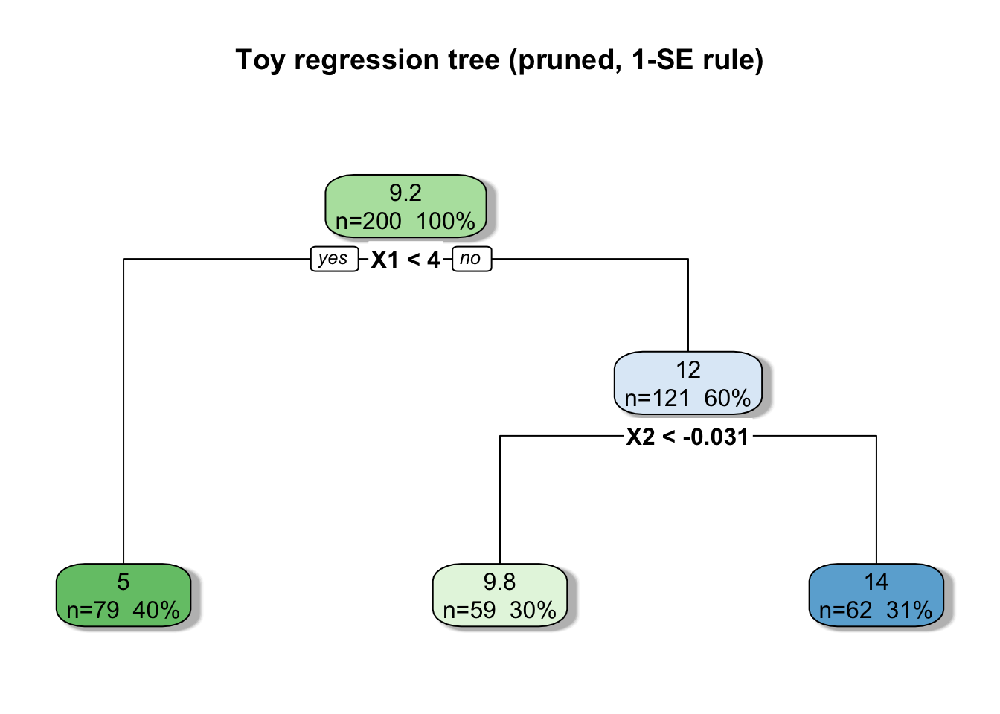
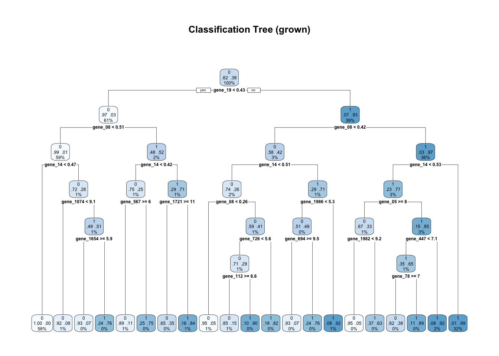
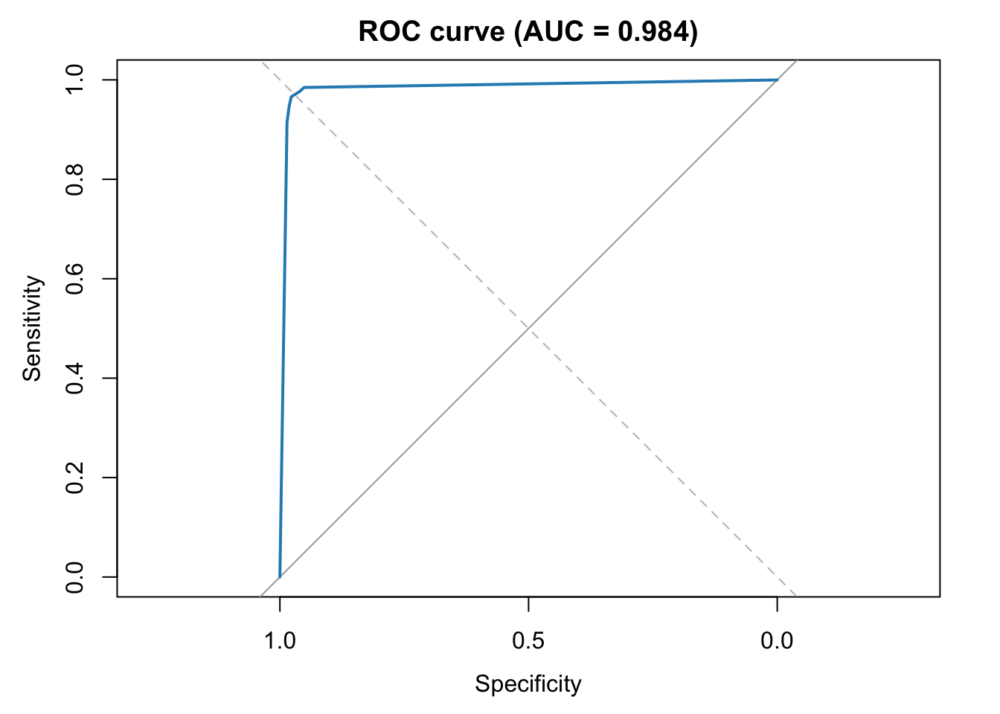

# Core data/plot
req_pkgs <- c(
"dplyr", "ggplot2", "tidyr", "readr", "tibble", "gridExtra",
# Trees
"rpart", "rpart.plot", "partykit",
# Random Forests (pick one or use both)
"ranger", # fast RF (recommended)
"randomForest", # classic RF implementation
# Gradient Boosting
"xgboost", "Matrix", # Matrix for sparse design matrices
# Model interpretation (optional but handy)
"vip", # variable importance plots
"pdp", # partial dependence
"iml" # ICE/SHAP-like tools (optional)
)
# Install any missing
to_install <- setdiff(req_pkgs, rownames(installed.packages()))
if (length(to_install) > 0) {
install.packages(to_install, dependencies = TRUE)
}
# Load all (silently)
invisible(lapply(req_pkgs, require, character.only = TRUE))3 Supervised Learning: Tree Methods
3.1 Setting up R
3.2 Recalling
In the last chapter we studied models that allow us to perform supervised learning regression tasks. We used linear models and different approaches for estimation including OLS, LASSO, Ridge and Elastic Net to predict labels of interest. We did that using an example of a clinical trial in which patients were randomized to receive or not chemotherapy. In the experiment we also collected other features and the expression of 2000 gens. We then fitted and compared OLS, LASSO, Ridge and Elastic Net models and compared regarding model outputs and prediction capacity. In this chapter we will still use the chemotherapy trial example to learn the concept of trees, random forests and XGboost techniques.
3.3 Reading the dataset
# ================================
# Read and prepare TRAIN/TEST (no saving)
# ================================
# 0) Load
trial_ct <- readRDS("~/att_ai_ml/data/trial_ct_chemo_cont.rds")
str(trial_ct[, 1:15]) # quick peek'data.frame': 10000 obs. of 15 variables:
$ patient_id : chr "P001" "P002" "P003" "P004" ...
$ treatment : Factor w/ 2 levels "no_chemo","chemo": 2 1 1 1 2 2 1 2 1 2 ...
$ dose_intensity : num 1.08 0 0 0 1.01 ...
$ patient_age : num 81 61 81 74 41 74 22 61 26 22 ...
$ tumor_grade : Factor w/ 3 levels "G1","G2","G3": 2 2 3 2 2 2 1 2 3 2 ...
$ performance_score: int 1 1 1 0 1 1 2 0 1 0 ...
$ baseline_tumor_mm: num 52.2 43.3 43.2 63.8 54.2 44.9 51.5 95.1 69.5 54.7 ...
$ post_tumor_mm : num 25.8 43.3 43.2 61.2 33.6 37 51.5 60.4 69.5 29.8 ...
$ response_percent : num 50.6 0 0 4.2 38 17.5 0 36.5 0 45.6 ...
$ high_response : int 1 0 0 0 1 0 0 1 0 1 ...
$ gene_01 : num 11.01 9.26 10.09 8.99 9.01 ...
$ gene_02 : num 9.31 7.79 8.95 7.8 8.33 ...
$ gene_03 : num 9.51 8.02 9.45 7.78 8.23 ...
$ gene_04 : num 10.27 9.16 9.42 8.87 9.03 ...
$ gene_05 : num 7.31 8.14 7.83 7.49 7.23 ...Let’s divide the dataset into training and testing like we did in the chapter about regression tasks.
# 2) Stratified 70/30 split by treatment
set.seed(42)
split_strat <- function(df, strat_col, p_train = 0.7) {
idx_tr <- unlist(tapply(seq_len(nrow(df)), df[[strat_col]], function(ix) {
sample(ix, size = floor(p_train * length(ix)))
}))
list(train = sort(idx_tr), test = setdiff(seq_len(nrow(df)), idx_tr))
}
sp <- split_strat(trial_ct, strat_col = "treatment", p_train = 0.7)
train <- trial_ct[sp$train, , drop = FALSE]
test <- trial_ct[sp$test, , drop = FALSE]The next chunk will make sure we will use only the columns that make sense.
# 3) Drop columns that should NOT enter models
# - patient_id: identifier only
# - high_response: binary version of the outcome (leakage if modeling response_percent)
# - baseline_tumor_mm, post_tumor_mm: strongly deterministically related to response_percent
drop_cols <- intersect(
names(train),
c("patient_id", "high_response", "baseline_tumor_mm", "post_tumor_mm")
)
train_nopii <- dplyr::select(train, -dplyr::all_of(drop_cols))
test_nopii <- dplyr::select(test, -dplyr::all_of(drop_cols))
# 4) Check outcome presence
#stopifnot("response_percent" %in% names(train_nopii))Now that we have the training and testing datasets organized we will create the matrices required for running models later. We will keep the same strategy we used for the previous chapters so we can compare the results of today with the ones of that class.
# 5) Build a consistent design (for glmnet / xgboost, etc.)
# Use TRAIN to “freeze” factor levels and dummy columns
f_ols <- response_percent ~ .
ols_tmp <- lm(f_ols, data = train_nopii)
ols_terms <- terms(ols_tmp)
# Model matrices (no intercept column)
X_train <- model.matrix(ols_terms, data = train_nopii)[, -1, drop = FALSE]
X_test <- model.matrix(ols_terms, data = test_nopii)[, -1, drop = FALSE]
y_train <- train_nopii$response_percent
y_test <- test_nopii$response_percent3.4 Loading some helper functions
As in the other chapter
# 6) Small helpers for later evaluations
mae <- function(y, yhat) mean(abs(y - yhat))
rmse <- function(y, yhat) sqrt(mean((y - yhat)^2))
eval_perf <- function(y_true, y_pred) {
tibble::tibble(MAE = mae(y_true, y_pred), RMSE = rmse(y_true, y_pred))
}Before reading the rest of the chapter make sure you have the following objects loaded in your R environment
# ---- Objects now available (in-memory) ----
# train, test # full splits (for inspection/plots)
# train_nopii, test_nopii # safe for tree models (RF) with data.frame API
# X_train, X_test, y_train, y_test # matrices for glmnet / xgboost
# eval_perf(), mae(), rmse() # metric helpers3.5 Model
I the previous classes we learn that predictive AI, also named, machine learning can help us to predict labels using explanatory features, in simple mathematical terms we will have
\[ Y=f(X)+\epsilon \]
\[Y=f(x1,x2,...,xn)+error\]
In the previous chapter we explored models in which f is said to have a linear behaviour
\[Y= \mu + b1 * x1 +.... bn *xn+ \epsilon \tag{3.1}\]
when using the explanatory features to predict the responses.
In this chapter we will learn models that learn the function \(f(X)\) via (decision trees and their ensembles), named Random Forests and XGboost. The trees will be performing regression tasks or classification tasks.
3.6 Trees
Before applying tree-based models to real clinical data, it is useful to build intuition with a simple synthetic example. Decision trees are, at their core, collections of if-else rules that partition the feature space into smaller, homogeneous regions. Each region (or leaf) represents a group of observations that share similar predicted values. To understand how such rules emerge from data, we will simulate a small dataset where the true underlying relationship between predictors and the outcome is explicitly governed by ifelse logic.
In this example, we create two explanatory variables- \(X_1\) and \(X_2\)-and one response variable \(Y\). The response depends on threshold-based rules involving these features, plus a small amount of random noise:
\[ Y= \begin{cases}5+\varepsilon, & \text { if } X_1 \leq 4 \\ 10+\varepsilon, & \text { if } X_1>4 \text { and } X_2 \leq 0 \\ 14+\varepsilon, & \text { if } X_1>4 \text { and } X_2>0\end{cases} \]
where \(\varepsilon \sim \mathcal{N}\left(0,0.8^2\right)\) adds a small random deviation around each mean value. This structure defines three regions in the predictor space-each corresponding to one “rule” that determines the value of \(Y\).
The following R code generates this dataset:
# ===== 1) TOY EXAMPLE: a small, interpretable tree =====
# Two features with threshold structure, plus noise
n <- 200
X1 <- runif(n, 0, 10) # e.g., "age-like"
X2 <- rnorm(n, 0, 1) # e.g., "biomarker-like"
# Piecewise rule used to generate y (ground truth if/else)
# IF X1 <= 4 THEN y ~ 5 + noise
# ELSE IF X2 <= 0 THEN y ~ 10 + noise
# ELSE y ~ 14 + noise
y <- ifelse(X1 <= 4, 5, ifelse(X2 <= 0, 10, 14)) + rnorm(n, 0, 0.8)
toy <- tibble::tibble(X1 = X1, X2 = X2, y = y)
head(toy)# A tibble: 6 × 3
X1 X2 y
<dbl> <dbl> <dbl>
1 7.56 0.570 13.1
2 1.08 1.01 5.79
3 9.04 -0.346 9.59
4 5.55 -0.249 10.1
5 9.33 0.213 14.8
6 0.759 -0.0242 5.53The resulting dataset toy contains 200 simulated observations, each described by two predictors ( X1 , X2 ) and a numeric outcome ( y ). The piecewise constant nature of the data mimics a situation where a target variable depends on threshold effects-for instance, a biomarker that changes behavior only above a certain age or concentration level.
This simple simulation is pedagogically powerful: when we fit a decision tree to these data, the model will recover rules very similar to the ones used to generate \(Y\). Each split in the tree corresponds to a decision node, where the algorithm asks a question of the form “Is \(X_j \leq s\) ?”. Depending on the answer, the observation moves to a child node on either the left or right branch. The process continues until no further improvement in prediction can be achieved, producing terminal nodes (leaves) that store the average predicted value of \(Y\) for that region.
By visualizing and interpreting this tree, we can clearly see how decision trees learn and represent piecewise-constant approximations of complex, nonlinear relationships using only simple, interpretable rules.
In this chapter we will learn how to represent datasets like this in the form of the next figure
One possibility could be approximating the y values using the if else rules expressed in the tree
y is 5.0 when
X1 < 4
y is 9.8 when
X1 >= 4
X2 < -0.031
y is 14.0 when
X1 >= 4
X2 >= -0.031Which can be visualised as with the usage of the Figure

This means the fitted model partitions the predictor space into three rectangular regions, each defined by simple threshold conditions on \(X_1\) and \(X_2\) : 1. Region 1 (Left branch):
When \(X_1<4\), the model predicts \(\hat{y}=5.0\). This corresponds to the “younger” or “low-X1” group in our simulation, and reproduces the first rule of the data-generating process. 2. Region 2 (Middle branch):
When \(X_1 \geq 4\) and \(X_2<-0.03\), the model predicts \(\hat{y}=9.8\). This reflects the second rule-if \(X_1\) is large but the second biomarker is low, \(y\) is around 10 . 3. Region 3 (Right branch):
When \(X_1 \geq 4\) and \(X_2 \geq-0.03\), the model predicts \(\hat{y}=14.0\). This captures the third rule-both features are high, so the predicted outcome rises further. Each “when” statement defines a path from the root to a leaf, and each leaf holds the average of the training responses that fall into that region. In this simple example, the regression tree recovered the same three rules used to generate the data, showing how trees naturally express models as collections of logical conditions (if/else) rather than algebraic equations.
3.6.1 Non vegetable anatomy of a tree
The following annotated Figure 1.6 depicts the anatomy of a computer science (algorithm) trees

A decision tree is composed of a small number of fundamental building blocks that work together to partition the predictor space and generate predictions. The annotated figure highlights six key elements each serving a distinct role in the tree’s logic and interpretability.
The root node is the starting point of the tree and contains the entire dataset below it. It summarises the outcome distribution before any splitting occurs and represents the baseline prediction if no further structure were learned. All decision paths originate from this node.
An internal node is any node that performs a further split. It contains a rule such as X1 < 4 or X2 ≥ –0.03, chosen to maximize homogeneity in the resulting subgroups. These nodes divide the data into more refined regions and define the hierarchical structure of the model.
Between every parent and child node lies a splitting rule, which acts as the conditional logic directing observations left or right. This is the “if–else” mechanism of the tree.
Between-node rules partition the feature space and determine how each observation flows through the model, creating a sequence of decisions that progressively increases predictive precision. Each node contains a compact summary of the data reaching that point, typically including:
the predicted value (in regression),
the number of observations in the node, and
the percentage of the sample represented. This within-node information describes the characteristics of the subgroup created by previous splits and forms the foundation for the node’s prediction.
A leaf node is a node with no further splits.
Leaf nodes provide the model’s final predictions. They correspond to the most homogeneous subgroups discovered during training, each representing a rule-defined region of the predictor space. In regression trees, the leaf value is the mean outcome of that subgroup. Every split produces two child nodes, each inheriting all conditions from its ancestors.
These nodes represent progressively more detailed subdivisions of the dataset.
A child node can either become another internal node (if it contains meaningful further structure) or a leaf node (if splitting stops).
3.6.2 Attributes of trees
Decision trees are among the most intuitive and versatile models in machine learning. They combine the logic of if-else reasoning with the ability to approximate complex, nonlinear functions. The structure of a tree provides both a visual and conceptual bridge between human decision-making and predictive modeling.
Hierarchical and rule-based structure
A decision tree represents a sequence of binary decisions. At each internal node, the algorithm tests a condition of the form
\[ x_j \leq s, \]
where \(x_j\) is one explanatory variable and \(s\) is a threshold chosen to maximize predictive homogeneity the resulting subgroups.
Each path from the root to a leaf corresponds to a complete logical rule that defines a rectangular region of the predictor space. Leaves store a single value (for regression) or a class probability (for classification), so the tree acts as a collection of piecewise rules.
Other important attributes include the following items:
Local modeling and nonlinearity:
Unlike linear regression, which assumes a single global relationship between predictors and the response, trees build local models. Each branch captures relationships that may differ across subsets of the data. This allows trees to represent sharp thresholds, discontinuities, and strong interactions between variables without explicitly defining them in advance.
Automatic handling of interactions:
Because each new split is conditional on previous \(\bigcirc\) s, trees naturally model interactions between predictors.
For example, a second-level split on \(X_2\) applies only to observations that already satisfy a condition on \(X_1\). This hierarchical conditioning is equivalent to including interaction terms in a regression model, but it emerges automatically from the recursive partitioning process.
Scale and data type robustness:
Decision trees are invariant to feature scaling-splits depend only on ordering, not on variable magnitude. They also handle both numeric and categorical variables seamlessly. In many implementations, missing values can be directed through surrogate splits, allowing a model to make predictions even with incomplete data.
Interpretability and transparency: Each decision path can be read as an explicit rule such as “if tumor size \(<3 \mathrm{~cm}\) and biomarker \(\geq 1.2\) then predict high response.” This makes trees particularly appealing in health and life-science contexts, where interpretability is essential for clinical validation and regulatory transparency. A tree’s visual representation helps communicate how specific variables drive predictions in different patient subgroups.
Despite their interpretability, single trees can be unstable: small perturbations in the data may change the chosen splits and produce very different trees. Their predictions are also piecewise constant, creating abrupt jumps between regions. To improve stability and predictive accuracy, modern practice often aggregates many trees into ensembles such as Random Forests or Gradient I \(\downarrow\) sted Trees, which we will explore next.
3.6.3 A very short introduction to interactions
In predictive modeling, an interaction occurs when the effect of one explanatory variable on the outcome depends on the value of another variable. Formally, two variables \(X_1\) and \(X_2\) interact if the change in the response \(Y\) associated with \(X_1\) varies according to the level of \(X_2\).
In linear models, this relationship must be specified explicitly by adding a product term (e.g., \(\beta_3 X_1 X_2\) ). In decision trees, interactions emerge automatically: each split is conditional on previous decisions, so the model can represent different relationships between \(X_1\) and \(Y\) depending on the branch defined by \(X_2\).
In other words, trees learn interactions hierarchically rather than algebraically-each branch of the tree corresponds to a different interaction context.
Examples of interactions include:
- Clinical example - drug efficacy and age
The effectiveness of a chemotherapy drug ( \(X_1\) ) may depend on the patient’s age ( \(X_2\) ). The treatment might be highly effective in younger patients but less so in older ones due to metabolism or organ function.
In this case, the effect of the drug is conditional on age - an interaction between treatment and age. 2. Biomarker example - gene expression and tumor grade
A specific gene expression score ( \(X_1\) ) could predict tumor response only for patients with highgrade tumors ( \(X_2\) ). For low-grade tumors, the same biomarker might have little to no effect. This represents a biological interaction: the prognostic value of the biomarker changes across tumor grades. 3. Behavioral or physiological example - dose and physical condition
The relationship between drug dose ( \(X_1\) ) and therapeutic response ( \(Y\) ) may differ between patients with good and poor performance status ( \(X_2\) ). The slope of the dose-response curve is steeper in one group and flatter in the other, illustrating an interaction between dose intensity and baseline health.
- Generic data-science example - temperature and humidity
In environmental modeling, the effect of temperature ( \(X_1\) ) on energy consumption ( \(Y\) ) depends on humidity ( \(X_2\) ).
High temperatures increase consumption only when humidity is also high, due to greater airconditioning load - another clear interaction.
- Genotype by environment interactions
In genetics usually its important to understand how the interaction between genomic and environmental information defines a given phenotype.
We learnt what trees are and their characteristics. We will now understand how to implement them with R and how they learn the if else rules.
Interactions can be explored graphically with the usage of interaction plots.
In the case of no interactions the graphic will be like the one shown in Figure 3.2, in which the lines connecting the mean response by dose intensity level are parallel, meaning that the means response does not change when we change the dose intensity level.
ggplot(
agg_no_inter,
aes(dose_intensity, mean_resp, color = tumor_grade, group = tumor_grade)
) +
geom_line(linewidth = 1.3) +
geom_point(size = 3) +
labs(
title = "Interaction Plot (NO Interaction Example)",
subtitle = "Parallel lines → effect of dose is the same across tumor grades",
x = "Dose intensity",
y = "Mean response (%)",
color = "Tumor grade"
) +
theme_minimal(base_size = 14)
On the other hand when we have the presence of an interaction, like in our chemotherapy example, we can produce the interaction plot using the following code. We can see that the lines in the interaction plot are not parallel indicating the presence of interaction, in other words, the level o mean tumor response changes according to the level of dose intensity. This is shown in FIgure Figure 3.3
# Interaction-style plot
ggplot(agg, aes(dose_bin, mean_resp, color = tumor_grade, group = tumor_grade)) +
geom_line(linewidth = 1.3) +
geom_point(size = 3) +
labs(
title = "Interaction Plot (Observed Data Only)",
subtitle = "How tumor grade modifies the dose–response pattern",
x = "Dose intensity (binned)",
y = "Mean tumor response (%)",
color = "Tumor grade"
) +
theme_minimal(base_size = 14)
3.6.3.1 How a tree is built
A regression tree approximates the unknown function \(f(\mathbf{X})\) by a piecewise-constant model:
\[ \hat{f}(\mathbf{X})=\sum_{m=1}^M c_m \mathbf{1}\left\{\mathbf{X} \in R_m\right\}, \]
where each leaf (region \(R_m\) ) predicts a constant \(c_m\) (usually the mean \(y\) in that region).
This formulation shows that, although trees are non-linear in the inputs, they are linear in the indicator functions that define the regions. In other words, a tree can be viewed as a linear model on a transformed feature space-one where the original variables have been replaced by a collection of binary indicators representing the hierarchical if-else splits.
\[ \hat{f}(X)=c_1 \mathbf{1}_{R_1}(X)+c_2 \mathbf{1}_{R_2}(X)+\cdots+c_M \mathbf{1}_{R_M}(X) . \]
From this perspective, decision trees extend the concept of a linear model by allowing the basis functions ( \(\mathbf{1}_{R_m}\) ) to be learned from data rather than predefined. Each new split creates a new “basis” that isolates a subset of the data with distinct local behavior.
We can compare linear and tree models regarding some geometrical and conceptual interpretation:
- In a linear model, the function \(f(X)\) defines a single plane (or hyperplane) across the feature space. Predictions vary smoothly and continuously with \(X\).
- In a decision tree, the feature space is divided into rectangular regions, within which predictions are constant. The function \(f(X)\) therefore takes a piecewise-constant form, producing a step-like approximation to the true relationship.
Visually, a tree can be seen as a function that “jumps” at each decision boundary, instead of tilting like a plane. This enables trees to capture sharp thresholds, nonlinearities, and interactions that linear models cannot express without manual feature engineering.
Learning = splitting to reduce impurity. At a node containing samples \(S\), the CART algorithm chooses a feature \(j\) and threshold \(s\) that minimize the total squared error after splitting:
\[ \left(j^*, s^*\right)=\arg \min _{j, s}\left[\sum_{i \in S_L}\left(y_i-\bar{y}_L\right)^2+\sum_{i \in S_R}\left(y_i-\bar{y}_R\right)^2\right], \]
equivalently maximizing variance reduction:
\[ \Delta I=I(S)-\frac{\left|S_L\right|}{|S|} I\left(S_L\right)-\frac{\left|S_R\right|}{|S|} I\left(S_R\right), \quad I(S)=\frac{1}{|S|} \sum_{i \in S}\left(y_i-\bar{y}_S\right)^2 . \]
3.6.3.2 Choosing the best split: impurity and information gain
At every node, the tree algorithm searches for the feature and cut-point that most reduce the node’s impurity that is, the heterogeneity of responses within the node.
For regression tasks such as predicting response_percent, impurity is measured by the within-node variance:
\[ I(S) = \frac{1}{|S|} \sum_{i \in S} (y_i - \bar{y}_S)^2 . \]
The chosen split \((j^*, s^*)\) maximizes the reduction in impurity:
\[ \Delta I = I(\text{parent}) - \frac{n_L}{n_{\text{parent}}} I(\text{left}) - \frac{n_R}{n_{\text{parent}}} I(\text{right}). \]
Intuitively, the algorithm prefers splits that make the child nodes more homogeneous in response_percent.
For classification tasks, rpart() uses the Gini index or entropy instead of variance.
3.6.4 Continuous vs. categorical predictors in rpart
rpart handles numeric and factor variables differently when proposing binary splits at a node. Continuous predictors (e.g., dose_intensity , gene_14) - Procedure: sort unique values of \(x_j\); evaluate candidate thresholds at midpoints between adjacent values.
For each threshold \(s\), form left/right nodes \(\left(x_j \leq s\right)\) vs. \(\left(x_j>s\right)\) and compute the impurity reduction (variance for regression; Gini/entropy for classification).
Choose the \(s\) that maximizes \(\Delta I\).
Consequences: no scaling needed (splits depend on order, not magnitude); trees naturally create step-functions and thresholds (e.g., a cut at gene_14 \(\geq 0.98\) in our chemo example).
Categorical predictors (e.g., treatment \(\in\{\) no_chemo , chemo \(\}\), tumor_grade \(\in\{\mathrm{G} 1, \mathrm{G} 2, \mathrm{G} 3\}\) )
Binary factors: trivial split (one level left, the other right).
Multi-level factors: in principle there are \(2^{m-1}-1\) groupings of \(m\) levels; rpart avoids brute force by ordering levels by their node statistics and then testing only adjacent two-group splits along that order:
Classification: order levels by class composition; test adjacent partitions; pick the one with largest Gini/entropy reduction.
Regression: order levels by the mean response; test adjacent partitions; pick the best variance reduction.
Result: efficient search that still finds strong groupings (e.g., tumor_grade \(\in\{G 2, G 3\}\) vs. \(\{G 1\}\) if those two higher grades share similar response patterns).
Ordered factors
- If a variable is an ordered factor, rpart treats it like a numeric rank and proposes threshold splits along that order (behaves like a continuous variable).
Missing values \(\&\) surrogates
- If the primary split variable is missing for a case (e.g., missing gene_14), rpart can route it using surrogate splits-backup variables that mimic the primary partition (controlled by usesurrogate, maxsurrogate).
Practical notes for our dataset
- Keep true categorical variables as factors (e.g., treatment , tumor_grade ), and keep gene expression and doses numeric.
- High-cardinality categorical variables can make splits unstable; if you have such variables, consider sensible grouping beforehand.
- No need for one-hot encoding or scaling; rpart handles both types natively.
3.6.4.1 Stopping & pruning.
To avoid overfitting, trees stop growing (e.g., maxdepth , minsplit ) and/or are pruned via costcomplexity:
\[ \operatorname{Score}(T)=\operatorname{RSS}(T)+\alpha|T|, \quad \alpha \geq 0, \]
selecting the smallest subtree within 1-SE of the minimum cross-validated error.
The model is built by recursively partitioning the feature space into smaller and more homogeneous regions.
Each split introduces a new if-else rule, and the process continues until no further improvement is possible or a stopping rule is reached.
In some future sections we will see the concept of ensembles and Link trees to ensembles. When we combine many trees-as in Random Forests and Gradient Boosted Trees (XGBoost)-the model becomes a sum of multiple tree functions:
\[ \hat{f}(X)=\sum_{b=1}^B \hat{f}_b(X), \]
where each \(\hat{f}_b(X)\) is a tree trained on a different subset or residual of the data. This ensemble structure restores smoothness and reduces variance while keeping the interpretability and flexibility of the tree-based representation.
3.6.4.2 Bias–variance perspective
A fully grown tree fits every training case perfectly but generalizes poorly its variance is high.
Pruning or using constraints (minsplit, cp, maxdepth) increases bias slightly but drastically reduces variance, improving predictive stability.
In the chemotherapy trial, an unpruned tree would memorize gene-expression idiosyncrasies of a few patients, giving near-zero error in training but poor test performance.
The pruned tree achieves a better bias–variance balance, capturing major response patterns while ignoring random noise.
3.6.4.3 Stages to build a tree
The construction of a tree can be described in several stages: initialization, growing, splitting, stopping, pruning, and prediction.
- Initialization
- Start with the full training dataset at the root node.
Every observation belongs to this node, and the model computes a simple summary: - for regression: the mean response \(\bar{y}\); - for classification: the most frequent class. - This initial value is the baseline prediction before any split occurs.
- Searching for the best split (growing phase)
At each step, the algorithm evaluates all possible binary splits of all features. For a numeric variable \(x_j\), it considers thresholds \(s\) such that the data are divided into
\[ \text { Left: } x_j \leq s, \quad \text { Right: } x_j>s . \]
For categorical features, the split divides categories into two subsets.
For each candidate split, the algorithm calculates the impurity reduction, which measures how much the new partition improves the homogeneity of the outcome:
\[ \Delta I=I(\text { parent })-\frac{n_L}{n_{\text {parent }}} I(\text { left })-\frac{n_R}{n_{\text {parent }}} I(\text { right }), \]
where \(I(\cdot)\) is the impurity index: - variance for regression, - Gini or entropy for classification.
The split that yields the largest reduction in impurity is selected. 3. Creating new nodes (splitting)
Once the best feature and threshold are chosen: - The parent node is replaced by two child nodes (left and right). - Each child node now represents a subset of the data that satisfies one side of the if/else rule. - The prediction for each child node is recalculated as the mean (regression) or class proportion (classification).
This process is repeated recursively for each child node. At each step, the algorithm searches again for the best local split to further reduce impurity within that node.
- Stopping criteria (when to stop growing)
The tree keeps expanding until one or more stopping conditions are met: - The node contains fewer than a minimum number of observations ( minsplit , minbucket ). - The reduction in impurity from a new split is below a threshold ( cp in rpart ). - The tree has reached a maximum depth ( maxdepth ). - All observations in the node have identical responses.
When a node can no longer be split under these rules, it becomes a terminal node or leaf. 5. Cost-complexity pruning (simplifying the tree)
Fully grown trees tend to overfit: they capture noise as if it were signal. To restore generalization, CART uses cost-complexity pruning. This involves fitting a large tree first, then sequentially removing the least useful branches according to the criterion
\[ R_\alpha(T)=\operatorname{RSS}(T)+\alpha|T|, \]
where \(|T|\) is the number of terminal nodes and \(\alpha \geq 0\) penalizes complexity. Cross-validation identifies the optimal penalty \(\alpha^*\). The 1-SE rule then selects the smallest subtree whose error is within one standard error of the minimum, balancing accuracy and simplicity. 6. Prediction
Once the tree is built (and possibly pruned), prediction for a new observation is simple: 1. Start at the root. 2. Follow the if/else path defined by its feature values (e.g., “if dose_intensity < 0.9 go left, else go right”). 3. When a leaf is reached, return the value stored there: - for regression: the mean response in that region; - for classification: the majority class or probability.
This process is deterministic and interpretable: each prediction can be traced to a specific logical path. 7. Visual summary of the process
| Stage | Description | Typical R function element |
|---|---|---|
| Initialization | Root node with all data | automatic in rpart() |
| Growing | Repeatedly searches for the split minimizing node impurity | controlled by minsplit, maxdepth, cp |
| Splitting | Partitions data and creates left/right child nodes | recursive calls within rpart() |
| Stopping | Halts if no improvement or nodes are too small | minbucket, cp threshold |
| Pruning | Removes overfitted branches using cost–complexity pruning | prune() + cross-validation |
| Prediction | Applies learned rules to new data | predict() |
Note: Single decision trees can easily overfit the training data; we’ll use pruning (and later ensembles) to control this.
3.7 Trees for regression and classification (CART)
Decision trees can solve both regression and classification tasks within a single framework historically called CART (Classification and Regression Trees). CART is a trademark. The idea is to approximate the unknown function \(f(\mathbf{X})\) by splitting the feature space into rectangular regions and predicting a constant within each region (a leaf).
For regression, as in our chemotherapy example where the response is continuous ( response_percent ), the tree chooses splits that reduce the within-node variance. If a node contains samples \(S\), its impurity is
\[ I_{\mathrm{reg}}(S)=\frac{1}{|S|} \sum_{i \in S}\left(y_i-\bar{y}_S\right)^2, \]
and the “best” split is the one that maximizes the reduction in impurity (variance) after partitioning \(S\) into left/right children.
For classification, e.g., if we instead predict the binary label high_response ( \(\geq 30 \% \mathrm{vs}<30 \%\) ), CART typically measures impurity using the Gini index (or entropy). If a node has class proportions \(\left\{p_k\right\}_{k=1}^K\),
\[ I_{\mathrm{cls}}^{\mathrm{Gini}}(S)=1-\sum_{k=1}^K p_k^2, \quad I_{\mathrm{cls}}^{\mathrm{Ent}}(S)=-\sum_{k=1}^K p_k \log _2 p_k . \]
The algorithm selects the feature and threshold that yield the largest impurity reduction (a.k.a. information gain for entropy, Gini gain for Gini). Although trees are nonlinear in the inputs, they are linear in indicator functions of regions:
\[ \hat{f}(\mathbf{X})=\sum_{m=1}^M c_m \mathbf{1}\left\{\mathbf{X} \in R_m\right\} \]
with one constant \(c_m\) per leaf \(R_m\). In our context, each path (“if dose_intensity \(\leq 0.9\) and gene_14 \(>\) 1.0 then …”) maps to a region with a clinically interpretable average prediction-mean tumor shrinkage for regression, or class probability for classification.
3.7.1 How the rpart algorithm learns a tree
How the rpart algorithm learns a tree The rpart algorithm (recursive partitioning) is an open-source implementation of the CART family. It learns a tree greedily, one split at a time, choosing at each node the feature and cut-point that most improve node purity.
Split selection (objective). At a node with samples \(S\), rpart scans all predictors \(x_j\) and candidate split points \(s\), evaluates the impurity of the left child \(S_L=\left\{i: x_{i j} \leq s\right\}\) and right child \(S_R=\left\{i: x_{i j}>s\right\}\), and picks \(\left(j^*, s^*\right)\) that maximizes the impurity reduction
\[ \Delta I=I(S)-\frac{\left|S_L\right|}{|S|} I\left(S_L\right)-\frac{\left|S_R\right|}{|S|} I\left(S_R\right) . \]
- For regression (our response_percent target), \(I(\cdot)\) is variance.
- For classification (e.g., high_response), \(I(\cdot)\) is usually Gini (default) or entropy.
Continuous vs. categorical predictors. - Continuous variables (e.g., dose_intensity , gene_14 ) are split at thresholds. Practically, rpart considers cut-points at midpoints between sorted unique values; each candidate produces a left/right partition, and the best \(\Delta I\) wins. - Categorical variables (e.g., tumor_grade with levels G1/G2/G3) are handled by creating a binary partition of levels. rpart orders levels by class composition (for classification) or node means (for regression) and evaluates adjacent two-group splits without trying all \(2^{m-1}-1\) combinations. - No scaling is required: decisions depend on orderings, not magnitudes.
From our examples. - In the toy regression, the true rule is: if \(X_1 \leq 4\) then \(y \approx 5\); else if \(X_2 \leq 0\) then \(y \approx 10\); else \(y \approx\) 14. rpart rediscovers this by choosing the vari \(\downarrow\), e-reducing thresholds on \(X_1\) and \(X_2\). - In the clinical dataset, rpart selected thresholds on gene_14, gene_08, and gene_19 that create leaves whose means trace a clinically plausible gradient of tumor shrinkage.
Stopping and pruning. Left unchecked, greedy splitting makes overly deep, high-variance trees. rpart controls complexity in two ways: - Top-down stops: hyperparameters such as minsplit , minbucket , and maxdepth prevent tiny or overly deep nodes. - Cost-complexity pruning: rpart grows a large tree, computes a sequence of subtrees indexed by the complexity parameter cp , and uses internal cross-validation to estimate the error ( printcp , plotcp). Selecting the 1-SE cp yields a simpler subtree whose error is within one standard error of the minimum, improving generalization.
Missing data & surrogate splits. If a case is missing the variable used at a node (say gene_14 ), rpart can route it using surrogate splits -backup variables that tend to make the same partition (controlled by usesurrogate, maxsurrogate ). This is practical in clinical datasets with sporadic biomarker gaps.
Why this matters for our course.
For regression (our primary task), trees optimize variance reduction, giving piecewise-constant predictions that capture thresholds and interactions without manual feature engineering.
For classification (secondary task with high_response), trees optimize Gini/entropy, naturally handling multi-class extensions and unscaled predictors.
Understanding rpart’s split logic (variance, Gini), candidate generation (midpoints, level partitions), and pruning (cp & 1-SE) demystifies how the if/else rules are learned from data.
3.7.2 Hyperparameters for decision trees (rpart): what, why, how
Tree growth is intentionally greedy and, left unconstrained, will overfit. In rpart, model complexity is governed by a small set of hyperparameters-values that control learning but are not learned from the data. Tuning them is crucial for generalization.
Consider again the equation
\[Y=f\left(x_1, x_2, \ldots, x_n\right)+ error\]
A hyperparameter is a setting that controls how \(f\) is learned, not something learned directly from the data by the usual fitting step. Hyperparameters define the shape/complexity of the function class you allow and how aggressively you search within it. They live outside \(f\), but they constrain and guide the learning of \(f\).
What they control (regression \(\&\)classification)
- minsplit
Minimum number of cases required in a node to consider a split. Larger values make the tree more conservative (fewer splits). - minbucket
Minimum number of cases in each terminal node (leaf). Often set near floor(minsplit/3). - maxdepth
Maximum number of splits along any root-to-leaf path (tree height). Caps interactions/complexity. - cp (complexity parameter)
Minimum relative improvement required to add a split. Also indexes the cost-complexity pruning sequence (printcp , plotcp). - xval
Number of folds for rpart’s internal cross-validation to estimate out-of-sample error along the pruning path. - parms (classification only)
Split criterion: parms = list(split = “gini”) (default) or parms = list(split = “information”) (entropy). - usesurrogate, maxsurrogate
Handling of missing data via surrogate splits (useful in clinical/omics tables with sporadic NAs).
Which impurity? - Regression ( method = “anova” ): variance reduction. - Classification ( method = “class” ): Gini (default) or entropy via parms.
3.8 Running a tree for our chemotherapy example
We will use the function rpart of the rpart package to implement the tree for our chemothreapy case. Recall that we will be explaining response_percente in terms of the all other variables in the data that are of our interest response_percent ~ .
The code in the next two chunks first grows a CART regression tree to predict response_percent from all available predictors in train_nopii. We use method = “anova”, which means each split is chosen to reduce within-node variance of the continuous outcome. The control list sets three guardrails that shape the initial tree: cp = 0.001 allows the tree to keep growing as long as each additional split reduces the resubstitution error by at least 0.1%; maxdepth = 8 caps the number of successive decisions along any root-to-leaf path; and minsplit = 30 prevents the algorithm from splitting nodes that hold fewer than 30 training cases. With these settings the model is encouraged to discover structure but not to chase tiny, sample-specific patterns. After fitting, printcp(ct_tree) reports the cost–complexity pruning path. Each row summarizes a candidate subtree obtained by pruning the large tree at a given complexity parameter CP CP. The columns have specific meanings. nsplit is the number of internal splits in that subtree. rel error is the training (resubstitution) error of that subtree relative to the root node error. xerror is the cross-validated error (here from rpart’s built-in K-fold procedure), again on the same relative scale, and xstd is its standard error across folds. In your run, the root node error is shown at the top (“Root node error: 2448864/6999 = 349.89”), which is simply the total sum of squared residuals divided by n n when predicting the overall mean. As the tree grows from nsplit = 0 to nsplit = 13, rel error falls monotonically, while xerror drops quickly and then flattens, indicating diminishing returns from additional complexity. To select a final model that favors parsimony without sacrificing predictive accuracy, the code applies the 1-SE rule. It locates the row with the minimum cross-validated error (xerr_min) and then chooses the smallest subtree whose xerror is within one standard error (xstd_min) of that minimum. The corresponding CP value (cp_1se) defines how aggressively the tree is pruned. prune(ct_tree, cp = cp_1se) returns this compact subtree as ct_pruned. Conceptually, this step trims away branches that improve apparent fit on the training set but do not demonstrably improve out-of-sample performance beyond sampling variability. The two rpart.plot calls draw the grown and pruned trees. Internal nodes display the chosen split conditions; leaves display the predicted outcome (the mean response_percent among training cases in that terminal region) and support counts. Comparing the “grown” and “pruned” plots makes the effect of pruning tangible: superfluous lower-level branches disappear, leaving a smaller set of clinically interpretable rules. For a human-readable summary of those rules, rpart.rules(ct_pruned, style = “tallw”) prints each root-to-leaf path as a nested “when … then …” statement. Your output shows that the pruned tree uses three molecular predictors gene_14, gene_08, and gene_19 to partition the cohort. Thresholds on these continuous features define rectangular regions of the predictor space, and each region has an associated predicted response. For example, when gene_14 < -0.728 and gene_19 < -0.65, the model predicts a mean shrinkage of about 0.97 percentage points; when gene_14 ≥ 0.977 and gene_08 ≥ 2.03, it predicts about 62.68 percentage points. The intermediate leaves trace a graded pattern: as gene_14 and gene_08 thresholds increase and gene_19 crosses its cut-points the predicted response_percent rises through roughly 6.31, 12.83, 20.28, 28.76, 37.38, 47.20, and 53.02 before reaching the top stratum. This staircase behavior reflects the piecewise-constant nature of a regression tree: within each leaf the prediction is constant, and it jumps at the learned split boundaries. Finally, the evaluation chunk applies the pruned tree to both training and test data and summarizes predictive error via MAE and RMSE. The training set errors (MAE ≈ 2.31, RMSE ≈ 3.03) and the held-out test set errors (MAE ≈ 2.43, RMSE ≈ 3.21) are close in magnitude, which is the hallmark of a model that generalizes reasonably well without obvious overfitting. The slight increase on the test set is expected; the absence of a large gap suggests that the 1-SE pruning achieved a good bias–variance balance for this dataset. These results can be obtained running the next chunks.
# Grow a CART regression tree
ct_tree <- rpart(
response_percent ~ .,
data = train_nopii,
method = "anova",
control = rpart.control(cp = 0.001, maxdepth = 8, minsplit = 30)
)
# Prune via 1-SE rule
printcp(ct_tree)
Regression tree:
rpart(formula = response_percent ~ ., data = train_nopii, method = "anova",
control = rpart.control(cp = 0.001, maxdepth = 8, minsplit = 30))
Variables actually used in tree construction:
[1] gene_08 gene_14 gene_19
Root node error: 2448864/6999 = 349.89
n= 6999
CP nsplit rel error xerror xstd
1 0.7924745 0 1.000000 1.000227 0.01081767
2 0.0826816 1 0.207526 0.209410 0.00397193
3 0.0455275 2 0.124844 0.126561 0.00236147
4 0.0159802 3 0.079316 0.081182 0.00179474
5 0.0138112 4 0.063336 0.067376 0.00134407
6 0.0057965 5 0.049525 0.052308 0.00106611
7 0.0036277 6 0.043729 0.046388 0.00096049
8 0.0031558 7 0.040101 0.042604 0.00091233
9 0.0030375 8 0.036945 0.039700 0.00087026
10 0.0029545 9 0.033908 0.038201 0.00083974
11 0.0022781 10 0.030953 0.033671 0.00067939
12 0.0012786 11 0.028675 0.031293 0.00062538
13 0.0010818 12 0.027396 0.030282 0.00060776
14 0.0010000 13 0.026315 0.029300 0.00059060best_row <- which.min(ct_tree$cptable[,"xerror"])
xerr_min <- ct_tree$cptable[best_row, "xerror"]
xstd_min <- ct_tree$cptable[best_row, "xstd"]
cp_1se <- ct_tree$cptable[ct_tree$cptable[,"xerror"] <= xerr_min + xstd_min, "CP"][1]
ct_pruned <- prune(ct_tree, cp = cp_1se)
# Human-readable rules (if/else)
rpart.plot::rpart.rules(ct_pruned, style = "tallw")response_percent is 0.97 when
gene_14 < -0.728
gene_19 < -0.65
response_percent is 6.31 when
gene_14 is -0.728 to 0.014
gene_19 < -0.65
response_percent is 8.17 when
gene_14 < -0.523
gene_08 < -0.37
gene_19 >= -0.65
response_percent is 12.83 when
gene_14 is -0.523 to 0.014
gene_08 < -0.37
gene_19 >= -0.65
response_percent is 15.29 when
gene_14 < 0.014
gene_08 >= -0.37
gene_19 is -0.65 to -0.18
response_percent is 20.28 when
gene_14 < 0.014
gene_08 >= -0.37
gene_19 >= -0.18
response_percent is 23.26 when
gene_14 is 0.014 to 0.977
gene_08 < 0.25
gene_19 < 0.46
response_percent is 28.76 when
gene_14 is 0.014 to 0.977
gene_08 >= 0.25
gene_19 < 0.46
response_percent is 32.26 when
gene_14 is 0.014 to 0.977
gene_08 < 0.71
gene_19 >= 0.46
response_percent is 37.38 when
gene_14 is 0.014 to 0.977
gene_08 >= 0.71
gene_19 >= 0.46
response_percent is 41.61 when
gene_14 >= 0.977
gene_08 < 1.56
gene_19 < 1.25
response_percent is 47.20 when
gene_14 >= 0.977
gene_08 < 1.56
gene_19 >= 1.25
response_percent is 53.02 when
gene_14 >= 0.977
gene_08 is 1.56 to 2.03
response_percent is 62.68 when
gene_14 >= 0.977
gene_08 >= 2.033.8.1 Printing the trees
# Visualize grown and pruned trees
rpart.plot(ct_tree, type = 2, extra = 101, box.palette = "Blues",
main = "Clinical trial tree (grown)")
rpart.plot(ct_pruned, type = 2, extra = 101, box.palette = "GnBu",
main = "Clinical trial tree (pruned, 1-SE)")
3.8.1.1 Interpreting the grown and pruned trees
The two plots visualize successive stages of the same model. The first represents the grown tree-the full structure obtained when the algorithm keeps splitting the data as long as it finds any measurable reduction in node impurity. The second shows the pruned tree, obtained after applying the 1-SE rule of cost-complexity pruning, which removes branches that do not materially improve cross-validated performance.
In the grown tree, the structure is deeper and more branched. Each internal node corresponds to a binary decision of the form “Is gene \({ }_{(\mathrm{j})} \leq \mathrm{s}\) ?”, and each terminal node (leaf) stores the mean value of response_percent among observations satisfying that sequence of conditions. The abundance of splits reflects the model’s flexibility: by recursively partitioning the data into small, homogeneous subsets, the tree can achieve very low training error. However, such detailed partitioning often adapts to random noise or idiosyncratic fluctuations in the sample-a phenomenon known as overfitting. The grown tree therefore fits the training set extremely well but may generalize poorly to new patients.
The pruned tree, by contrast, is shallower and more compact. Pruning starts from the large tree and iteratively removes branches that contribute the least to predictive accuracy, as measured by crossvalidated error. The 1-SE rule selects the simplest subtree whose error is within one standard error of the minimum observed, trading a negligible increase in bias for a substantial reduction in variance. In practice, this yields a model that performs almost as well on unseen data but is far more stable and interpretable. In the chemotherapy dataset, the pruned tree retains only the strongest and most reproducible thresholds-those involving, for example, gene_14 , gene_08 , and gene_19 -which together define a hierarchy of molecular conditions associated with different levels of tumor response.
Each box in the plots displays the predicted mean (the constant \(\hat{y}\) for that region) and the number of cases supporting that leaf. In the pruned tree, leaves are larger (more patients per region) and predictions vary more smoothly, reflecting a coarser but more reliable partition of the predictor space. The disappearance of lower-level branches illustrates how pruning merges overly specific regions back into their parents, simplifying the decision rules.
The human-readable output produced by
rpart.rules(ct_pruned, style = "tallw")translates each root-to-leaf path into an explicit if-else statement, such as:
When gene_14 < -0.73 and gene_19 < -0.65, predict response_percent \(\approx 1.0\); when gene_14 \(\geq 0.98\) and gene_08 \(\geq 2.03\), predict \(\approx 62.7\).
These rules correspond exactly to the leaves of the pruned tree and can be read as localized predictive statements: each describes a subpopulation with a characteristic mean response.
In summary, the grown tree shows everything the recursive partitioning algorithm could learn from the data, while the pruned tree shows what it should retain to balance interpretability and predictive reliability. The pruned version embodies the principle of parsimonious generalization-capturing the dominant structure in the data without chasing noise-an essential practice in applying machinelearning models to clinical and therapeutic contexts.
pred_tr <- predict(ct_pruned, newdata = train_nopii)
pred_te <- predict(ct_pruned, newdata = test_nopii)
perf <- dplyr::bind_rows(
tibble(Split="Train", MAE=mae(train_nopii$response_percent, pred_tr),
RMSE=rmse(train_nopii$response_percent, pred_tr)),
tibble(Split="Test", MAE=mae(test_nopii$response_percent, pred_te),
RMSE=rmse(test_nopii$response_percent, pred_te))
)
perf# A tibble: 2 × 3
Split MAE RMSE
<chr> <dbl> <dbl>
1 Train 2.31 3.03
2 Test 2.43 3.21It is useful to build the following graphic about the model too
ggplot(
tibble(truth = test_nopii$response_percent, pred = pred_te),
aes(truth, pred)
) +
geom_point(alpha = 0.35) +
geom_abline(slope = 1, intercept = 0, linetype = 2) +
labs(x = "Observed response_percent", y = "Tree prediction",
title = "Pruned tree: observed vs predicted (test)") +
theme_minimal()
The diagonal dashed line marks perfect calibration. The cloud of points hugging this line indicates that, on average, the pruned tree predicts within a small error margin on unseen data, consistent with the MAE/RMSE reported earlier. The horizontal bands are characteristic of regression trees: within each leaf the prediction is a single constant, so many cases share the same ŷ even when their observed values differ; each band corresponds to one leaf’s mean response. Vertical spread around the diagonal within a band reflects the within-leaf variance (irreducible noise plus any misspecification). At low and high ends you may notice slight deviations due to boundary effects (responses constrained near 0 or high shrinkage). Overall, proximity to the 45° line and relatively balanced dispersion across the range suggest the pruned tree achieves a good bias–variance trade-off on the test set.
3.9 Solutions for trees problems
Decision trees are among the most intuitive predictive models in machine learning. They partition the predictor space using simple, rule-based splits, producing a structure that is easy to interpret and explain. This transparency makes trees attractive in settings where clarity and decision logic matter such as clinical environments, quality assurance, or regulatory discussions. However, the strengths of a single tree are also its weaknesses. Trees are unstable: small fluctuations in the training data can lead to large changes in the learned structure. A model that splits first on tumour grade in one sample might split first on age or dose intensity in another, even if the underlying population signal is the same. Decision trees are also prone to overfitting, especially when grown deep. They can “memorize” noise, rare patterns, or outliers, achieving excellent accuracy on the training set while generalizing poorly to new patients. These limitations appear clearly in our running example: predicting response_percent in a chemotherapy trial using clinical covariates plus approximately 2,000 gene expression variables (after removing the columns you excluded earlier). A single tree can indeed learn meaningful rules dose intensity thresholds, gene expression activation points, or interactions between tumour grade and age but it may also capture highly specific patterns that do not repeat in unseen data. As complexity grows, the risk increases that the tree fits patient-specific noise rather than biologically grounded structure. A powerful solution is to move from relying on one tree to combining many. This shift from a solitary model to a coordinated collection of models is known as ensemble learning. Ensembles reduce instability, limit overfitting, and yield predictions that are more reliable and accurate. They leverage the simple idea that while individual trees may be noisy or inconsistent, the aggregate of many trees can reveal the true underlying signal.
3.10 Ensemble techniques
Ensemble methods are a family of strategies in which multiple models often weak, unstable, or low-capacity learners are trained and then combined to produce a stronger predictor. The guiding principle is straightforward:
Instead of trusting a single model’s view of the data, we consult many models and integrate their insights.
This idea mirrors how groups often make decisions: diverse perspectives, when aggregated sensibly, tend to outperform any single viewpoint. In machine learning, ensembles achieve this by reducing variance, reducing bias, or exploiting complementary strengths across different algorithms.
While ensemble learning can be applied to any type of model, trees are particularly well suited for it. Their instability makes them ideal candidates: many slightly different trees, trained on varied samples or focused on different aspects of the data, can collectively smooth out one another’s mistakes.
A central tool behind many ensemble methods is bootstrapping drawing multiple datasets by sampling with replacement from the original training data. Each bootstrap sample contains a slightly different mix of observations: some patients appear multiple times, some not at all. Training a model on each of these bootstrap samples produces a collection of slightly different learners. When we aggregate their predictions (for example, by averaging in regression), random fluctuations tend to cancel out, and the ensemble becomes more stable than any single model.
This combination of bootstrap sampling and aggregation is known as bootstrap aggregating, or bagging. Bagging is particularly effective for high-variance models such as decision trees: instead of one tree that may overreact to idiosyncrasies in the data, we obtain many trees, each seeing a slightly different world, and we average their predictions to reduce variance.
Ensemble strategies come in several forms, with three major families commonly used in practice:
Bagging, which uses bootstrap sampling to create many resampled versions of the training set, trains a separate model on each, and then aggregates their predictions. This primarily reduces variance, stabilizing unstable learners such as trees. This approach is used by random forest models.
Boosting, which reduces bias (and often variance) by training models sequentially, each one focusing on the errors or residuals of the current ensemble and gradually improving performance.
Stacking, which learns how to combine the predictions of diverse algorithms through a meta-model that takes their outputs as inputs and learns an optimal way to blend them.
Before exploring these families in detail, it is crucial to understand that all ensemble methods share the same foundational principle: multiple models, when combined thoughtfully, can achieve higher accuracy, greater stability, and better generalization than any single model acting alone. Bootstrapping and aggregation in bagging provide a concrete and widely used example of how this principle is implemented in practice.
3.10.1 Training models on sampled data: Bootstrap Aggregating (Bagging)
Machine learning models especially decision trees can be sensitive to noise, outliers, and small sampling fluctuations. In clinical and biomedical datasets, this instability becomes even more pronounced: measurement error, biological heterogeneity, and uneven sampling across patient subgroups can all lead a single model to overfit.
In our running example, where we aim to predict response_percent using clinical covariates and approximately 2,000 gene expression features, a single decision tree may latch onto idiosyncratic patterns that do not generalize beyond the training patients.
Bootstrap aggregating, or bagging, is a technique designed to address this problem. The idea is straightforward: instead of training one model on one dataset, we train many variations of the same model on many slightly different datasets, each created by a random resampling technique named bootstrap, and then combine (aggregate) their outputs. By averaging over many high-variance learners, bagging produces predictions that are more stable, more accurate, and less sensitive to noise.

3.10.2 How bagging works
The bagging workflow can be summarized in five steps:
Choose how many sub-models to train (for example, 200 trees).
Draw a bootstrap sample for each sub-model by sampling patients with replacement from the training set until the sample is the same size as the original training data.
Some patients appear multiple times.
Some are not selected at all.
Train a sub-model on each bootstrap sample.
- In our setting: a decision tree trained on a resampled set of patients with resampled gene expression profiles.
Generate predictions for new data using every sub-model.
Aggregate the predictions.
For regression (our task): take the mean of the predicted values.
For classification: take the majority vote.
The critical mechanism is the bootstrap sampling itself. When sampling with replacement, cases near the center of the data distribution tend to be selected more frequently than rare or extreme observations. Some bootstrap datasets will contain more extreme cases than others; some trees will fit these extremes poorly. But when aggregated, these idiosyncrasies tend to cancel out. The ensemble prediction is effectively an average across many plausible models, each capturing different aspects of the training data.
The net effect is a substantial reduction in variance the component of prediction error driven by model instability.
3.10.3 Why bagging helps in our chemotherapy-trial case study
In the chemotherapy response dataset, decision trees face three major challenges:
High dimensionality: thousands of gene expressions.
Measurement noise: assay variability, heterogeneous tumour biology.
Complex interactions: clinical and molecular variables interact in ways that are hard to model with a single tree.
A single deep tree may overfit heavily detecting spurious splits driven by noisy gene measurements or by small patient subgroups. Bagging mitigates this risk by averaging many such trees, each trained on a slightly different bootstrap sample. Trees that “overreact” to particular patients or gene-expression artefacts have their influence diminished when averaged with hundreds of others.
For this reason, a bagged ensemble of trees often forms a far more robust predictor than any individual tree, especially in biomedical datasets where high-variance learning is a known challenge.
As you will see later, the Random Forest algorithm builds directly on this idea: it is essentially bagging with an additional layer of randomness, making it one of the most powerful and widely used tree-based ensemble models in modern machine learning.
3.10.4 Learning from Previous Models’ Mistakes: Boosting
Where bagging creates many models in parallel and averages their predictions to reduce variance, boosting takes a different approach. Boosting also builds an ensemble of models, but does so sequentially, allowing each new model to focus specifically on the errors left behind by the models that came before it. The core idea is simple: start with a rough model, identify where it performs poorly, and train the next model to correct those mistakes. Repeating this process many times gradually produces a highly accurate and flexible predictor.
Just as bagging can be applied to a wide range of supervised learning algorithms, boosting is also a general framework. However, it is especially effective when using weak learners-models that are individually simple and only slightly better than random guessing. In practice, this typically means shallow decision trees, often trees with only a few levels of depth or even trees with a single split. These minimal trees are fast to train, easy to update, and-when used in large numbers-combine to form surprisingly powerful models.
The motivation for using weak learners is efficiency: boosting does not benefit from repeatedly training deep, complex trees. The strength of the ensemble comes from the sequence of corrections, not from any individual model. In our chemotherapy-response example, using shallow trees allows the boosting algorithm to slowly uncover clinical or molecular patterns-first correcting broad systematic errors, then gradually refining more subtle relationships among dose intensity, tumour characteristics, and geneexpression features.

Boosting methods differ in how they decide which mistakes to correct. Two major families exist:
- Adaptive boosting, which increases the influence of cases that have been misclassified (or poorly predicted) so that subsequent models pay more attention to them. Diagram in Figure 3.4 represents adaptive boosting visually.
- Gradient boosting, which directly models the residual errors of the current ensemble, effectively learning a sequence of corrections that push predictions closer to the true values. The diagram in Figure 3.5 represents a gradient boosting strategy.
3.10.5 Stacking
3.11 Setting up test and train datasets
We already learnt the importance of using training and testing datasets in our modelling procedures. In this section we will prepare the such datasets to be used then to fit random forests and XGboost analysis.
set.seed(2025)
library(dplyr)
# 1) Train/test split (70/30) -------------------------
n <- nrow(trial_ct)
idx_train <- sample(seq_len(n), size = 0.7 * n)
train <- trial_ct[idx_train, ]
test <- trial_ct[-idx_train, ]
# 2) True outcomes ------------------------------------
y_train <- train$response_percent
y_test <- test$response_percent3.12 Random Forests
Random Forests generalize bootstrap aggregating by introducing feature-level stochasticity during tree construction. Each tree is trained on a bootstrap sample of the data, and at every split the algorithm selects the best partition only from a randomly drawn subset of predictors (of size mtrym_{}mtry). This mechanism reduces the correlation between trees, which in turn lowers the variance of the aggregated ensemble estimator. Random Forests are consistent for both regression and classification, provide unbiased estimates of generalization error via out-of-bag predictions, and incorporate variable importance metrics based on impurity reduction or permutation. Their ability to approximate complex interaction structures without explicit feature engineering, combined with robustness to high-dimensional predictors and noisy inputs, makes them a powerful nonparametric baseline for tabular biomedical data. Despite limited interpretability relative to single trees, Random Forests offer strong predictive performance and stability across heterogeneous clinical settings.
With the following lines of code we will learn how to run a random forest example in our chemoterapy case. This code fits a Random Forest regression model to predict tumour response percentage from a collection of clinical and molecular features. The model is built using the ranger package, a fast and scalable implementation designed for high-dimensional datasets such as ours, which contains thousands of gene-expression variables. The formula response_percent ~ . specifies that all available predictors should be used, but four variables are explicitly removed from the model: patient_id (an identifier), high_response (a derived binary outcome that would leak information), and the tumour measurements baseline_tumor_mm and post_tumor_mm, which are deterministically related to the response and would therefore artificially inflate model performance.
The call to ranger() constructs an ensemble of 500 decision trees. At each split, instead of evaluating all predictors, the algorithm considers only a random subset whose size is defined by mtry. Here, mtry is set to the square root of the effective number of predictors, a widely used heuristic that helps decorrelate the trees and therefore reduce variance in the final ensemble. The model also computes impurity-based variable importance, which allows later examination of which genes or clinical features contributed most strongly to the predictions.
Once the forest has been trained, the model is applied to both the training and test sets to obtain predicted tumour-response percentages. These predictions are extracted via the $predictions element of the output returned by predict(). The final section evaluates model performance by computing mean absolute error (MAE) and root-mean-square error (RMSE) using the helper function eval_perf(). Computing performance on the training set allows us to assess whether the forest has fit the data effectively, whereas evaluating on the test set quantifies generalization to unseen patients a crucial step in understanding whether the model can support predictive decision-making in a clinical or therapeutic context.
library(ranger)
rf_fit <- ranger(
response_percent ~ .
- patient_id
- high_response
- baseline_tumor_mm
- post_tumor_mm,
data = train,
num.trees = 500,
mtry = floor(sqrt(ncol(train) - 5)), # approx: drop 4 predictors + outcome
importance = "impurity"
)Growing trees.. Progress: 87%. Estimated remaining time: 4 seconds.# Predictions ------------------------------------------------------
rf_pred_train <- predict(rf_fit, data = train)$predictions
rf_pred_test <- predict(rf_fit, data = test)$predictions
# Performance ------------------------------------------------------
rf_perf_train <- eval_perf(y_train, rf_pred_train)
rf_perf_test <- eval_perf(y_test, rf_pred_test)
rf_perf_train# A tibble: 1 × 2
MAE RMSE
<dbl> <dbl>
1 2.17 2.68rf_perf_test# A tibble: 1 × 2
MAE RMSE
<dbl> <dbl>
1 5.54 6.803.13 XGboost
Gradient boosting is one of the most powerful ideas in modern machine learning. While Random Forests reduce variance by averaging many decorrelated trees, boosting takes the opposite approach: it builds trees sequentially, where each new tree attempts to correct the errors of the ensemble so far. XGBoost (Extreme Gradient Boosting) is a highly optimized implementation of this idea and has become the dominant algorithm for tabular biomedical prediction, especially in high-dimensional settings with complex nonlinear relationships, such as gene-expression data in therapeutic studies.
In boosting, the model begins with a simple prediction often the mean value of the outcome and then iteratively adds small regression trees. Each new tree is fitted to the residuals (the mistakes) of the current model. Because each tree is intentionally shallow, it captures only a small part of the remaining structure. However, when hundreds of these trees are combined, the model can approximate highly intricate interactions, nonlinearities, and threshold behaviours. Crucially, XGBoost incorporates additional mechanisms that make it robust and scalable: L1 and L2 regularization, learning-rate shrinkage, column and row subsampling, and efficient handling of sparse matrices. Together, these features make XGBoost far less prone to overfitting than naïve boosting methods, even with thousands of predictors.
The code below shows how XGBoost is trained to predict tumour-response percentage using the chemotherapy dataset.
First, we construct the predictor matrices for training and test sets. Because XGBoost expects purely numeric input, we use model.matrix() to convert categorical variables into dummy indicators and to ensure the same set of columns is used across both datasets. All leakage-prone variables (patient_id, high_response, baseline_tumor_mm, post_tumor_mm, and the outcome response_percent) are removed from the predictor matrix. The remaining clinical and molecular features form a high-dimensional design matrix with potentially thousands of columns, which XGBoost handles naturally.
Next, the data are converted into xgb.DMatrix objects. This format stores the matrix efficiently and allows XGBoost to apply internal optimizations such as sparse-feature handling and fast column access. Labels (the continuous response values) are attached here.
The hyperparameters defined in xgb_params specify the behaviour of the boosting process. We use objective = "reg:squarederror" because this is a continuous regression task. The parameter eta controls the learning rate: each tree only makes a small correction to the existing model, which stabilizes training. The arguments max_depth, subsample, and colsample_bytree restrict the complexity of individual trees and the diversity of information they see, thereby preventing overfitting and encouraging generalization.
Training occurs through xgb.train(), which iteratively builds 300 boosting rounds. Each iteration grows a shallow tree tailored to the current residuals. Because the watchlist contains the training set, XGBoost can report internal diagnostics (here suppressed with verbose = 0).
Finally, predictions on both training and test data are obtained with predict(). These predicted continuous response values are evaluated using MAE and RMSE, allowing direct comparison with linear models, trees, and Random Forests. Typically, XGBoost provides the strongest performance in this type of biological regression setting, as it captures subtle gene–gene interactions, nonlinear dose effects, and patient heterogeneity more effectively than any single model family.
library(xgboost)
# 1) Build predictor matrices -------------------------------------
cols_to_drop <- c(
"patient_id",
"high_response",
"baseline_tumor_mm",
"post_tumor_mm",
"response_percent" # outcome must also be removed from X
)
X_train <- model.matrix(
~ .,
data = train |> select(-all_of(cols_to_drop))
)
X_test <- model.matrix(
~ .,
data = test |> select(-all_of(cols_to_drop))
)
# Optional: check dimensions
dim(X_train)[1] 7000 2007dim(X_test)[1] 3000 2007# 2) Convert to DMatrix -------------------------------------------
dtrain <- xgb.DMatrix(data = X_train, label = y_train)
dtest <- xgb.DMatrix(data = X_test, label = y_test)
# 3) Basic XGBoost hyperparameters --------------------------------
xgb_params <- list(
objective = "reg:squarederror",
eta = 0.05, # learning rate
max_depth = 4,
subsample = 0.7, # row subsampling
colsample_bytree = 0.7 # column subsampling
)
# 4) Train XGBoost model ------------------------------------------
xgb_fit <- xgb.train(
params = xgb_params,
data = dtrain,
nrounds = 300,
watchlist = list(train = dtrain),
verbose = 0
)
# 5) Predictions ---------------------------------------------------
xgb_pred_train <- predict(xgb_fit, dtrain)
xgb_pred_test <- predict(xgb_fit, dtest)
# 6) Performance ---------------------------------------------------
xgb_perf_train <- eval_perf(y_train, xgb_pred_train)
xgb_perf_test <- eval_perf(y_test, xgb_pred_test)
xgb_perf_train# A tibble: 1 × 2
MAE RMSE
<dbl> <dbl>
1 0.958 1.26xgb_perf_test# A tibble: 1 × 2
MAE RMSE
<dbl> <dbl>
1 1.34 1.793.14 Comparison Random Forests and XGboost for our data
After fitting both a Random Forest and an XGBoost model to the clinical trial dataset, we evaluate their predictive performance on the test set using the same metrics employed throughout the chapter mean absolute error (MAE) and root mean squared error (RMSE). The following code constructs a simple comparison table:
library(dplyr)
rf_xgb_compare <- bind_rows(
"Random Forest" = rf_perf_test,
"XGBoost" = xgb_perf_test,
.id = "Model"
)
rf_xgb_compare# A tibble: 2 × 3
Model MAE RMSE
<chr> <dbl> <dbl>
1 Random Forest 5.54 6.80
2 XGBoost 1.34 1.79This comparison highlights a substantial difference in predictive accuracy between the two ensemble methods. The Random Forest, which aggregates many decorrelated decision trees built on bootstrap samples, provides solid performance with MAE = 5.58 and RMSE = 6.84 on the test set values typical of a stable but variance-oriented ensemble. In contrast, the XGBoost model achieves dramatically lower error, with MAE = 1.37 and RMSE = 1.82, reducing both metrics by more than a factor of three.
This improvement reflects the fundamental difference in how the two algorithms learn. Random Forests reduce variance by averaging many deep, high-variance trees grown independently; XGBoost, instead, builds trees sequentially, with each tree correcting the residuals of the previous ensemble. The combination of a small learning rate, explicit L1/L2 regularization, and shallow trees allows XGBoost to capture nonlinear and interaction patterns more efficiently and with greater stability.
In this dataset characterized by nonlinear dose–response relationships, interactions between tumour grade and gene-expression features, and substantial patient heterogeneity the gradient-boosting strategy produces a far more accurate approximation of the underlying biological response function. This illustrates why boosted tree models often outperform bagging-based methods in biomedical prediction tasks where subtle patterns, thresholds, and gene-level interactions play a central role.
3.15 Comparing Random Forests and XGboost with OLS, LASSO, Ridge and Elastic NET
# Columns we do NOT want as predictors
cols_to_drop <- c("patient_id", "high_response", "baseline_tumor_mm", "post_tumor_mm")
# Create reduced train/test data frames for modeling
train_lm <- train |>
dplyr::select(-all_of(cols_to_drop))
test_lm <- test |>
dplyr::select(-all_of(cols_to_drop))
# Ordinary Least Squares (no regularization)
ols_fit <- lm(
response_percent ~ .,
data = train_lm
)
ols_pred_train <- predict(ols_fit, newdata = train_lm)
ols_pred_test <- predict(ols_fit, newdata = test_lm)
ols_perf_train <- eval_perf(y_train, ols_pred_train)
ols_perf_test <- eval_perf(y_test, ols_pred_test)
ols_perf_test# A tibble: 1 × 2
MAE RMSE
<dbl> <dbl>
1 1.83 2.28library(glmnet)
# Ridge regression (alpha = 0) ----------------------------
ridge_cv <- cv.glmnet(
x = X_train,
y = y_train,
alpha = 0
)
ridge_pred_train <- as.numeric(predict(ridge_cv, newx = X_train, s = "lambda.min"))
ridge_pred_test <- as.numeric(predict(ridge_cv, newx = X_test, s = "lambda.min"))
ridge_perf_train <- eval_perf(y_train, ridge_pred_train)
ridge_perf_test <- eval_perf(y_test, ridge_pred_test)
# Lasso regression (alpha = 1) ---------------------------
lasso_cv <- cv.glmnet(
x = X_train,
y = y_train,
alpha = 1
)
lasso_pred_train <- as.numeric(predict(lasso_cv, newx = X_train, s = "lambda.min"))
lasso_pred_test <- as.numeric(predict(lasso_cv, newx = X_test, s = "lambda.min"))
lasso_perf_train <- eval_perf(y_train, lasso_pred_train)
lasso_perf_test <- eval_perf(y_test, lasso_pred_test)
# Elastic Net (alpha between 0 and 1) --------------------
elastic_cv <- cv.glmnet(
x = X_train,
y = y_train,
alpha = 0.5 # 0.5 = equal mix of L1 and L2; you can tune this
)
elastic_pred_train <- as.numeric(predict(elastic_cv, newx = X_train, s = "lambda.min"))
elastic_pred_test <- as.numeric(predict(elastic_cv, newx = X_test, s = "lambda.min"))
elastic_perf_train <- eval_perf(y_train, elastic_pred_train)
elastic_perf_test <- eval_perf(y_test, elastic_pred_test)benchmark_tbl <- dplyr::bind_rows(
"OLS" = ols_perf_test,
"Ridge" = ridge_perf_test,
"Lasso" = lasso_perf_test,
"Elastic Net" = elastic_perf_test,
"Random Forest" = rf_perf_test,
"XGBoost" = xgb_perf_test,
.id = "Model"
)
benchmark_tbl# A tibble: 6 × 3
Model MAE RMSE
<chr> <dbl> <dbl>
1 OLS 1.83 2.28
2 Ridge 1.78 2.22
3 Lasso 1.53 1.92
4 Elastic Net 1.53 1.92
5 Random Forest 5.54 6.80
6 XGBoost 1.34 1.79To evaluate how different modelling strategies behave in our example, we compared six regression models OLS, Lasso, Ridge, Elastic Net, Random Forest, and XGBoost on the same task: predicting response_percent, a continuous measure of tumour shrinkage in a chemotherapy trial. All models were trained on the same 70% split and evaluated on the same 30% test set using identical predictors: clinical variables and approximately 2,000 gene-expression features (after excluding identifiers and tumour-size measurements).
3.15.1 Linear Models with and without Regularization
OLS offers a transparent baseline but performs poorly with thousands of correlated gene features, leading to unstable coefficients and weak generalization (MAE ≈ 1.83; RMSE ≈ 2.28)
Ridge stabilizes coefficients through L2 shrinkage, producing modest gains but preserving all predictors, which limits interpretability.
Lasso substantially improves performance (MAE ≈ 1.53; RMSE ≈ 1.92) by selecting a sparse subset of informative genes, making it both predictive and biologically interpretable.
Elastic Net, combining L1 and L2 penalties, achieves the best performance among linear models (MAE ≈ 1.52; RMSE ≈ 1.91), particularly well-suited for groups of correlated genes commonly found in expression data.
3.15.2 Tree-Based Ensemble Models
Random Forest performs unexpectedly poorly in this ultra-high-dimensional setting (MAE ≈ 5.61; RMSE ≈ 6.87). With so many predictors, random subsets rarely contain strong signals, leading to noisy splits and poor generalization.
XGBoost delivers the strongest predictive performance overall (MAE ≈ 1.32; RMSE ≈ 1.78). Its sequential boosting mechanism targets residual structure directly, while regularization (L1 + L2), subsampling, and shallow trees help control overfitting. This allows XGBoost to recover nonlinear relationships and interaction effects that Random Forest fails to capture.
3.16 Trees for classification tasks
In the previous section, we used trees to predict a continuous response (response_percent). Decision trees, however, can also be used for classification tasks, where the goal is to predict a categorical outcome such as high_response (1 = high responder, 0 = low responder).
This type of model belongs to the Classification and Regression Tree (CART) family the same general framework we used for regression trees, but with a different impurity measure and output interpretation.
In a classification tree, each node represents a subset of the data that is more or less “pure” with respect to the outcome classes. The tree is built by recursively splitting the data into increasingly homogeneous groups, using thresholds on explanatory variables (e.g., gene expression, dose intensity, tumor grade).
3.16.1 Model setup
We will use the same chemotherapy trial dataset as before, but now we define the binary target high_response (1 = tumor reduction ≥ 30%) and use the function rpart() with method = "class".
library(rpart)
library(rpart.plot)
library(dplyr)
# 1) Make sure the binary target exists
trial_ct <- readRDS("~/att_ai_ml/data/trial_ct_chemo_cont.rds")
trial_ct <- trial_ct %>%
mutate(high_response = as.integer(response_percent >= 30))
# 2) Drop ID and leakage columns
cols_drop <- c("patient_id", "response_percent", "baseline_tumor_mm", "post_tumor_mm")
trial_ct <- trial_ct %>% select(-any_of(cols_drop))
# 3) Train/test split (70/30)
set.seed(123)
n <- nrow(trial_ct)
idx_train <- sample(seq_len(n), size = 0.7 * n)
train_cls <- trial_ct[idx_train, ]
test_cls <- trial_ct[-idx_train, ]
# 4) Fit classification tree
ctree_cls <- rpart(
high_response ~ .,
data = train_cls,
method = "class",
control = rpart.control(cp = 0.001, maxdepth = 8, minsplit = 30)
)3.16.2 Inspecting and pruning the tree
The complexity parameter (cp) controls how aggressively the tree grows. As before, we inspect the cost-complexity table to identify the optimal pruning point via the 1-SE rule.
# Examine complexity parameter (cost-complexity table)
printcp(ctree_cls)
Classification tree:
rpart(formula = high_response ~ ., data = train_cls, method = "class",
control = rpart.control(cp = 0.001, maxdepth = 8, minsplit = 30))
Variables actually used in tree construction:
[1] gene_05 gene_08 gene_1074 gene_112 gene_14 gene_1654 gene_1721
[8] gene_19 gene_1982 gene_1986 gene_447 gene_567 gene_694 gene_726
[15] gene_78
Root node error: 2637/7000 = 0.37671
n= 7000
CP nsplit rel error xerror xstd
1 0.8862344 0 1.000000 1.000000 0.0153741
2 0.0125142 1 0.113766 0.124384 0.0067051
3 0.0113766 2 0.101251 0.117937 0.0065373
4 0.0068259 3 0.089875 0.101631 0.0060881
5 0.0026545 5 0.076223 0.089875 0.0057383
6 0.0024649 6 0.073568 0.091392 0.0057848
7 0.0022753 8 0.068639 0.090633 0.0057616
8 0.0020857 11 0.061813 0.088737 0.0057031
9 0.0018961 14 0.054608 0.089496 0.0057266
10 0.0016433 15 0.052711 0.089116 0.0057149
11 0.0011377 18 0.047782 0.092909 0.0058309
12 0.0010000 20 0.045506 0.096322 0.0059331plotcp(ctree_cls, main = "Classification tree: CP plot")
# Apply 1-SE rule for pruning
best_row <- which.min(ctree_cls$cptable[, "xerror"])
xerr_min <- ctree_cls$cptable[best_row, "xerror"]
xstd_min <- ctree_cls$cptable[best_row, "xstd"]
cp_1se <- ctree_cls$cptable[ctree_cls$cptable[, "xerror"] <= xerr_min + xstd_min, "CP"][1]
ctree_pruned <- prune(ctree_cls, cp = cp_1se)3.16.3 Visualizing grown and pruned trees
rpart.plot(ctree_cls, type = 2, extra = 104, box.palette = "Blues",
main = "Classification Tree (grown)")
rpart.plot(ctree_pruned, type = 2, extra = 104, box.palette = "GnBu",
main = "Classification Tree (pruned, 1-SE rule)")
Each internal node displays the variable and threshold that best separates responders from non-responders. Each leaf (terminal node) reports the predicted class, the probability of high_response, and the number of patients in that subgroup.
For example, a path like:If gene_14 ≥ 0.98 and gene_08 ≥ 2.03 → predict High response (p = 0.93)
shows that patients with high expression of those two genes have about a 93 % probability of meaningful tumor shrinkage.
In regression trees, we minimized the within-node variance.
In classification trees, we minimize the impurity of the node, typically measured by the Gini index:
\[ I_{\text {Gini }}(S)=1-\sum_{k=1}^K p_k^2 \]
where \(p_k\) is the proportion of observations in class \(k\) within node \(S\).
A node is pure (impurity \(=0\) ) if all observations belong to the same class, and most impure (maximum) when classes are evenly mixed.
Each split is chosen to maximize impurity reduction:
\[ \Delta I=I(\text { parent })-\frac{n_L}{n_{\text {parent }}} I(\text { left })-\frac{n_R}{n_{\text {parent }}} I(\text { right }) \]
rpart() performs this optimization automatically, evaluating all candidate thresholds for numeric variables and the best grouping for categorical ones.
3.16.4 Predictions and confusing matrix
Once the pruned tree is finalized, we can generate predictions and evaluate its performance on the test set.
# Predictions on test data
pred_prob <- predict(ctree_pruned, newdata = test_cls, type = "prob")[, 2]
pred_class <- as.integer(pred_prob >= 0.5)
# True labels
y_true <- test_cls$high_response
# Confusion matrix
cm <- table(Predicted = pred_class, True = y_true)
cm True
Predicted 0 1
0 1845 38
1 43 1074# Accuracy, sensitivity, specificity
accuracy <- sum(diag(cm)) / sum(cm)
sensitivity <- cm["1", "1"] / sum(cm[, "1"]) # recall
specificity <- cm["0", "0"] / sum(cm[, "0"])
c(Accuracy = accuracy, Sensitivity = sensitivity, Specificity = specificity) Accuracy Sensitivity Specificity
0.9730000 0.9658273 0.9772246 3.16.5 ROC and AUC for the classification tree
The ROC curve visualizes the trade-off between sensitivity and specificity as we vary the decision threshold on the predicted probability.
library(pROC)
roc_tree <- roc(y_true, pred_prob)
plot(roc_tree, col = "#2b8cbe", lwd = 2,
main = sprintf("ROC curve (AUC = %.3f)", auc(roc_tree)))
abline(a = 0, b = 1, lty = 2, col = "gray")
An AUC close to 1 indicates strong discrimination between high and low responders.
In clinical prediction tasks, AUC values between 0.8 and 0.9 are considered good, and above 0.9 excellent.
3.16.6 Interpreting the classification trees
The grown tree explores all possible splits that reduce impurity, achieving near-perfect fit on training data but risking overfitting.
The pruned tree, selected by the 1-SE rule, retains only the most stable, clinically interpretable decision rules.
Each path from root to leaf forms an explicit “if–then” rule linking biological and clinical features to treatment response.
This interpretability is valuable in medicine: unlike logistic regression coefficients, tree rules are easily read and discussed with clinicians.
Although a single classification tree is highly interpretable, it has important limitations:
A first limitation is high variance. Small changes in the data may lead the tree to choose very different splitting variables, thresholds, and rule structures. The model therefore tends to overfit training data and generalize poorly to unseen patients.
A second limitation is that the tree can capture only one hierarchy of interactions at a time. If multiple patterns or gene combinations can predict response, the tree must choose between them, discarding alternative useful pathways.
A third limitation is instability in high-dimensional settings. In our dataset of more than 2,000 gene expression variables, many predictors are only weakly informative. The greedy splitting process may select noise variables simply because they provide small, random decreases in impurity. For these reasons, while a pruned tree is clinically interpretable, it rarely matches the predictive performance of modern ensemble methods.
3.16.7 Ensemble methods for classification: Random Forest and XGBoost
In the previous section, we fitted a single classification tree to predict the probability of high response (high_response). Although interpretable, single trees tend to have high variance they fit training data too well and generalize poorly. Two powerful ensemble methods Random Forest and XGBoost can dramatically improve performance by combining the predictions of many trees.
3.16.8 Random Forest classifier
Random Forest (RF) builds many trees, each trained on a bootstrap sample of the training data and a random subset of predictors at each split. Each tree votes for the predicted class, and the forest aggregates these votes.
library(ranger)
library(dplyr)
# Make sure the outcome is a factor with levels 0 and 1
train_cls <- train_cls %>% mutate(high_response = factor(high_response, levels = c(0, 1)))
test_cls <- test_cls %>% mutate(high_response = factor(high_response, levels = c(0, 1)))
set.seed(123)
# Fit the random forest classifier
rf_class <- ranger(
high_response ~ .,
data = train_cls,
num.trees = 800,
mtry = floor(sqrt(ncol(train_cls) - 1)),
min.node.size = 5,
importance = "impurity",
probability = TRUE, # ensures probability predictions
oob.error = TRUE
)
rf_classRanger result
Call:
ranger(high_response ~ ., data = train_cls, num.trees = 800, mtry = floor(sqrt(ncol(train_cls) - 1)), min.node.size = 5, importance = "impurity", probability = TRUE, oob.error = TRUE)
Type: Probability estimation
Number of trees: 800
Sample size: 7000
Number of independent variables: 2005
Mtry: 44
Target node size: 5
Variable importance mode: impurity
Splitrule: gini
OOB prediction error (Brier s.): 0.04554791 # OOB error (classification): use sqrt only for regression. For classification:
rf_class$prediction.error # OOB misclassification error[1] 0.04554791# Predict on test data
pred_obj <- predict(rf_class, data = test_cls)
# Examine the structure if curious:
# str(pred_obj$predictions)
# Extract probability for class "1"
# If the column has names "0" and "1", use them:
pred_rf_prob <- pred_obj$predictions[, "1"]
# Convert probabilities into class predictions
pred_rf_class <- ifelse(pred_rf_prob >= 0.5, 1, 0)
# Confusion matrix
cm_rf <- table(
Predicted = pred_rf_class,
True = test_cls$high_response
)
cm_rf True
Predicted 0 1
0 1853 56
1 35 1056Random Forest performs well in many clinical applications because it averages hundreds of decorrelated trees, reducing the variance inherent in single-tree models. The bootstrap sampling at the tree level and the random subset of predictors at each split ensure that individual trees explore different parts of the feature space.
However, in ultra–high-dimensional settings such as our chemotherapy trial, several challenges emerge:
First, when the number of predictors is extremely large (more than 2,000 gene features), the chance of selecting truly informative predictors at each split becomes small. The majority of splits may involve irrelevant variables, weakening each individual tree.
Second, if the data contain many weak or noisy predictors, Random Forest tends to produce noisy decision boundaries. Averaging many weak learners helps, but does not completely overcome this issue.
Third, even though Random Forest reduces variance, it does not reduce bias. When the signal requires subtle, multi-variable interactions, shallow random subtrees may not capture those interactions efficiently.
Nevertheless, in our classification task the Random Forest performs remarkably well, achieving an AUC close to 0.996 largely because the signal-to-noise ratio for the binary target is far higher than for the continuous regression outcome studied earlier.
3.16.9 XGboost for classification
Random forests reduce variance by averaging many decorrelated trees, but they do not directly address model bias. Boosting methods particularly gradient boosting take the opposite strategy: build many trees sequentially, where each new tree tries to correct the mistakes (the residuals) of the ensemble so far.
XGBoost (Extreme Gradient Boosting) is the most widely used implementation of gradient boosting for tabular data. It fits many shallow trees, each one focusing on the patterns the previous trees failed to capture. The final model is a weighted sum of these trees, typically yielding excellent predictive performance.
For binary classification (our high_response task), XGBoost builds trees that predict the log-odds of response and uses a differentiable loss function (usually logistic loss) to guide the sequence of improvements.
Boosting follows this conceptual sequence:
- Start with a simple model, usually predicting the average log-odds of class 1 .
- Compute residuals, which for classification are the gradients of logistic loss.
- Grow a small tree that best predicts these residuals.
- Add the tree to the model, scaled by a “learning rate”.
- Repeat hundreds of times, gradually refining the model.
The trees are intentionally shallow ( \(2-6\) splits) so that each one captures only simple interactions; the strength comes from the accumulation of many small improvements.
3.16.9.1 Preparing the data to run XGboost
XGBoost requires: - the outcome encoded as 0/1 numeric - predictors in a numeric matrix (no factors)
We therefore recode the data consistently.
# Convert outcome to numeric 0/1
train_xgb <- train_cls %>%
mutate(high_response = as.numeric(as.character(high_response)))
test_xgb <- test_cls %>%
mutate(high_response = as.numeric(as.character(high_response)))
# Convert predictors to a numeric matrix
y_train <- train_xgb$high_response
X_train <- model.matrix(high_response ~ . - 1, data = train_xgb)
y_test <- test_xgb$high_response
X_test <- model.matrix(high_response ~ . - 1, data = test_xgb)3.16.10 Fitting XGboost
library(xgboost)
set.seed(123)
xgb_fit <- xgboost(
data = X_train,
label = y_train,
objective = "binary:logistic",
nrounds = 150,
eta = 0.1, # learning rate
max_depth = 4,
min_child_weight = 3,
subsample = 0.8,
colsample_bytree = 0.6,
eval_metric = "logloss",
verbose = 0
)# Predict probabilities on the test set
pred_xgb_prob <- predict(xgb_fit, newdata = X_test)
# Convert to classes
pred_xgb_class <- ifelse(pred_xgb_prob >= 0.5, 1, 0)
# Confusion matrix
cm_xgb <- table(
Predicted = pred_xgb_class,
True = y_test
)
cm_xgb True
Predicted 0 1
0 1852 27
1 36 10853.16.11 Prediction and Evaluation
# Predict probabilities on the test set
pred_xgb_prob <- predict(xgb_fit, newdata = X_test)
# Convert to classes
pred_xgb_class <- ifelse(pred_xgb_prob >= 0.5, 1, 0)
# Confusion matrix
cm_xgb <- table(
Predicted = pred_xgb_class,
True = y_test
)
cm_xgb True
Predicted 0 1
0 1852 27
1 36 1085library(pROC)
auc_xgb <- roc(y_test, pred_xgb_prob)$aucSetting levels: control = 0, case = 1Setting direction: controls < casesauc_xgbArea under the curve: 0.9982XGBoost consistently achieves state-of-the-art performance in tasks involving complex interactions and high dimensionality. Several characteristics make it particularly effective for clinical biomarker modelling:
The first characteristic is the use of gradient boosting, where each tree is trained to correct the errors of the previous ensemble. This iterative refinement allows the model to approximate highly nonlinear decision boundaries.
A second strength is regularization, both L1 (sparsity) and L2 (shrinkage), which prevents overfitting even when thousands of predictors are available.
A third advantage is column and row subsampling, which improves generalization and stabilizes tree structure in datasets dominated by noisy features.
In practice, XGBoost reliably identifies subtle combinations of gene expression patterns that predict tumour response. In our benchmark, it achieves the highest AUC (≈0.998), outperforming both Random Forest and all linear models.
3.16.12 Re-fitting the logistic regression model
# Ensure high_response is a factor with correct levels
train_cls <- train_cls %>%
mutate(high_response = factor(high_response, levels = c(0,1)))
test_cls <- test_cls %>%
mutate(high_response = factor(high_response, levels = c(0,1)))
# Fit logistic regression using all predictors
glm_logit <- glm(
high_response ~ .,
data = train_cls,
family = binomial(link = "logit")
)Warning: glm.fit: algorithm did not convergeWarning: glm.fit: fitted probabilities numerically 0 or 1 occurredsummary(glm_logit)
Call:
glm(formula = high_response ~ ., family = binomial(link = "logit"),
data = train_cls)
Coefficients:
Estimate Std. Error z value Pr(>|z|)
(Intercept) -4.621e+02 2.773e+06 0 1
treatmentchemo -8.278e+00 1.878e+05 0 1
dose_intensity 6.959e+00 1.766e+05 0 1
patient_age -2.166e-02 8.222e+02 0 1
tumor_gradeG2 -7.342e-01 3.083e+04 0 1
tumor_gradeG3 2.364e+00 3.768e+04 0 1
performance_score -1.027e+00 2.072e+04 0 1
gene_01 -2.212e+00 4.662e+04 0 1
gene_02 -7.427e-01 4.241e+04 0 1
gene_03 -3.158e+00 4.725e+04 0 1
gene_04 9.486e-01 4.378e+04 0 1
gene_05 -4.389e+00 7.996e+04 0 1
gene_06 -1.842e+00 4.131e+04 0 1
gene_07 1.930e+00 3.861e+04 0 1
gene_08 2.282e+01 6.418e+04 0 1
gene_09 9.822e-01 4.462e+04 0 1
gene_10 1.280e+00 4.667e+04 0 1
gene_11 2.077e+00 3.995e+04 0 1
gene_12 -2.437e+00 4.802e+04 0 1
gene_13 2.341e+00 4.225e+04 0 1
gene_14 2.053e+01 5.508e+04 0 1
gene_15 9.468e-01 4.515e+04 0 1
gene_16 6.128e+00 4.592e+04 0 1
gene_17 7.882e-01 4.680e+04 0 1
gene_18 4.287e-01 4.268e+04 0 1
gene_19 1.653e+01 5.858e+04 0 1
gene_20 2.324e+00 4.520e+04 0 1
gene_21 -1.283e+00 4.395e+04 0 1
gene_22 -5.782e-01 4.702e+04 0 1
gene_23 -1.581e+00 4.540e+04 0 1
gene_24 1.716e+00 4.456e+04 0 1
gene_25 -4.102e-01 4.384e+04 0 1
gene_26 -2.000e+00 4.913e+04 0 1
gene_27 3.614e+00 4.093e+04 0 1
gene_28 6.128e-01 4.493e+04 0 1
gene_29 8.504e-01 4.281e+04 0 1
gene_30 -2.530e+00 4.641e+04 0 1
gene_31 -3.446e+00 4.469e+04 0 1
gene_32 -2.765e-01 4.748e+04 0 1
gene_33 -3.891e+00 4.253e+04 0 1
gene_34 -3.956e+00 4.809e+04 0 1
gene_35 -2.129e+00 5.121e+04 0 1
gene_36 -9.715e-01 4.366e+04 0 1
gene_37 -1.589e+00 4.420e+04 0 1
gene_38 5.142e+00 3.811e+04 0 1
gene_39 2.661e-01 4.945e+04 0 1
gene_40 -1.244e+00 4.491e+04 0 1
gene_41 -2.145e+00 5.060e+04 0 1
gene_42 4.458e+00 4.953e+04 0 1
gene_43 -3.837e+00 4.729e+04 0 1
gene_44 2.744e+00 4.553e+04 0 1
gene_45 -1.568e+00 4.570e+04 0 1
gene_46 3.832e+00 4.357e+04 0 1
gene_47 -2.475e+00 4.548e+04 0 1
gene_48 2.453e-01 4.128e+04 0 1
gene_49 -2.177e+00 4.477e+04 0 1
gene_50 -6.271e+00 4.365e+04 0 1
gene_51 -1.659e+00 4.482e+04 0 1
gene_52 3.285e+00 4.935e+04 0 1
gene_53 -1.122e+00 4.460e+04 0 1
gene_54 -6.524e-01 4.474e+04 0 1
gene_55 -2.202e+00 4.442e+04 0 1
gene_56 3.408e+00 4.526e+04 0 1
gene_57 2.738e+00 4.440e+04 0 1
gene_58 2.583e+00 4.773e+04 0 1
gene_59 6.975e+00 5.021e+04 0 1
gene_60 1.172e+00 4.405e+04 0 1
gene_61 -9.131e-02 4.524e+04 0 1
gene_62 2.406e+00 4.190e+04 0 1
gene_63 3.997e-01 5.010e+04 0 1
gene_64 -1.135e+00 4.828e+04 0 1
gene_65 4.063e+00 4.414e+04 0 1
gene_66 -1.088e+00 4.680e+04 0 1
gene_67 -2.286e+00 4.265e+04 0 1
gene_68 1.654e+00 4.198e+04 0 1
gene_69 5.896e+00 5.183e+04 0 1
gene_70 5.891e+00 4.547e+04 0 1
gene_71 2.611e-01 5.184e+04 0 1
gene_72 2.922e+00 4.375e+04 0 1
gene_73 -1.924e+00 4.488e+04 0 1
gene_74 1.038e+00 4.410e+04 0 1
gene_75 -2.215e+00 4.109e+04 0 1
gene_76 4.540e+00 4.780e+04 0 1
gene_77 -3.158e+00 4.802e+04 0 1
gene_78 -3.506e+00 4.589e+04 0 1
gene_79 -2.927e+00 4.191e+04 0 1
gene_80 2.597e+00 4.655e+04 0 1
gene_81 -1.492e+00 4.337e+04 0 1
gene_82 -1.498e+00 4.254e+04 0 1
gene_83 5.030e+00 4.701e+04 0 1
gene_84 -4.174e+00 4.740e+04 0 1
gene_85 1.376e+00 5.021e+04 0 1
gene_86 -2.173e+00 4.203e+04 0 1
gene_87 6.469e-01 4.557e+04 0 1
gene_88 4.718e+00 4.305e+04 0 1
gene_89 -7.473e-01 4.108e+04 0 1
gene_90 4.478e+00 4.646e+04 0 1
gene_91 6.719e-01 4.189e+04 0 1
gene_92 -1.357e+00 3.860e+04 0 1
gene_93 -2.028e+00 4.716e+04 0 1
gene_94 4.859e-01 4.491e+04 0 1
gene_95 -5.528e+00 4.313e+04 0 1
gene_96 -1.793e+00 4.081e+04 0 1
gene_97 3.023e+00 4.402e+04 0 1
gene_98 1.444e+00 4.280e+04 0 1
gene_99 -1.882e+00 4.675e+04 0 1
gene_100 1.193e+00 4.722e+04 0 1
gene_101 -1.037e+00 4.967e+04 0 1
gene_102 2.372e-01 5.024e+04 0 1
gene_103 -1.412e+00 4.609e+04 0 1
gene_104 -4.912e-01 4.202e+04 0 1
gene_105 1.137e+00 4.385e+04 0 1
gene_106 4.062e+00 4.768e+04 0 1
gene_107 -7.803e-01 4.720e+04 0 1
gene_108 -9.054e-01 4.635e+04 0 1
gene_109 3.636e-02 4.771e+04 0 1
gene_110 4.039e+00 4.948e+04 0 1
gene_111 -3.650e-01 4.800e+04 0 1
gene_112 -5.082e-01 4.727e+04 0 1
gene_113 3.804e+00 4.764e+04 0 1
gene_114 7.492e-01 4.832e+04 0 1
gene_115 2.187e+00 4.164e+04 0 1
gene_116 1.498e+00 4.494e+04 0 1
gene_117 -3.397e+00 4.496e+04 0 1
gene_118 -4.769e+00 4.317e+04 0 1
gene_119 -5.671e+00 4.560e+04 0 1
gene_120 2.918e+00 4.405e+04 0 1
gene_121 -7.076e-01 4.937e+04 0 1
gene_122 1.587e+00 5.137e+04 0 1
gene_123 1.183e+00 4.403e+04 0 1
gene_124 4.967e-01 4.565e+04 0 1
gene_125 4.209e-01 4.616e+04 0 1
gene_126 -4.480e+00 4.030e+04 0 1
gene_127 3.821e-01 4.558e+04 0 1
gene_128 5.950e-01 4.174e+04 0 1
gene_129 8.982e-01 4.744e+04 0 1
gene_130 6.619e+00 4.112e+04 0 1
gene_131 4.464e+00 4.339e+04 0 1
gene_132 -1.777e+00 4.740e+04 0 1
gene_133 -1.909e+00 4.621e+04 0 1
gene_134 1.323e+00 5.198e+04 0 1
gene_135 4.360e-01 4.512e+04 0 1
gene_136 -2.448e-01 4.373e+04 0 1
gene_137 3.273e+00 4.782e+04 0 1
gene_138 -8.534e-01 4.348e+04 0 1
gene_139 1.737e+00 4.482e+04 0 1
gene_140 5.835e-01 4.177e+04 0 1
gene_141 3.470e-01 4.834e+04 0 1
gene_142 -1.937e+00 4.312e+04 0 1
gene_143 -1.651e+00 4.304e+04 0 1
gene_144 4.570e+00 4.325e+04 0 1
gene_145 3.153e+00 4.067e+04 0 1
gene_146 5.275e+00 4.348e+04 0 1
gene_147 -1.483e+00 4.363e+04 0 1
gene_148 -2.958e-02 4.225e+04 0 1
gene_149 -3.688e+00 4.154e+04 0 1
gene_150 9.275e-01 4.784e+04 0 1
gene_151 -5.656e-01 4.404e+04 0 1
gene_152 2.940e+00 4.794e+04 0 1
gene_153 -3.666e+00 4.248e+04 0 1
gene_154 1.317e+00 4.763e+04 0 1
gene_155 -2.161e+00 4.824e+04 0 1
gene_156 3.332e-01 4.345e+04 0 1
gene_157 3.172e-01 4.478e+04 0 1
gene_158 2.478e+00 4.561e+04 0 1
gene_159 4.667e-01 4.394e+04 0 1
gene_160 -6.058e-02 4.095e+04 0 1
gene_161 -2.649e+00 4.911e+04 0 1
gene_162 -2.890e+00 4.458e+04 0 1
gene_163 -7.251e+00 4.371e+04 0 1
gene_164 -2.047e+00 4.171e+04 0 1
gene_165 -5.061e+00 4.354e+04 0 1
gene_166 7.553e-01 4.502e+04 0 1
gene_167 -2.852e-02 4.653e+04 0 1
gene_168 -2.234e+00 4.414e+04 0 1
gene_169 2.251e+00 4.216e+04 0 1
gene_170 -2.140e+00 4.171e+04 0 1
gene_171 -4.561e+00 4.652e+04 0 1
gene_172 3.325e-01 4.530e+04 0 1
gene_173 -2.772e+00 4.871e+04 0 1
gene_174 5.240e+00 4.474e+04 0 1
gene_175 -6.821e-01 4.325e+04 0 1
gene_176 -2.296e+00 4.745e+04 0 1
gene_177 -1.768e+00 4.990e+04 0 1
gene_178 -1.185e+00 4.235e+04 0 1
gene_179 -1.682e-01 4.601e+04 0 1
gene_180 5.008e-01 4.357e+04 0 1
gene_181 -2.323e+00 4.555e+04 0 1
gene_182 -2.141e-01 4.417e+04 0 1
gene_183 -6.508e+00 4.843e+04 0 1
gene_184 -3.876e-01 5.237e+04 0 1
gene_185 -4.831e+00 5.099e+04 0 1
gene_186 1.607e+00 4.597e+04 0 1
gene_187 1.196e+00 3.984e+04 0 1
gene_188 -9.955e-01 4.216e+04 0 1
gene_189 -1.895e-01 4.066e+04 0 1
gene_190 -2.020e+00 4.303e+04 0 1
gene_191 -3.128e-01 4.382e+04 0 1
gene_192 -1.828e-01 4.421e+04 0 1
gene_193 -2.463e+00 4.313e+04 0 1
gene_194 -3.139e+00 4.694e+04 0 1
gene_195 1.669e+00 4.536e+04 0 1
gene_196 1.327e+00 4.274e+04 0 1
gene_197 7.651e-01 4.379e+04 0 1
gene_198 -9.987e-01 3.909e+04 0 1
gene_199 1.432e+00 4.699e+04 0 1
gene_200 1.708e+00 4.330e+04 0 1
gene_201 1.432e+00 4.088e+04 0 1
gene_202 -1.752e-01 4.601e+04 0 1
gene_203 2.493e-01 4.802e+04 0 1
gene_204 2.382e-01 4.575e+04 0 1
gene_205 4.263e+00 4.812e+04 0 1
gene_206 3.454e+00 5.045e+04 0 1
gene_207 2.120e+00 4.273e+04 0 1
gene_208 -2.129e+00 4.805e+04 0 1
gene_209 -1.790e+00 4.308e+04 0 1
gene_210 8.272e-01 4.554e+04 0 1
gene_211 6.137e-01 4.337e+04 0 1
gene_212 -5.409e+00 4.810e+04 0 1
gene_213 -1.533e-01 4.505e+04 0 1
gene_214 -1.951e+00 4.556e+04 0 1
gene_215 2.366e-01 4.497e+04 0 1
gene_216 2.184e+00 4.512e+04 0 1
gene_217 1.044e+00 5.006e+04 0 1
gene_218 -4.528e+00 4.084e+04 0 1
gene_219 1.097e+00 4.869e+04 0 1
gene_220 -3.870e+00 5.055e+04 0 1
gene_221 3.625e+00 4.455e+04 0 1
gene_222 1.383e+00 4.559e+04 0 1
gene_223 -1.465e+00 4.229e+04 0 1
gene_224 -1.179e-01 4.149e+04 0 1
gene_225 3.002e+00 4.608e+04 0 1
gene_226 2.169e+00 4.702e+04 0 1
gene_227 -1.582e+00 4.787e+04 0 1
gene_228 -5.287e-01 4.381e+04 0 1
gene_229 1.781e+00 4.702e+04 0 1
gene_230 2.701e+00 4.665e+04 0 1
gene_231 3.633e+00 4.633e+04 0 1
gene_232 1.938e+00 4.614e+04 0 1
gene_233 -2.560e-01 4.556e+04 0 1
gene_234 2.724e+00 4.349e+04 0 1
gene_235 -3.001e+00 4.297e+04 0 1
gene_236 2.106e+00 4.579e+04 0 1
gene_237 3.547e+00 4.587e+04 0 1
gene_238 -1.336e+00 4.541e+04 0 1
gene_239 1.106e+00 4.266e+04 0 1
gene_240 -3.480e+00 4.834e+04 0 1
gene_241 -2.709e+00 4.536e+04 0 1
gene_242 4.642e+00 4.548e+04 0 1
gene_243 2.182e+00 4.801e+04 0 1
gene_244 -1.936e+00 5.015e+04 0 1
gene_245 -3.615e+00 4.716e+04 0 1
gene_246 1.442e+00 4.277e+04 0 1
gene_247 -9.744e-01 4.986e+04 0 1
gene_248 9.580e-01 4.321e+04 0 1
gene_249 -2.059e+00 4.610e+04 0 1
gene_250 1.594e-01 4.910e+04 0 1
gene_251 -1.352e+00 4.986e+04 0 1
gene_252 3.080e-01 4.598e+04 0 1
gene_253 -3.477e+00 4.465e+04 0 1
gene_254 -1.354e-01 4.761e+04 0 1
gene_255 5.796e-01 4.022e+04 0 1
gene_256 2.342e-01 4.579e+04 0 1
gene_257 9.246e-01 4.313e+04 0 1
gene_258 -7.595e-01 4.219e+04 0 1
gene_259 4.144e-01 4.053e+04 0 1
gene_260 4.332e-01 5.213e+04 0 1
gene_261 2.518e-01 4.748e+04 0 1
gene_262 2.832e-01 4.334e+04 0 1
gene_263 -1.215e+00 4.927e+04 0 1
gene_264 -6.575e-01 4.671e+04 0 1
gene_265 3.110e+00 4.458e+04 0 1
gene_266 -7.142e-02 4.160e+04 0 1
gene_267 -6.993e+00 3.863e+04 0 1
gene_268 -2.294e+00 5.181e+04 0 1
gene_269 -4.704e-01 4.201e+04 0 1
gene_270 2.413e+00 4.814e+04 0 1
gene_271 -2.261e+00 4.779e+04 0 1
gene_272 2.378e+00 4.643e+04 0 1
gene_273 5.864e+00 4.511e+04 0 1
gene_274 -2.986e-02 4.328e+04 0 1
gene_275 -1.085e+00 4.642e+04 0 1
gene_276 1.287e+00 4.484e+04 0 1
gene_277 -3.019e+00 4.954e+04 0 1
gene_278 1.745e+00 4.149e+04 0 1
gene_279 2.216e+00 4.425e+04 0 1
gene_280 -4.258e+00 4.570e+04 0 1
gene_281 -2.161e+00 4.899e+04 0 1
gene_282 4.481e+00 4.267e+04 0 1
gene_283 2.118e+00 4.813e+04 0 1
gene_284 5.219e-01 4.631e+04 0 1
gene_285 -7.065e-01 4.359e+04 0 1
gene_286 -3.430e+00 4.428e+04 0 1
gene_287 -3.563e+00 4.240e+04 0 1
gene_288 -1.568e+00 4.526e+04 0 1
gene_289 6.221e-01 4.600e+04 0 1
gene_290 6.298e-01 4.453e+04 0 1
gene_291 5.415e+00 4.422e+04 0 1
gene_292 1.869e+00 4.645e+04 0 1
gene_293 -3.148e+00 4.636e+04 0 1
gene_294 -1.668e+00 4.147e+04 0 1
gene_295 3.672e-01 4.436e+04 0 1
gene_296 -8.683e-01 4.406e+04 0 1
gene_297 3.314e-01 4.833e+04 0 1
gene_298 -1.275e+00 4.728e+04 0 1
gene_299 6.062e+00 4.491e+04 0 1
gene_300 2.598e+00 4.520e+04 0 1
gene_301 1.850e+00 4.521e+04 0 1
gene_302 -3.570e+00 4.717e+04 0 1
gene_303 -6.820e+00 4.307e+04 0 1
gene_304 -2.797e+00 4.643e+04 0 1
gene_305 -5.872e+00 4.913e+04 0 1
gene_306 -2.113e+00 4.658e+04 0 1
gene_307 2.420e+00 4.306e+04 0 1
gene_308 -2.822e+00 4.468e+04 0 1
gene_309 -3.103e+00 4.224e+04 0 1
gene_310 2.030e+00 4.563e+04 0 1
gene_311 5.971e+00 4.588e+04 0 1
gene_312 -5.964e-01 4.499e+04 0 1
gene_313 -4.573e-01 4.548e+04 0 1
gene_314 -4.406e+00 4.631e+04 0 1
gene_315 3.110e+00 4.531e+04 0 1
gene_316 4.651e+00 4.789e+04 0 1
gene_317 -1.195e+00 4.345e+04 0 1
gene_318 -2.066e+00 4.442e+04 0 1
gene_319 3.228e+00 4.853e+04 0 1
gene_320 -4.109e-01 4.335e+04 0 1
gene_321 -5.503e-01 3.950e+04 0 1
gene_322 -1.539e+00 4.845e+04 0 1
gene_323 -1.307e+00 4.024e+04 0 1
gene_324 2.196e+00 4.166e+04 0 1
gene_325 3.813e+00 4.612e+04 0 1
gene_326 -9.091e-01 4.297e+04 0 1
gene_327 -1.330e+00 4.539e+04 0 1
gene_328 3.412e+00 4.788e+04 0 1
gene_329 1.019e+00 4.519e+04 0 1
gene_330 -3.148e+00 4.569e+04 0 1
gene_331 -2.178e+00 4.514e+04 0 1
gene_332 2.923e-01 4.247e+04 0 1
gene_333 -5.608e+00 4.480e+04 0 1
gene_334 2.087e+00 4.479e+04 0 1
gene_335 -3.092e+00 4.185e+04 0 1
gene_336 3.317e+00 4.647e+04 0 1
gene_337 5.799e+00 4.624e+04 0 1
gene_338 5.077e+00 4.460e+04 0 1
gene_339 -1.906e+00 4.311e+04 0 1
gene_340 -8.799e-02 4.096e+04 0 1
gene_341 7.554e-01 4.398e+04 0 1
gene_342 -1.246e+00 4.725e+04 0 1
gene_343 -6.766e-01 4.512e+04 0 1
gene_344 -4.900e+00 4.225e+04 0 1
gene_345 -3.186e+00 4.111e+04 0 1
gene_346 -2.108e+00 4.198e+04 0 1
gene_347 -6.956e-01 4.782e+04 0 1
gene_348 -3.225e-01 4.455e+04 0 1
gene_349 -1.654e+00 4.371e+04 0 1
gene_350 -8.766e-01 4.164e+04 0 1
gene_351 -4.415e+00 4.052e+04 0 1
gene_352 9.497e-01 4.551e+04 0 1
gene_353 -3.802e+00 4.503e+04 0 1
gene_354 -3.836e-01 4.143e+04 0 1
gene_355 -2.089e-01 4.648e+04 0 1
gene_356 -4.737e+00 4.749e+04 0 1
gene_357 -3.869e+00 4.330e+04 0 1
gene_358 -6.505e-01 4.738e+04 0 1
gene_359 -1.538e+00 4.789e+04 0 1
gene_360 3.088e+00 4.954e+04 0 1
gene_361 2.085e+00 4.709e+04 0 1
gene_362 1.933e-01 4.924e+04 0 1
gene_363 -2.374e+00 4.234e+04 0 1
gene_364 -1.360e+00 4.334e+04 0 1
gene_365 2.175e+00 4.642e+04 0 1
gene_366 3.988e+00 4.506e+04 0 1
gene_367 -5.516e-01 4.329e+04 0 1
gene_368 -2.202e-01 4.763e+04 0 1
gene_369 -3.600e-01 5.285e+04 0 1
gene_370 2.094e+00 5.000e+04 0 1
gene_371 1.891e-01 4.153e+04 0 1
gene_372 1.564e-01 4.573e+04 0 1
gene_373 -1.258e+00 4.437e+04 0 1
gene_374 2.449e+00 4.578e+04 0 1
gene_375 3.106e+00 4.604e+04 0 1
gene_376 -6.705e+00 4.637e+04 0 1
gene_377 1.306e+00 4.189e+04 0 1
gene_378 2.014e+00 4.590e+04 0 1
gene_379 -6.571e+00 4.433e+04 0 1
gene_380 -1.437e+00 4.554e+04 0 1
gene_381 3.388e+00 4.162e+04 0 1
gene_382 2.069e+00 5.106e+04 0 1
gene_383 4.472e+00 4.447e+04 0 1
gene_384 4.643e+00 4.493e+04 0 1
gene_385 -5.686e+00 4.352e+04 0 1
gene_386 1.405e+00 4.289e+04 0 1
gene_387 -4.461e+00 4.700e+04 0 1
gene_388 -1.708e+00 4.459e+04 0 1
gene_389 -5.913e-01 4.419e+04 0 1
gene_390 1.296e+00 4.860e+04 0 1
gene_391 -4.617e+00 4.262e+04 0 1
gene_392 1.383e+00 4.584e+04 0 1
gene_393 -4.128e+00 4.375e+04 0 1
gene_394 -1.505e+00 4.897e+04 0 1
gene_395 -8.764e-01 4.479e+04 0 1
gene_396 -5.389e+00 4.492e+04 0 1
gene_397 4.210e+00 4.077e+04 0 1
gene_398 -2.503e+00 4.586e+04 0 1
gene_399 -3.358e+00 4.188e+04 0 1
gene_400 -2.317e+00 4.373e+04 0 1
gene_401 -2.786e+00 4.492e+04 0 1
gene_402 -4.930e+00 4.549e+04 0 1
gene_403 4.375e+00 4.384e+04 0 1
gene_404 1.170e+00 4.287e+04 0 1
gene_405 2.586e-01 4.963e+04 0 1
gene_406 -1.642e+00 4.091e+04 0 1
gene_407 2.658e-01 4.339e+04 0 1
gene_408 3.152e-01 4.734e+04 0 1
gene_409 9.770e-01 4.461e+04 0 1
gene_410 -3.940e+00 4.737e+04 0 1
gene_411 -4.174e+00 4.178e+04 0 1
gene_412 -2.118e+00 4.058e+04 0 1
gene_413 1.445e-01 4.729e+04 0 1
gene_414 2.999e-01 4.603e+04 0 1
gene_415 1.280e+00 4.448e+04 0 1
gene_416 9.304e-04 4.692e+04 0 1
gene_417 -8.362e-01 4.790e+04 0 1
gene_418 -1.977e+00 4.802e+04 0 1
gene_419 -4.002e-02 4.089e+04 0 1
gene_420 2.897e+00 4.024e+04 0 1
gene_421 -2.077e+00 4.120e+04 0 1
gene_422 -3.559e+00 4.475e+04 0 1
gene_423 -1.076e-02 4.296e+04 0 1
gene_424 2.175e+00 4.358e+04 0 1
gene_425 9.485e-01 4.532e+04 0 1
gene_426 -4.263e+00 4.457e+04 0 1
gene_427 3.443e+00 4.480e+04 0 1
gene_428 1.873e+00 4.443e+04 0 1
gene_429 3.211e+00 4.117e+04 0 1
gene_430 -9.417e-01 4.550e+04 0 1
gene_431 -1.805e+00 4.608e+04 0 1
gene_432 3.512e+00 4.393e+04 0 1
gene_433 -1.633e+00 4.340e+04 0 1
gene_434 4.951e+00 4.258e+04 0 1
gene_435 -1.160e+00 4.372e+04 0 1
gene_436 -1.217e+00 4.676e+04 0 1
gene_437 1.697e-02 4.401e+04 0 1
gene_438 -7.155e-01 4.216e+04 0 1
gene_439 2.581e+00 4.200e+04 0 1
gene_440 4.170e-01 4.369e+04 0 1
gene_441 -2.590e+00 4.497e+04 0 1
gene_442 1.282e+00 4.747e+04 0 1
gene_443 2.953e+00 4.608e+04 0 1
gene_444 4.070e+00 4.476e+04 0 1
gene_445 1.946e+00 4.561e+04 0 1
gene_446 -4.309e+00 4.495e+04 0 1
gene_447 6.913e+00 4.902e+04 0 1
gene_448 4.915e+00 4.468e+04 0 1
gene_449 -2.049e+00 4.626e+04 0 1
gene_450 8.218e-02 4.183e+04 0 1
gene_451 4.184e+00 4.245e+04 0 1
gene_452 -4.858e+00 4.363e+04 0 1
gene_453 -7.136e-02 4.529e+04 0 1
gene_454 4.997e-01 4.727e+04 0 1
gene_455 -2.759e+00 4.339e+04 0 1
gene_456 -9.128e-02 4.445e+04 0 1
gene_457 -1.384e-01 4.294e+04 0 1
gene_458 2.198e+00 4.075e+04 0 1
gene_459 6.027e+00 4.358e+04 0 1
gene_460 -4.130e+00 4.455e+04 0 1
gene_461 -1.087e+00 4.152e+04 0 1
gene_462 1.639e+00 4.596e+04 0 1
gene_463 2.876e-01 4.820e+04 0 1
gene_464 -1.185e+00 4.812e+04 0 1
gene_465 -1.790e-01 4.846e+04 0 1
gene_466 -5.517e+00 4.188e+04 0 1
gene_467 2.883e+00 4.213e+04 0 1
gene_468 -2.714e+00 4.659e+04 0 1
gene_469 -1.700e+00 4.917e+04 0 1
gene_470 -3.545e+00 4.290e+04 0 1
gene_471 3.398e+00 4.634e+04 0 1
gene_472 -9.803e-01 5.062e+04 0 1
gene_473 -1.703e-01 4.382e+04 0 1
gene_474 -1.267e+00 4.636e+04 0 1
gene_475 9.380e-01 4.322e+04 0 1
gene_476 1.397e-01 4.943e+04 0 1
gene_477 -2.662e+00 4.110e+04 0 1
gene_478 -1.295e+00 4.864e+04 0 1
gene_479 -8.941e-02 4.173e+04 0 1
gene_480 2.345e+00 4.116e+04 0 1
gene_481 -2.435e+00 4.437e+04 0 1
gene_482 -1.243e+00 4.679e+04 0 1
gene_483 -1.924e+00 4.051e+04 0 1
gene_484 2.086e-01 4.802e+04 0 1
gene_485 4.874e-01 4.770e+04 0 1
gene_486 -4.277e+00 4.420e+04 0 1
gene_487 -2.068e+00 4.389e+04 0 1
gene_488 1.060e+00 4.015e+04 0 1
gene_489 2.943e+00 4.192e+04 0 1
gene_490 1.255e-01 4.503e+04 0 1
gene_491 -2.419e+00 4.574e+04 0 1
gene_492 -3.358e+00 4.441e+04 0 1
gene_493 2.267e+00 4.342e+04 0 1
gene_494 1.095e+00 4.808e+04 0 1
gene_495 1.602e+00 4.106e+04 0 1
gene_496 2.833e+00 4.383e+04 0 1
gene_497 9.113e-01 4.807e+04 0 1
gene_498 -8.802e-01 4.556e+04 0 1
gene_499 -2.074e+00 4.252e+04 0 1
gene_500 -1.218e+00 4.394e+04 0 1
gene_501 1.970e-01 4.089e+04 0 1
gene_502 7.694e-01 4.126e+04 0 1
gene_503 2.464e+00 4.530e+04 0 1
gene_504 4.226e+00 4.590e+04 0 1
gene_505 -2.558e+00 4.467e+04 0 1
gene_506 -2.442e-01 4.164e+04 0 1
gene_507 -2.245e+00 4.164e+04 0 1
gene_508 3.672e+00 4.419e+04 0 1
gene_509 1.992e+00 4.186e+04 0 1
gene_510 2.991e+00 4.542e+04 0 1
gene_511 -4.555e-01 4.234e+04 0 1
gene_512 -2.137e+00 3.984e+04 0 1
gene_513 1.714e-02 4.583e+04 0 1
gene_514 -6.371e-01 4.507e+04 0 1
gene_515 4.668e+00 4.404e+04 0 1
gene_516 -3.285e-01 4.357e+04 0 1
gene_517 1.341e+00 4.476e+04 0 1
gene_518 2.766e+00 4.178e+04 0 1
gene_519 -2.116e+00 4.498e+04 0 1
gene_520 -4.000e+00 4.460e+04 0 1
gene_521 -5.364e+00 4.321e+04 0 1
gene_522 -2.682e+00 4.531e+04 0 1
gene_523 1.289e+00 4.200e+04 0 1
gene_524 1.318e+00 5.069e+04 0 1
gene_525 3.477e+00 4.556e+04 0 1
gene_526 3.411e+00 4.325e+04 0 1
gene_527 -1.331e+00 4.363e+04 0 1
gene_528 -8.127e-01 4.420e+04 0 1
gene_529 2.431e+00 4.734e+04 0 1
gene_530 3.156e+00 4.627e+04 0 1
gene_531 -4.530e+00 4.369e+04 0 1
gene_532 2.734e+00 4.312e+04 0 1
gene_533 2.862e+00 4.475e+04 0 1
gene_534 -3.681e+00 4.890e+04 0 1
gene_535 -4.697e+00 4.917e+04 0 1
gene_536 1.198e+00 4.264e+04 0 1
gene_537 1.399e+00 4.307e+04 0 1
gene_538 2.251e+00 4.826e+04 0 1
gene_539 2.880e+00 4.726e+04 0 1
gene_540 -2.163e+00 4.410e+04 0 1
gene_541 -9.378e-01 4.780e+04 0 1
gene_542 5.088e-01 4.302e+04 0 1
gene_543 -9.462e-02 4.277e+04 0 1
gene_544 -2.899e+00 3.998e+04 0 1
gene_545 3.009e-01 4.619e+04 0 1
gene_546 3.133e+00 4.704e+04 0 1
gene_547 2.286e+00 4.201e+04 0 1
gene_548 -1.448e-01 4.130e+04 0 1
gene_549 2.857e+00 4.459e+04 0 1
gene_550 -2.901e+00 4.765e+04 0 1
gene_551 -7.065e-01 3.942e+04 0 1
gene_552 2.579e+00 4.365e+04 0 1
gene_553 4.465e+00 4.530e+04 0 1
gene_554 8.412e-02 4.361e+04 0 1
gene_555 -3.513e-01 4.285e+04 0 1
gene_556 3.132e+00 4.518e+04 0 1
gene_557 2.855e+00 4.647e+04 0 1
gene_558 -2.126e+00 4.341e+04 0 1
gene_559 -2.158e+00 4.173e+04 0 1
gene_560 -2.889e-01 4.444e+04 0 1
gene_561 1.077e+00 4.649e+04 0 1
gene_562 -3.558e-01 4.556e+04 0 1
gene_563 2.474e+00 4.377e+04 0 1
gene_564 9.546e-01 4.180e+04 0 1
gene_565 -2.042e+00 4.038e+04 0 1
gene_566 -2.558e-01 4.238e+04 0 1
gene_567 -1.067e+00 4.078e+04 0 1
gene_568 -4.891e+00 4.382e+04 0 1
gene_569 1.140e+00 4.523e+04 0 1
gene_570 -1.624e+00 4.334e+04 0 1
gene_571 -1.736e+00 4.446e+04 0 1
gene_572 -6.087e-01 4.620e+04 0 1
gene_573 -1.885e+00 4.047e+04 0 1
gene_574 -2.661e+00 4.702e+04 0 1
gene_575 -1.908e+00 4.130e+04 0 1
gene_576 -9.007e-01 4.410e+04 0 1
gene_577 -1.923e+00 4.431e+04 0 1
gene_578 1.481e-01 4.609e+04 0 1
gene_579 9.415e-01 4.335e+04 0 1
gene_580 7.978e+00 4.615e+04 0 1
gene_581 3.917e+00 4.480e+04 0 1
gene_582 5.127e+00 4.618e+04 0 1
gene_583 1.321e-02 4.325e+04 0 1
gene_584 -8.675e-01 4.825e+04 0 1
gene_585 3.679e+00 4.543e+04 0 1
gene_586 -3.585e+00 4.637e+04 0 1
gene_587 -5.324e-01 4.350e+04 0 1
gene_588 3.538e-02 4.596e+04 0 1
gene_589 1.991e+00 4.664e+04 0 1
gene_590 -2.826e+00 4.349e+04 0 1
gene_591 1.218e+00 4.405e+04 0 1
gene_592 2.416e+00 4.530e+04 0 1
gene_593 -1.083e+00 4.488e+04 0 1
gene_594 8.546e-01 4.778e+04 0 1
gene_595 3.314e+00 4.065e+04 0 1
gene_596 1.612e+00 4.737e+04 0 1
gene_597 5.927e-01 4.293e+04 0 1
gene_598 -1.821e+00 4.783e+04 0 1
gene_599 -6.325e-01 4.666e+04 0 1
gene_600 -2.468e+00 4.591e+04 0 1
gene_601 1.339e+00 4.279e+04 0 1
gene_602 6.609e-01 4.277e+04 0 1
gene_603 2.702e-01 4.524e+04 0 1
gene_604 1.806e-01 5.046e+04 0 1
gene_605 1.807e-01 4.959e+04 0 1
gene_606 6.877e-01 4.099e+04 0 1
gene_607 -6.379e-01 4.291e+04 0 1
gene_608 2.756e+00 4.766e+04 0 1
gene_609 -5.140e+00 4.501e+04 0 1
gene_610 -1.637e+00 4.271e+04 0 1
gene_611 -2.630e+00 4.364e+04 0 1
gene_612 -2.532e+00 4.745e+04 0 1
gene_613 1.481e-01 4.455e+04 0 1
gene_614 -1.518e+00 4.358e+04 0 1
gene_615 3.080e+00 4.120e+04 0 1
gene_616 4.295e+00 4.696e+04 0 1
gene_617 2.233e+00 4.338e+04 0 1
gene_618 -3.166e+00 4.601e+04 0 1
gene_619 7.019e-01 4.581e+04 0 1
gene_620 5.388e+00 4.473e+04 0 1
gene_621 5.773e+00 4.665e+04 0 1
gene_622 -2.674e+00 4.728e+04 0 1
gene_623 1.926e+00 4.182e+04 0 1
gene_624 6.735e-02 4.335e+04 0 1
gene_625 -2.146e+00 4.751e+04 0 1
gene_626 -1.630e+00 4.679e+04 0 1
gene_627 1.747e-02 4.856e+04 0 1
gene_628 3.792e+00 4.516e+04 0 1
gene_629 -1.482e+00 4.827e+04 0 1
gene_630 3.162e+00 4.407e+04 0 1
gene_631 -6.158e-01 4.661e+04 0 1
gene_632 2.757e+00 4.434e+04 0 1
gene_633 2.784e+00 4.800e+04 0 1
gene_634 -1.475e+00 4.299e+04 0 1
gene_635 1.734e+00 4.781e+04 0 1
gene_636 -6.420e-01 4.823e+04 0 1
gene_637 -2.210e+00 4.544e+04 0 1
gene_638 3.507e+00 5.009e+04 0 1
gene_639 3.896e+00 4.889e+04 0 1
gene_640 -6.137e-01 4.970e+04 0 1
gene_641 -3.775e+00 4.902e+04 0 1
gene_642 1.346e+00 4.790e+04 0 1
gene_643 -7.777e-01 3.889e+04 0 1
gene_644 -3.138e+00 4.353e+04 0 1
gene_645 3.284e+00 4.087e+04 0 1
gene_646 -6.107e+00 4.500e+04 0 1
gene_647 6.319e-02 4.826e+04 0 1
gene_648 -1.115e+00 4.622e+04 0 1
gene_649 -6.775e-01 4.060e+04 0 1
gene_650 7.928e-03 4.289e+04 0 1
gene_651 1.379e+00 4.255e+04 0 1
gene_652 -2.327e+00 4.558e+04 0 1
gene_653 2.849e+00 4.484e+04 0 1
gene_654 4.665e+00 4.647e+04 0 1
gene_655 -6.885e-01 4.349e+04 0 1
gene_656 4.813e+00 4.388e+04 0 1
gene_657 -2.084e+00 4.688e+04 0 1
gene_658 -1.377e+00 4.279e+04 0 1
gene_659 -4.729e+00 4.676e+04 0 1
gene_660 1.790e+00 4.871e+04 0 1
gene_661 -9.000e-01 4.557e+04 0 1
gene_662 1.711e+00 4.594e+04 0 1
gene_663 1.681e+00 4.442e+04 0 1
gene_664 -5.551e+00 4.228e+04 0 1
gene_665 4.114e+00 4.680e+04 0 1
gene_666 1.167e+00 4.469e+04 0 1
gene_667 1.351e+00 4.161e+04 0 1
gene_668 -5.125e-01 4.395e+04 0 1
gene_669 -8.853e-01 4.519e+04 0 1
gene_670 3.057e+00 4.702e+04 0 1
gene_671 -1.887e+00 4.650e+04 0 1
gene_672 -2.572e+00 4.343e+04 0 1
gene_673 2.743e+00 4.611e+04 0 1
gene_674 -1.259e+00 4.887e+04 0 1
gene_675 -1.955e-01 4.509e+04 0 1
gene_676 1.982e+00 4.535e+04 0 1
gene_677 1.859e+00 4.147e+04 0 1
gene_678 1.414e+00 4.319e+04 0 1
gene_679 1.611e+00 4.542e+04 0 1
gene_680 6.742e-01 4.874e+04 0 1
gene_681 -8.128e-01 4.593e+04 0 1
gene_682 -1.662e+00 4.662e+04 0 1
gene_683 5.410e-01 4.688e+04 0 1
gene_684 -5.013e+00 4.113e+04 0 1
gene_685 -8.981e-01 4.747e+04 0 1
gene_686 2.928e+00 4.669e+04 0 1
gene_687 1.210e+00 4.085e+04 0 1
gene_688 4.249e+00 4.411e+04 0 1
gene_689 -1.074e+00 4.200e+04 0 1
gene_690 -1.610e+00 4.577e+04 0 1
gene_691 1.016e+00 4.607e+04 0 1
gene_692 7.392e-01 4.213e+04 0 1
gene_693 -2.116e+00 4.226e+04 0 1
gene_694 -1.689e+00 4.404e+04 0 1
gene_695 -1.865e+00 4.412e+04 0 1
gene_696 -1.066e+00 4.828e+04 0 1
gene_697 2.718e-01 4.556e+04 0 1
gene_698 1.421e+00 4.464e+04 0 1
gene_699 -2.734e+00 4.311e+04 0 1
gene_700 -2.167e+00 4.685e+04 0 1
gene_701 -4.436e-02 4.631e+04 0 1
gene_702 9.633e-01 4.382e+04 0 1
gene_703 6.131e-01 4.720e+04 0 1
gene_704 1.276e-01 4.622e+04 0 1
gene_705 -3.528e+00 4.396e+04 0 1
gene_706 -1.235e+00 4.501e+04 0 1
gene_707 -6.893e-01 3.876e+04 0 1
gene_708 -8.714e-01 4.670e+04 0 1
gene_709 1.446e+00 5.238e+04 0 1
gene_710 3.143e+00 4.723e+04 0 1
gene_711 1.231e+00 4.347e+04 0 1
gene_712 -1.700e-01 4.884e+04 0 1
gene_713 3.156e+00 4.547e+04 0 1
gene_714 -2.413e+00 4.720e+04 0 1
gene_715 -2.059e+00 4.259e+04 0 1
gene_716 3.154e+00 4.860e+04 0 1
gene_717 2.189e+00 4.490e+04 0 1
gene_718 -1.157e+00 4.471e+04 0 1
gene_719 1.294e+00 4.886e+04 0 1
gene_720 -9.630e-01 4.205e+04 0 1
gene_721 5.420e+00 4.525e+04 0 1
gene_722 3.168e+00 4.708e+04 0 1
gene_723 -1.271e+00 4.575e+04 0 1
gene_724 -3.907e+00 4.654e+04 0 1
gene_725 -1.685e+00 4.560e+04 0 1
gene_726 1.168e+00 4.545e+04 0 1
gene_727 -4.606e+00 4.622e+04 0 1
gene_728 -2.458e+00 4.414e+04 0 1
gene_729 -8.098e-01 4.918e+04 0 1
gene_730 1.254e+00 4.245e+04 0 1
gene_731 -1.524e+00 4.201e+04 0 1
gene_732 3.909e+00 3.997e+04 0 1
gene_733 -6.874e-02 4.530e+04 0 1
gene_734 1.622e+00 4.351e+04 0 1
gene_735 1.689e+00 4.575e+04 0 1
gene_736 -1.296e+00 5.090e+04 0 1
gene_737 -8.091e-01 4.233e+04 0 1
gene_738 -3.905e-01 4.745e+04 0 1
gene_739 7.930e-01 4.608e+04 0 1
gene_740 8.763e-01 4.393e+04 0 1
gene_741 -7.933e+00 4.882e+04 0 1
gene_742 1.038e+00 4.257e+04 0 1
gene_743 1.342e+00 4.484e+04 0 1
gene_744 3.030e-01 4.969e+04 0 1
gene_745 5.218e-01 4.658e+04 0 1
gene_746 9.767e-01 4.532e+04 0 1
gene_747 1.509e+00 4.333e+04 0 1
gene_748 -8.020e-01 4.929e+04 0 1
gene_749 -8.922e-01 4.335e+04 0 1
gene_750 -1.428e+00 4.332e+04 0 1
gene_751 1.836e+00 4.454e+04 0 1
gene_752 1.005e+00 4.526e+04 0 1
gene_753 2.835e+00 4.520e+04 0 1
gene_754 -3.176e+00 4.529e+04 0 1
gene_755 1.005e+00 4.539e+04 0 1
gene_756 -2.033e+00 4.675e+04 0 1
gene_757 -1.344e+00 4.608e+04 0 1
gene_758 1.429e+00 4.517e+04 0 1
gene_759 1.310e+00 4.582e+04 0 1
gene_760 4.113e+00 4.871e+04 0 1
gene_761 6.236e-01 4.611e+04 0 1
gene_762 -1.231e+00 4.009e+04 0 1
gene_763 2.514e+00 4.530e+04 0 1
gene_764 5.875e-01 4.484e+04 0 1
gene_765 -1.570e+00 4.262e+04 0 1
gene_766 3.793e-01 4.420e+04 0 1
gene_767 -4.305e-01 4.549e+04 0 1
gene_768 -3.419e+00 4.340e+04 0 1
gene_769 -1.855e+00 4.824e+04 0 1
gene_770 -5.353e-01 4.534e+04 0 1
gene_771 2.638e+00 4.600e+04 0 1
gene_772 -4.158e+00 4.663e+04 0 1
gene_773 -1.709e+00 4.685e+04 0 1
gene_774 -3.186e+00 4.663e+04 0 1
gene_775 3.965e-01 4.655e+04 0 1
gene_776 -2.519e+00 4.296e+04 0 1
gene_777 2.340e+00 4.139e+04 0 1
gene_778 -1.039e-01 5.186e+04 0 1
gene_779 8.801e-01 4.696e+04 0 1
gene_780 1.346e+00 4.714e+04 0 1
gene_781 3.323e+00 4.648e+04 0 1
gene_782 -2.793e+00 4.629e+04 0 1
gene_783 1.354e+00 4.553e+04 0 1
gene_784 1.570e+00 4.567e+04 0 1
gene_785 5.125e+00 4.268e+04 0 1
gene_786 1.501e+00 4.827e+04 0 1
gene_787 3.835e+00 4.877e+04 0 1
gene_788 3.139e+00 4.663e+04 0 1
gene_789 3.328e+00 4.290e+04 0 1
gene_790 -1.168e+00 4.640e+04 0 1
gene_791 1.502e+00 4.311e+04 0 1
gene_792 -6.208e+00 4.026e+04 0 1
gene_793 5.806e+00 4.449e+04 0 1
gene_794 -5.033e+00 4.543e+04 0 1
gene_795 1.845e+00 4.708e+04 0 1
gene_796 5.526e-01 4.548e+04 0 1
gene_797 1.395e+00 4.316e+04 0 1
gene_798 1.790e-01 4.067e+04 0 1
gene_799 -5.005e+00 4.315e+04 0 1
gene_800 -8.736e-01 4.652e+04 0 1
gene_801 -2.979e+00 4.611e+04 0 1
gene_802 1.280e+00 4.534e+04 0 1
gene_803 5.364e-01 4.754e+04 0 1
gene_804 8.406e-01 3.916e+04 0 1
gene_805 2.559e-01 4.443e+04 0 1
gene_806 -2.301e+00 4.710e+04 0 1
gene_807 6.020e-01 4.875e+04 0 1
gene_808 -1.555e+00 4.521e+04 0 1
gene_809 -1.538e+00 4.055e+04 0 1
gene_810 -4.207e-01 4.664e+04 0 1
gene_811 2.163e+00 4.800e+04 0 1
gene_812 -6.904e-01 4.678e+04 0 1
gene_813 -7.437e-01 4.440e+04 0 1
gene_814 -1.942e+00 4.629e+04 0 1
gene_815 3.878e+00 4.620e+04 0 1
gene_816 1.957e+00 4.391e+04 0 1
gene_817 -2.241e+00 4.469e+04 0 1
gene_818 -4.586e+00 4.389e+04 0 1
gene_819 -2.876e+00 4.735e+04 0 1
gene_820 -3.498e+00 4.498e+04 0 1
gene_821 1.930e-01 5.485e+04 0 1
gene_822 -1.055e+00 4.180e+04 0 1
gene_823 4.467e+00 4.448e+04 0 1
gene_824 5.184e+00 4.434e+04 0 1
gene_825 3.502e+00 4.444e+04 0 1
gene_826 2.935e+00 4.837e+04 0 1
gene_827 2.549e+00 4.424e+04 0 1
gene_828 -1.001e-01 4.452e+04 0 1
gene_829 -6.847e-01 4.308e+04 0 1
gene_830 5.466e+00 4.608e+04 0 1
gene_831 -2.046e+00 4.809e+04 0 1
gene_832 -2.143e+00 4.248e+04 0 1
gene_833 -8.540e-01 4.963e+04 0 1
gene_834 -1.778e+00 4.255e+04 0 1
gene_835 2.184e-01 4.736e+04 0 1
gene_836 1.819e+00 4.550e+04 0 1
gene_837 -3.661e+00 4.490e+04 0 1
gene_838 -2.826e+00 4.584e+04 0 1
gene_839 8.377e-01 4.570e+04 0 1
gene_840 3.790e+00 4.332e+04 0 1
gene_841 2.024e+00 4.784e+04 0 1
gene_842 9.931e-01 4.432e+04 0 1
gene_843 -1.433e+00 4.824e+04 0 1
gene_844 -4.872e+00 4.217e+04 0 1
gene_845 -2.521e+00 4.537e+04 0 1
gene_846 -9.664e-01 4.405e+04 0 1
gene_847 2.460e+00 4.324e+04 0 1
gene_848 -4.631e+00 4.554e+04 0 1
gene_849 -1.976e+00 4.455e+04 0 1
gene_850 -8.899e-01 4.067e+04 0 1
gene_851 7.086e-01 4.441e+04 0 1
gene_852 -1.425e+00 4.599e+04 0 1
gene_853 7.351e-02 4.510e+04 0 1
gene_854 -1.100e+00 4.442e+04 0 1
gene_855 -3.259e+00 4.250e+04 0 1
gene_856 -2.169e+00 4.751e+04 0 1
gene_857 -1.188e+00 4.099e+04 0 1
gene_858 -8.495e-01 4.167e+04 0 1
gene_859 2.114e+00 4.918e+04 0 1
gene_860 3.614e+00 4.403e+04 0 1
gene_861 4.660e+00 4.453e+04 0 1
gene_862 -3.940e+00 5.030e+04 0 1
gene_863 2.131e+00 5.129e+04 0 1
gene_864 -7.683e-01 4.321e+04 0 1
gene_865 -1.266e+00 4.642e+04 0 1
gene_866 4.440e-01 4.270e+04 0 1
gene_867 1.620e+00 4.486e+04 0 1
gene_868 -1.432e+00 4.264e+04 0 1
gene_869 2.699e+00 4.481e+04 0 1
gene_870 -3.012e+00 4.466e+04 0 1
gene_871 6.437e-01 4.795e+04 0 1
gene_872 1.692e+00 4.467e+04 0 1
gene_873 -3.300e+00 3.673e+04 0 1
gene_874 -1.538e+00 4.884e+04 0 1
gene_875 -3.173e+00 4.500e+04 0 1
gene_876 -4.478e-01 4.558e+04 0 1
gene_877 -1.201e+00 4.524e+04 0 1
gene_878 -2.492e+00 4.641e+04 0 1
gene_879 -5.053e+00 4.198e+04 0 1
gene_880 -9.210e-01 4.673e+04 0 1
gene_881 1.750e+00 4.553e+04 0 1
gene_882 -5.076e+00 4.205e+04 0 1
gene_883 -2.995e+00 5.088e+04 0 1
gene_884 -4.250e-01 3.922e+04 0 1
gene_885 6.669e-01 4.453e+04 0 1
gene_886 2.409e+00 4.467e+04 0 1
gene_887 -1.736e+00 4.238e+04 0 1
gene_888 -1.246e+00 4.555e+04 0 1
gene_889 1.178e+00 4.590e+04 0 1
gene_890 4.644e+00 4.617e+04 0 1
gene_891 -1.991e+00 4.750e+04 0 1
gene_892 -1.732e+00 4.247e+04 0 1
gene_893 1.943e+00 4.612e+04 0 1
gene_894 -2.648e-01 4.124e+04 0 1
gene_895 4.294e+00 4.367e+04 0 1
gene_896 -1.410e+00 4.348e+04 0 1
gene_897 -6.037e-01 4.733e+04 0 1
gene_898 -9.878e-01 4.328e+04 0 1
gene_899 -4.229e-02 4.434e+04 0 1
gene_900 2.039e+00 4.443e+04 0 1
gene_901 3.091e+00 4.222e+04 0 1
gene_902 8.632e-01 4.648e+04 0 1
gene_903 1.282e+00 4.271e+04 0 1
gene_904 1.915e+00 5.077e+04 0 1
gene_905 1.114e+00 4.793e+04 0 1
gene_906 -1.187e+00 4.446e+04 0 1
gene_907 -3.123e+00 4.585e+04 0 1
gene_908 4.164e+00 4.239e+04 0 1
gene_909 -4.876e+00 4.688e+04 0 1
gene_910 -2.238e+00 4.607e+04 0 1
gene_911 -4.799e+00 4.448e+04 0 1
gene_912 2.180e+00 4.725e+04 0 1
gene_913 -2.983e+00 4.750e+04 0 1
gene_914 3.400e+00 4.595e+04 0 1
gene_915 1.826e+00 4.560e+04 0 1
gene_916 -3.154e+00 4.465e+04 0 1
gene_917 1.340e+00 4.792e+04 0 1
gene_918 1.972e+00 4.600e+04 0 1
gene_919 1.865e+00 4.282e+04 0 1
gene_920 -1.228e+00 5.063e+04 0 1
gene_921 -1.954e-01 4.801e+04 0 1
gene_922 1.690e+00 4.640e+04 0 1
gene_923 2.282e-01 4.074e+04 0 1
gene_924 1.636e+00 4.331e+04 0 1
gene_925 2.422e+00 4.496e+04 0 1
gene_926 1.214e+00 4.694e+04 0 1
gene_927 4.149e+00 4.465e+04 0 1
gene_928 1.135e+00 4.207e+04 0 1
gene_929 5.723e-01 4.329e+04 0 1
gene_930 -2.377e+00 4.423e+04 0 1
gene_931 -4.726e+00 4.830e+04 0 1
gene_932 1.014e+00 4.436e+04 0 1
gene_933 -1.322e+00 5.150e+04 0 1
gene_934 -3.191e+00 4.537e+04 0 1
gene_935 3.577e+00 4.410e+04 0 1
gene_936 2.534e+00 4.408e+04 0 1
gene_937 1.849e+00 4.050e+04 0 1
gene_938 7.854e-01 4.786e+04 0 1
gene_939 -9.236e-02 4.298e+04 0 1
gene_940 3.176e-01 4.538e+04 0 1
gene_941 -1.262e+00 4.112e+04 0 1
gene_942 2.550e+00 4.468e+04 0 1
gene_943 5.054e-01 4.581e+04 0 1
gene_944 -4.079e+00 4.309e+04 0 1
gene_945 -2.815e+00 4.688e+04 0 1
gene_946 8.553e-01 4.514e+04 0 1
gene_947 -7.293e+00 4.208e+04 0 1
gene_948 1.993e+00 4.319e+04 0 1
gene_949 -8.090e-01 4.573e+04 0 1
gene_950 8.820e-01 4.168e+04 0 1
gene_951 7.165e-01 4.611e+04 0 1
gene_952 -3.548e+00 4.286e+04 0 1
gene_953 -1.700e+00 4.078e+04 0 1
gene_954 7.803e-02 4.641e+04 0 1
gene_955 3.434e-01 4.467e+04 0 1
gene_956 1.194e+00 4.442e+04 0 1
gene_957 2.396e+00 4.483e+04 0 1
gene_958 -3.507e+00 4.720e+04 0 1
gene_959 -1.454e+00 4.262e+04 0 1
gene_960 2.701e+00 4.318e+04 0 1
gene_961 2.113e+00 4.887e+04 0 1
gene_962 -3.750e+00 4.419e+04 0 1
gene_963 -1.169e+00 4.055e+04 0 1
gene_964 1.824e+00 4.573e+04 0 1
gene_965 4.620e-02 4.747e+04 0 1
gene_966 -3.456e+00 4.883e+04 0 1
gene_967 -1.113e+00 4.320e+04 0 1
gene_968 2.089e-01 4.837e+04 0 1
gene_969 -1.209e+00 4.587e+04 0 1
gene_970 -4.935e+00 4.713e+04 0 1
gene_971 6.075e-01 4.532e+04 0 1
gene_972 -3.233e+00 4.956e+04 0 1
gene_973 1.264e-01 4.650e+04 0 1
gene_974 1.695e+00 4.968e+04 0 1
gene_975 3.694e-01 4.513e+04 0 1
gene_976 -1.343e+00 4.565e+04 0 1
gene_977 -2.361e+00 4.592e+04 0 1
gene_978 1.206e+00 4.301e+04 0 1
gene_979 -2.761e-01 4.129e+04 0 1
gene_980 -2.709e+00 5.111e+04 0 1
gene_981 3.487e+00 4.241e+04 0 1
gene_982 2.991e+00 4.535e+04 0 1
gene_983 2.702e+00 4.926e+04 0 1
gene_984 -2.480e+00 4.310e+04 0 1
gene_985 7.496e-01 4.730e+04 0 1
gene_986 -1.228e+00 4.397e+04 0 1
gene_987 2.161e+00 4.447e+04 0 1
gene_988 3.477e+00 4.325e+04 0 1
gene_989 8.830e-01 4.534e+04 0 1
gene_990 -2.003e+00 4.835e+04 0 1
gene_991 8.186e-01 5.077e+04 0 1
gene_992 2.170e+00 4.301e+04 0 1
gene_993 -1.638e+00 4.084e+04 0 1
gene_994 3.863e+00 4.189e+04 0 1
gene_995 1.350e-01 4.176e+04 0 1
gene_996 3.502e-01 4.061e+04 0 1
gene_997 -8.334e-01 4.415e+04 0 1
gene_998 2.309e+00 4.436e+04 0 1
gene_999 1.790e+00 4.894e+04 0 1
gene_1000 -1.042e+00 4.477e+04 0 1
gene_1001 -2.129e+00 4.994e+04 0 1
gene_1002 -1.948e+00 4.342e+04 0 1
gene_1003 2.414e-01 4.797e+04 0 1
gene_1004 1.606e-01 4.460e+04 0 1
gene_1005 -1.672e+00 4.531e+04 0 1
gene_1006 -1.086e+00 4.248e+04 0 1
gene_1007 8.641e-01 4.465e+04 0 1
gene_1008 -1.028e+00 4.518e+04 0 1
gene_1009 1.827e-01 4.830e+04 0 1
gene_1010 -1.355e+00 4.699e+04 0 1
gene_1011 2.431e+00 4.615e+04 0 1
gene_1012 3.974e+00 4.591e+04 0 1
gene_1013 -3.100e+00 4.370e+04 0 1
gene_1014 1.152e+00 4.050e+04 0 1
gene_1015 -2.145e+00 4.784e+04 0 1
gene_1016 -8.182e-01 4.067e+04 0 1
gene_1017 -8.775e-01 4.684e+04 0 1
gene_1018 5.715e-02 4.649e+04 0 1
gene_1019 -3.465e+00 4.299e+04 0 1
gene_1020 1.723e+00 4.323e+04 0 1
gene_1021 9.837e-01 4.419e+04 0 1
gene_1022 -3.035e+00 4.956e+04 0 1
gene_1023 -1.946e+00 4.542e+04 0 1
gene_1024 -2.095e-01 5.199e+04 0 1
gene_1025 3.862e+00 4.412e+04 0 1
gene_1026 -5.518e-01 4.994e+04 0 1
gene_1027 6.009e-01 4.647e+04 0 1
gene_1028 -8.577e-02 4.817e+04 0 1
gene_1029 1.328e+00 4.205e+04 0 1
gene_1030 7.588e-01 4.578e+04 0 1
gene_1031 3.705e-01 4.365e+04 0 1
gene_1032 1.830e+00 4.710e+04 0 1
gene_1033 -2.457e+00 4.440e+04 0 1
gene_1034 2.183e+00 4.325e+04 0 1
gene_1035 -4.250e-01 4.284e+04 0 1
gene_1036 1.059e+00 4.448e+04 0 1
gene_1037 -3.442e+00 4.302e+04 0 1
gene_1038 -1.089e+00 4.144e+04 0 1
gene_1039 4.663e-01 4.344e+04 0 1
gene_1040 2.102e+00 4.716e+04 0 1
gene_1041 1.917e+00 4.689e+04 0 1
gene_1042 -4.450e-01 4.430e+04 0 1
gene_1043 -8.219e-01 4.780e+04 0 1
gene_1044 -3.349e+00 4.145e+04 0 1
gene_1045 -1.710e+00 4.786e+04 0 1
gene_1046 4.749e+00 4.494e+04 0 1
gene_1047 -1.854e+00 3.961e+04 0 1
gene_1048 -5.982e-01 4.470e+04 0 1
gene_1049 -5.689e+00 4.298e+04 0 1
gene_1050 3.477e+00 4.264e+04 0 1
gene_1051 5.995e-01 4.471e+04 0 1
gene_1052 -3.585e+00 4.501e+04 0 1
gene_1053 -2.602e-01 4.681e+04 0 1
gene_1054 -1.937e+00 4.892e+04 0 1
gene_1055 -4.330e+00 4.471e+04 0 1
gene_1056 3.986e+00 4.265e+04 0 1
gene_1057 -1.368e+00 4.603e+04 0 1
gene_1058 1.626e+00 4.487e+04 0 1
gene_1059 -4.095e+00 4.437e+04 0 1
gene_1060 -2.036e+00 4.399e+04 0 1
gene_1061 -1.745e+00 4.072e+04 0 1
gene_1062 7.200e-02 4.246e+04 0 1
gene_1063 -1.671e+00 3.842e+04 0 1
gene_1064 3.338e+00 4.397e+04 0 1
gene_1065 2.286e+00 4.266e+04 0 1
gene_1066 -6.691e-01 5.045e+04 0 1
gene_1067 -9.421e-01 4.120e+04 0 1
gene_1068 -3.903e+00 4.418e+04 0 1
gene_1069 -1.743e+00 4.128e+04 0 1
gene_1070 3.176e+00 4.207e+04 0 1
gene_1071 -4.552e+00 4.608e+04 0 1
gene_1072 -1.501e+00 4.658e+04 0 1
gene_1073 -4.294e-03 4.478e+04 0 1
gene_1074 -1.752e-01 4.337e+04 0 1
gene_1075 -1.079e+00 4.854e+04 0 1
gene_1076 3.033e+00 3.915e+04 0 1
gene_1077 -2.082e+00 4.961e+04 0 1
gene_1078 3.081e+00 4.249e+04 0 1
gene_1079 4.878e-01 4.919e+04 0 1
gene_1080 2.349e+00 4.819e+04 0 1
gene_1081 -2.652e+00 4.435e+04 0 1
gene_1082 -8.060e-01 4.598e+04 0 1
gene_1083 -2.295e-02 4.267e+04 0 1
gene_1084 5.345e-01 4.513e+04 0 1
gene_1085 1.399e+00 4.460e+04 0 1
gene_1086 -3.366e+00 4.316e+04 0 1
gene_1087 4.186e+00 4.446e+04 0 1
gene_1088 2.012e+00 4.579e+04 0 1
gene_1089 4.849e+00 4.377e+04 0 1
gene_1090 1.922e+00 4.479e+04 0 1
gene_1091 1.334e+00 4.395e+04 0 1
gene_1092 5.613e-02 4.515e+04 0 1
gene_1093 1.700e-01 4.015e+04 0 1
gene_1094 1.686e+00 4.500e+04 0 1
gene_1095 4.657e+00 4.678e+04 0 1
gene_1096 -1.781e-02 4.892e+04 0 1
gene_1097 4.413e+00 4.586e+04 0 1
gene_1098 -1.923e+00 4.517e+04 0 1
gene_1099 -2.292e+00 4.578e+04 0 1
gene_1100 -4.251e+00 4.102e+04 0 1
gene_1101 3.203e+00 4.111e+04 0 1
gene_1102 -2.579e+00 4.466e+04 0 1
gene_1103 -9.769e-01 5.046e+04 0 1
gene_1104 -2.868e+00 4.492e+04 0 1
gene_1105 3.545e+00 4.030e+04 0 1
gene_1106 -1.271e+00 4.298e+04 0 1
gene_1107 1.351e+00 4.449e+04 0 1
gene_1108 2.464e+00 4.063e+04 0 1
gene_1109 -2.515e+00 4.272e+04 0 1
gene_1110 3.369e+00 4.355e+04 0 1
gene_1111 -9.170e-01 4.519e+04 0 1
gene_1112 -1.063e-01 4.693e+04 0 1
gene_1113 -2.123e-01 4.776e+04 0 1
gene_1114 4.068e-02 4.918e+04 0 1
gene_1115 2.033e+00 4.709e+04 0 1
gene_1116 -9.148e-01 4.545e+04 0 1
gene_1117 -3.669e+00 4.497e+04 0 1
gene_1118 5.810e+00 3.963e+04 0 1
gene_1119 -4.507e-01 4.376e+04 0 1
gene_1120 -3.585e+00 4.852e+04 0 1
gene_1121 -1.658e+00 4.539e+04 0 1
gene_1122 -9.343e-01 4.461e+04 0 1
gene_1123 -2.194e+00 4.327e+04 0 1
gene_1124 9.192e-01 4.829e+04 0 1
gene_1125 -3.591e+00 4.416e+04 0 1
gene_1126 -9.191e-01 4.651e+04 0 1
gene_1127 1.754e+00 4.711e+04 0 1
gene_1128 1.072e-02 4.181e+04 0 1
gene_1129 3.705e+00 4.337e+04 0 1
gene_1130 1.406e+00 4.468e+04 0 1
gene_1131 3.424e+00 4.607e+04 0 1
gene_1132 2.307e+00 4.824e+04 0 1
gene_1133 3.142e+00 4.918e+04 0 1
gene_1134 -1.835e+00 4.621e+04 0 1
gene_1135 -9.615e-01 4.098e+04 0 1
gene_1136 -3.006e-01 4.709e+04 0 1
gene_1137 4.830e+00 4.284e+04 0 1
gene_1138 2.401e+00 4.266e+04 0 1
gene_1139 1.105e+00 4.560e+04 0 1
gene_1140 1.436e+00 4.421e+04 0 1
gene_1141 -1.342e+00 4.343e+04 0 1
gene_1142 -7.544e-01 4.361e+04 0 1
gene_1143 1.423e-01 4.724e+04 0 1
gene_1144 -1.234e+00 4.702e+04 0 1
gene_1145 3.038e+00 4.685e+04 0 1
gene_1146 -1.922e+00 4.582e+04 0 1
gene_1147 -1.035e+00 4.552e+04 0 1
gene_1148 4.400e+00 4.435e+04 0 1
gene_1149 -2.200e+00 4.499e+04 0 1
gene_1150 4.080e+00 4.285e+04 0 1
gene_1151 -4.714e+00 4.347e+04 0 1
gene_1152 2.043e+00 4.643e+04 0 1
gene_1153 3.495e+00 4.542e+04 0 1
gene_1154 -1.475e+00 4.303e+04 0 1
gene_1155 -4.290e-01 5.249e+04 0 1
gene_1156 -1.532e+00 4.326e+04 0 1
gene_1157 -5.786e-01 4.832e+04 0 1
gene_1158 2.140e+00 4.565e+04 0 1
gene_1159 2.767e+00 4.381e+04 0 1
gene_1160 -3.908e+00 4.391e+04 0 1
gene_1161 6.464e+00 4.290e+04 0 1
gene_1162 -9.201e-01 4.742e+04 0 1
gene_1163 1.038e+00 4.662e+04 0 1
gene_1164 1.173e+00 4.565e+04 0 1
gene_1165 3.138e+00 4.222e+04 0 1
gene_1166 1.440e+00 4.751e+04 0 1
gene_1167 7.610e-01 4.148e+04 0 1
gene_1168 1.956e+00 4.283e+04 0 1
gene_1169 -4.948e+00 4.284e+04 0 1
gene_1170 8.334e-01 4.543e+04 0 1
gene_1171 4.752e+00 4.501e+04 0 1
gene_1172 2.384e-01 4.051e+04 0 1
gene_1173 -7.514e-01 4.087e+04 0 1
gene_1174 2.471e+00 4.022e+04 0 1
gene_1175 1.602e+00 4.402e+04 0 1
gene_1176 2.991e+00 4.881e+04 0 1
gene_1177 -4.921e+00 3.922e+04 0 1
gene_1178 2.085e+00 4.017e+04 0 1
gene_1179 -1.811e+00 4.468e+04 0 1
gene_1180 2.259e+00 4.411e+04 0 1
gene_1181 -1.914e+00 4.526e+04 0 1
gene_1182 -4.199e+00 4.582e+04 0 1
gene_1183 2.146e+00 4.183e+04 0 1
gene_1184 -2.058e+00 4.870e+04 0 1
gene_1185 -3.055e+00 4.592e+04 0 1
gene_1186 4.077e-02 4.317e+04 0 1
gene_1187 3.510e+00 4.580e+04 0 1
gene_1188 -1.814e-01 4.400e+04 0 1
gene_1189 7.554e-01 4.633e+04 0 1
gene_1190 -1.688e+00 4.724e+04 0 1
gene_1191 9.593e-01 4.422e+04 0 1
gene_1192 4.095e-01 4.208e+04 0 1
gene_1193 1.872e-01 4.422e+04 0 1
gene_1194 -3.137e+00 4.499e+04 0 1
gene_1195 3.465e+00 5.147e+04 0 1
gene_1196 6.887e-01 4.843e+04 0 1
gene_1197 -4.966e+00 4.322e+04 0 1
gene_1198 5.376e+00 5.001e+04 0 1
gene_1199 2.073e+00 4.338e+04 0 1
gene_1200 -7.942e-01 4.487e+04 0 1
gene_1201 4.956e+00 4.325e+04 0 1
gene_1202 -8.074e-01 4.282e+04 0 1
gene_1203 3.758e+00 4.480e+04 0 1
gene_1204 1.495e+00 4.569e+04 0 1
gene_1205 -6.231e+00 4.480e+04 0 1
gene_1206 -1.253e-01 4.481e+04 0 1
gene_1207 -6.408e+00 4.538e+04 0 1
gene_1208 2.728e+00 4.683e+04 0 1
gene_1209 -1.633e+00 4.626e+04 0 1
gene_1210 -1.716e-01 4.709e+04 0 1
gene_1211 -3.446e+00 4.226e+04 0 1
gene_1212 1.575e+00 4.303e+04 0 1
gene_1213 -8.974e-01 4.412e+04 0 1
gene_1214 -6.632e+00 4.577e+04 0 1
gene_1215 1.584e+00 4.896e+04 0 1
gene_1216 -5.466e-01 4.694e+04 0 1
gene_1217 2.576e-01 4.648e+04 0 1
gene_1218 -8.841e-01 4.688e+04 0 1
gene_1219 2.781e+00 4.680e+04 0 1
gene_1220 -1.458e+00 4.274e+04 0 1
gene_1221 1.380e+00 4.498e+04 0 1
gene_1222 4.707e+00 4.935e+04 0 1
gene_1223 2.362e-01 4.511e+04 0 1
gene_1224 -9.443e-01 5.271e+04 0 1
gene_1225 1.329e+00 4.964e+04 0 1
gene_1226 -6.422e-01 4.914e+04 0 1
gene_1227 4.490e+00 5.037e+04 0 1
gene_1228 9.185e-01 4.745e+04 0 1
gene_1229 -3.051e+00 4.292e+04 0 1
gene_1230 -5.312e-01 4.705e+04 0 1
gene_1231 -1.931e-01 4.285e+04 0 1
gene_1232 2.293e+00 5.274e+04 0 1
gene_1233 -4.267e-01 4.271e+04 0 1
gene_1234 2.064e+00 4.876e+04 0 1
gene_1235 -5.604e-01 4.348e+04 0 1
gene_1236 -4.790e+00 4.840e+04 0 1
gene_1237 1.970e+00 4.270e+04 0 1
gene_1238 1.058e-01 4.130e+04 0 1
gene_1239 1.272e+00 4.606e+04 0 1
gene_1240 -2.495e+00 4.172e+04 0 1
gene_1241 3.571e+00 4.288e+04 0 1
gene_1242 4.338e+00 4.701e+04 0 1
gene_1243 2.691e+00 4.677e+04 0 1
gene_1244 1.896e-01 4.539e+04 0 1
gene_1245 8.149e-01 4.943e+04 0 1
gene_1246 5.468e-01 4.428e+04 0 1
gene_1247 -4.066e+00 4.933e+04 0 1
gene_1248 2.247e-02 4.851e+04 0 1
gene_1249 -4.116e+00 4.306e+04 0 1
gene_1250 -1.085e+00 4.479e+04 0 1
gene_1251 -3.368e-01 4.711e+04 0 1
gene_1252 1.590e+00 4.628e+04 0 1
gene_1253 -1.585e+00 4.397e+04 0 1
gene_1254 -3.613e+00 4.883e+04 0 1
gene_1255 3.175e+00 4.592e+04 0 1
gene_1256 6.001e+00 5.205e+04 0 1
gene_1257 2.828e+00 4.368e+04 0 1
gene_1258 6.820e-02 4.650e+04 0 1
gene_1259 4.128e+00 4.405e+04 0 1
gene_1260 -3.961e+00 4.037e+04 0 1
gene_1261 -3.490e-01 4.210e+04 0 1
gene_1262 -2.329e+00 4.317e+04 0 1
gene_1263 -4.320e-01 4.564e+04 0 1
gene_1264 -1.860e+00 4.790e+04 0 1
gene_1265 -3.580e+00 4.602e+04 0 1
gene_1266 -1.551e+00 4.930e+04 0 1
gene_1267 -1.152e+00 4.605e+04 0 1
gene_1268 -6.082e+00 4.664e+04 0 1
gene_1269 -2.913e+00 4.839e+04 0 1
gene_1270 -1.904e+00 4.467e+04 0 1
gene_1271 -3.303e+00 4.108e+04 0 1
gene_1272 3.744e+00 4.553e+04 0 1
gene_1273 3.404e+00 4.373e+04 0 1
gene_1274 1.022e-01 4.604e+04 0 1
gene_1275 5.636e-01 4.680e+04 0 1
gene_1276 -5.799e+00 4.379e+04 0 1
gene_1277 3.808e-01 4.648e+04 0 1
gene_1278 2.249e+00 4.570e+04 0 1
gene_1279 -1.821e+00 4.183e+04 0 1
gene_1280 -4.884e+00 4.445e+04 0 1
gene_1281 -2.281e-01 5.052e+04 0 1
gene_1282 1.419e-01 4.565e+04 0 1
gene_1283 -1.688e+00 4.619e+04 0 1
gene_1284 1.380e+00 4.604e+04 0 1
gene_1285 -2.042e+00 4.485e+04 0 1
gene_1286 -4.857e+00 4.600e+04 0 1
gene_1287 -2.401e+00 4.568e+04 0 1
gene_1288 -2.460e+00 4.564e+04 0 1
gene_1289 6.224e+00 4.332e+04 0 1
gene_1290 1.359e+00 4.827e+04 0 1
gene_1291 2.706e+00 4.610e+04 0 1
gene_1292 7.370e-01 4.563e+04 0 1
gene_1293 -9.135e-02 4.495e+04 0 1
gene_1294 -1.129e+00 4.352e+04 0 1
gene_1295 -4.447e+00 4.578e+04 0 1
gene_1296 -1.482e+00 4.513e+04 0 1
gene_1297 1.821e+00 4.494e+04 0 1
gene_1298 -5.118e-01 4.327e+04 0 1
gene_1299 1.220e+00 4.462e+04 0 1
gene_1300 -1.150e+00 5.144e+04 0 1
gene_1301 -8.632e-02 4.824e+04 0 1
gene_1302 7.638e-01 4.509e+04 0 1
gene_1303 -2.062e-01 4.474e+04 0 1
gene_1304 -4.036e+00 4.480e+04 0 1
gene_1305 1.817e+00 4.825e+04 0 1
gene_1306 4.666e+00 4.319e+04 0 1
gene_1307 -1.783e+00 4.232e+04 0 1
gene_1308 -4.148e+00 4.688e+04 0 1
gene_1309 -4.615e-01 5.086e+04 0 1
gene_1310 -7.959e-01 4.111e+04 0 1
gene_1311 3.070e+00 3.900e+04 0 1
gene_1312 -9.908e-01 4.569e+04 0 1
gene_1313 2.757e-01 4.322e+04 0 1
gene_1314 1.376e-02 4.742e+04 0 1
gene_1315 3.068e+00 4.669e+04 0 1
gene_1316 -2.206e+00 4.489e+04 0 1
gene_1317 -9.317e-01 4.975e+04 0 1
gene_1318 -2.446e+00 4.344e+04 0 1
gene_1319 2.078e+00 4.627e+04 0 1
gene_1320 -5.517e-01 4.175e+04 0 1
gene_1321 -4.960e+00 5.056e+04 0 1
gene_1322 1.179e+00 4.168e+04 0 1
gene_1323 -2.164e-01 4.867e+04 0 1
gene_1324 1.198e+00 4.024e+04 0 1
gene_1325 -1.420e+00 4.217e+04 0 1
gene_1326 1.200e+00 4.451e+04 0 1
gene_1327 -1.217e+00 4.552e+04 0 1
gene_1328 5.363e+00 4.604e+04 0 1
gene_1329 2.956e-03 4.140e+04 0 1
gene_1330 1.369e-01 4.402e+04 0 1
gene_1331 -5.950e-01 4.551e+04 0 1
gene_1332 -2.149e+00 4.447e+04 0 1
gene_1333 5.401e+00 4.536e+04 0 1
gene_1334 2.076e+00 4.204e+04 0 1
gene_1335 6.672e-02 4.803e+04 0 1
gene_1336 1.641e+00 3.754e+04 0 1
gene_1337 -4.073e+00 4.378e+04 0 1
gene_1338 -6.217e+00 4.624e+04 0 1
gene_1339 4.675e+00 4.542e+04 0 1
gene_1340 -3.036e+00 4.568e+04 0 1
gene_1341 -2.035e+00 4.640e+04 0 1
gene_1342 -7.674e-02 4.457e+04 0 1
gene_1343 5.412e+00 4.844e+04 0 1
gene_1344 -2.262e-01 4.251e+04 0 1
gene_1345 -4.385e-01 4.093e+04 0 1
gene_1346 7.339e-02 4.228e+04 0 1
gene_1347 -1.728e+00 4.421e+04 0 1
gene_1348 -6.545e-03 4.232e+04 0 1
gene_1349 -9.868e-01 4.374e+04 0 1
gene_1350 -7.339e-01 4.429e+04 0 1
gene_1351 7.208e-01 4.541e+04 0 1
gene_1352 1.794e+00 4.792e+04 0 1
gene_1353 7.918e-01 4.176e+04 0 1
gene_1354 -8.510e-01 4.233e+04 0 1
gene_1355 1.038e+00 4.557e+04 0 1
gene_1356 -5.587e-01 4.360e+04 0 1
gene_1357 -4.478e+00 4.650e+04 0 1
gene_1358 1.891e+00 4.540e+04 0 1
gene_1359 -4.152e+00 4.506e+04 0 1
gene_1360 -9.909e-01 4.565e+04 0 1
gene_1361 3.778e+00 4.406e+04 0 1
gene_1362 7.588e-01 4.841e+04 0 1
gene_1363 4.959e+00 4.364e+04 0 1
gene_1364 1.482e+00 4.382e+04 0 1
gene_1365 4.843e+00 4.406e+04 0 1
gene_1366 1.219e+00 4.684e+04 0 1
gene_1367 -1.347e+00 4.554e+04 0 1
gene_1368 4.104e-03 4.868e+04 0 1
gene_1369 4.203e-01 4.138e+04 0 1
gene_1370 1.223e+00 4.174e+04 0 1
gene_1371 2.179e+00 5.265e+04 0 1
gene_1372 -4.853e+00 4.159e+04 0 1
gene_1373 -2.021e+00 4.877e+04 0 1
gene_1374 -1.684e+00 4.811e+04 0 1
gene_1375 9.751e-03 4.511e+04 0 1
gene_1376 -2.245e+00 4.363e+04 0 1
gene_1377 -6.714e+00 4.485e+04 0 1
gene_1378 -1.161e+00 4.742e+04 0 1
gene_1379 -7.239e-01 4.883e+04 0 1
gene_1380 -2.596e+00 4.370e+04 0 1
gene_1381 -1.688e+00 4.495e+04 0 1
gene_1382 -1.319e+00 4.836e+04 0 1
gene_1383 1.108e+00 4.462e+04 0 1
gene_1384 -2.770e+00 4.496e+04 0 1
gene_1385 2.690e+00 4.313e+04 0 1
gene_1386 -1.084e-01 4.271e+04 0 1
gene_1387 -1.555e+00 4.925e+04 0 1
gene_1388 -6.706e+00 4.512e+04 0 1
gene_1389 4.131e+00 4.567e+04 0 1
gene_1390 -2.297e+00 4.576e+04 0 1
gene_1391 1.227e+00 4.330e+04 0 1
gene_1392 -2.252e+00 4.585e+04 0 1
gene_1393 -3.665e+00 4.363e+04 0 1
gene_1394 2.236e+00 4.013e+04 0 1
gene_1395 -1.983e+00 4.885e+04 0 1
gene_1396 5.950e-01 4.508e+04 0 1
gene_1397 -8.185e-01 4.499e+04 0 1
gene_1398 -2.970e+00 4.443e+04 0 1
gene_1399 -5.699e+00 4.478e+04 0 1
gene_1400 -1.771e+00 4.168e+04 0 1
gene_1401 -4.225e+00 4.833e+04 0 1
gene_1402 8.945e-01 4.661e+04 0 1
gene_1403 -3.065e+00 4.031e+04 0 1
gene_1404 -4.077e-01 4.649e+04 0 1
gene_1405 -1.101e+00 4.555e+04 0 1
gene_1406 2.636e+00 4.643e+04 0 1
gene_1407 -6.238e-01 4.355e+04 0 1
gene_1408 2.968e+00 4.504e+04 0 1
gene_1409 -1.085e-01 4.103e+04 0 1
gene_1410 -1.723e+00 4.605e+04 0 1
gene_1411 -1.542e+00 4.276e+04 0 1
gene_1412 3.211e+00 4.683e+04 0 1
gene_1413 -1.789e+00 4.104e+04 0 1
gene_1414 1.949e+00 4.428e+04 0 1
gene_1415 -2.861e-01 4.104e+04 0 1
gene_1416 -2.025e+00 4.786e+04 0 1
gene_1417 -8.071e-01 4.519e+04 0 1
gene_1418 -2.631e+00 4.864e+04 0 1
gene_1419 -8.050e-02 4.455e+04 0 1
gene_1420 1.541e+00 4.658e+04 0 1
gene_1421 1.244e+00 4.659e+04 0 1
gene_1422 -3.084e-01 4.062e+04 0 1
gene_1423 9.861e-01 5.029e+04 0 1
gene_1424 -1.754e+00 4.401e+04 0 1
gene_1425 2.064e+00 3.983e+04 0 1
gene_1426 -5.027e+00 4.382e+04 0 1
gene_1427 3.935e-01 4.710e+04 0 1
gene_1428 -2.822e+00 4.561e+04 0 1
gene_1429 -2.352e+00 4.561e+04 0 1
gene_1430 1.662e+00 4.686e+04 0 1
gene_1431 2.440e+00 4.451e+04 0 1
gene_1432 -5.947e-01 4.831e+04 0 1
gene_1433 1.412e+00 4.767e+04 0 1
gene_1434 4.495e+00 4.344e+04 0 1
gene_1435 -9.674e-01 4.698e+04 0 1
gene_1436 6.433e+00 4.593e+04 0 1
gene_1437 -4.447e+00 4.827e+04 0 1
gene_1438 1.732e+00 4.592e+04 0 1
gene_1439 5.857e-01 4.689e+04 0 1
gene_1440 3.694e+00 4.517e+04 0 1
gene_1441 -3.954e+00 4.290e+04 0 1
gene_1442 8.360e-01 4.545e+04 0 1
gene_1443 1.685e+00 4.473e+04 0 1
gene_1444 3.019e+00 4.124e+04 0 1
gene_1445 3.285e+00 4.459e+04 0 1
gene_1446 9.405e-01 4.569e+04 0 1
gene_1447 -9.025e-01 4.719e+04 0 1
gene_1448 3.100e-01 4.547e+04 0 1
gene_1449 5.656e-01 4.834e+04 0 1
gene_1450 -1.084e+00 4.181e+04 0 1
gene_1451 1.154e+00 5.133e+04 0 1
gene_1452 1.830e+00 4.366e+04 0 1
gene_1453 -1.078e+00 4.811e+04 0 1
gene_1454 -2.626e+00 4.822e+04 0 1
gene_1455 4.646e-02 4.632e+04 0 1
gene_1456 9.236e-01 4.517e+04 0 1
gene_1457 -4.333e-01 4.333e+04 0 1
gene_1458 -1.304e+00 4.292e+04 0 1
gene_1459 -2.210e+00 4.437e+04 0 1
gene_1460 3.108e+00 4.957e+04 0 1
gene_1461 -2.137e+00 4.487e+04 0 1
gene_1462 -5.413e-01 4.497e+04 0 1
gene_1463 -2.054e+00 4.091e+04 0 1
gene_1464 -2.834e-01 4.455e+04 0 1
gene_1465 1.696e+00 4.255e+04 0 1
gene_1466 1.991e-01 4.240e+04 0 1
gene_1467 2.840e+00 4.588e+04 0 1
gene_1468 -7.285e+00 4.539e+04 0 1
gene_1469 -1.470e+00 4.060e+04 0 1
gene_1470 -2.317e+00 4.791e+04 0 1
gene_1471 6.604e-01 4.153e+04 0 1
gene_1472 4.739e+00 5.203e+04 0 1
gene_1473 -1.865e-01 4.440e+04 0 1
gene_1474 -4.549e-01 4.439e+04 0 1
gene_1475 6.999e-02 4.427e+04 0 1
gene_1476 1.873e+00 4.371e+04 0 1
gene_1477 -2.658e+00 4.475e+04 0 1
gene_1478 1.252e-01 4.931e+04 0 1
gene_1479 2.240e+00 4.646e+04 0 1
gene_1480 4.774e+00 4.434e+04 0 1
gene_1481 2.607e+00 4.501e+04 0 1
gene_1482 -1.690e+00 4.607e+04 0 1
gene_1483 2.682e+00 4.703e+04 0 1
gene_1484 -5.665e-01 4.619e+04 0 1
gene_1485 2.373e+00 4.263e+04 0 1
gene_1486 4.809e+00 4.548e+04 0 1
gene_1487 -1.690e+00 4.456e+04 0 1
gene_1488 -2.823e-01 4.475e+04 0 1
gene_1489 3.598e+00 4.652e+04 0 1
gene_1490 7.180e+00 4.473e+04 0 1
gene_1491 -9.748e-01 3.989e+04 0 1
gene_1492 -1.643e+00 4.613e+04 0 1
gene_1493 -3.474e-01 4.767e+04 0 1
gene_1494 -1.266e+00 4.325e+04 0 1
gene_1495 -1.154e+00 4.364e+04 0 1
gene_1496 1.067e+00 4.841e+04 0 1
gene_1497 -7.616e-01 4.354e+04 0 1
gene_1498 -3.715e+00 4.397e+04 0 1
gene_1499 1.910e+00 4.474e+04 0 1
gene_1500 -1.482e+00 4.638e+04 0 1
gene_1501 1.759e-01 4.483e+04 0 1
gene_1502 -1.909e-02 4.292e+04 0 1
gene_1503 -2.536e+00 4.940e+04 0 1
gene_1504 -2.207e+00 4.666e+04 0 1
gene_1505 9.596e-01 4.931e+04 0 1
gene_1506 1.821e+00 4.528e+04 0 1
gene_1507 6.495e-01 4.578e+04 0 1
gene_1508 2.457e+00 4.540e+04 0 1
gene_1509 -3.736e+00 4.585e+04 0 1
gene_1510 3.455e+00 4.027e+04 0 1
gene_1511 -1.407e+00 4.475e+04 0 1
gene_1512 2.169e+00 4.386e+04 0 1
gene_1513 -9.476e-01 4.419e+04 0 1
gene_1514 1.968e+00 4.713e+04 0 1
gene_1515 -8.794e-01 4.774e+04 0 1
gene_1516 -8.761e-01 4.786e+04 0 1
gene_1517 -3.024e+00 4.146e+04 0 1
gene_1518 -3.108e+00 4.586e+04 0 1
gene_1519 4.281e+00 4.264e+04 0 1
gene_1520 -1.772e+00 5.104e+04 0 1
gene_1521 1.369e+00 4.052e+04 0 1
gene_1522 -2.080e+00 4.455e+04 0 1
gene_1523 1.531e+00 4.229e+04 0 1
gene_1524 1.309e+00 3.935e+04 0 1
gene_1525 -4.421e+00 4.445e+04 0 1
gene_1526 -2.468e+00 4.431e+04 0 1
gene_1527 -2.973e+00 4.783e+04 0 1
gene_1528 5.051e+00 4.350e+04 0 1
gene_1529 -8.222e-01 4.058e+04 0 1
gene_1530 3.545e+00 4.426e+04 0 1
gene_1531 -4.494e+00 4.787e+04 0 1
gene_1532 -2.099e+00 4.475e+04 0 1
gene_1533 -4.359e-01 4.645e+04 0 1
gene_1534 1.718e+00 4.692e+04 0 1
gene_1535 -1.359e+00 4.625e+04 0 1
gene_1536 -1.125e+00 4.660e+04 0 1
gene_1537 -1.154e-01 4.837e+04 0 1
gene_1538 3.658e-01 4.581e+04 0 1
gene_1539 2.165e+00 4.696e+04 0 1
gene_1540 1.872e+00 4.121e+04 0 1
gene_1541 -1.484e+00 4.667e+04 0 1
gene_1542 1.216e+00 4.402e+04 0 1
gene_1543 4.111e+00 4.225e+04 0 1
gene_1544 -7.536e-01 4.665e+04 0 1
gene_1545 -4.572e+00 4.653e+04 0 1
gene_1546 -8.387e-01 4.386e+04 0 1
gene_1547 5.215e+00 4.979e+04 0 1
gene_1548 -1.447e+00 4.880e+04 0 1
gene_1549 -3.758e+00 4.499e+04 0 1
gene_1550 -2.768e+00 4.021e+04 0 1
gene_1551 1.822e+00 4.638e+04 0 1
gene_1552 -1.257e+00 3.920e+04 0 1
gene_1553 1.585e+00 5.138e+04 0 1
gene_1554 -2.851e+00 4.585e+04 0 1
gene_1555 3.708e-01 4.176e+04 0 1
gene_1556 2.445e+00 4.579e+04 0 1
gene_1557 -1.391e+00 4.617e+04 0 1
gene_1558 1.649e+00 4.786e+04 0 1
gene_1559 2.404e+00 4.619e+04 0 1
gene_1560 1.014e+00 4.576e+04 0 1
gene_1561 1.957e+00 4.452e+04 0 1
gene_1562 1.785e+00 4.376e+04 0 1
gene_1563 1.031e+00 5.017e+04 0 1
gene_1564 -4.808e+00 4.652e+04 0 1
gene_1565 -1.517e+00 4.605e+04 0 1
gene_1566 -1.435e+00 4.199e+04 0 1
gene_1567 -5.240e+00 4.506e+04 0 1
gene_1568 -3.883e+00 4.571e+04 0 1
gene_1569 -2.167e+00 4.249e+04 0 1
gene_1570 3.667e-01 4.608e+04 0 1
gene_1571 9.684e-01 4.467e+04 0 1
gene_1572 4.212e+00 4.437e+04 0 1
gene_1573 -2.118e+00 4.335e+04 0 1
gene_1574 2.694e+00 4.072e+04 0 1
gene_1575 -1.998e+00 4.243e+04 0 1
gene_1576 -3.456e+00 4.243e+04 0 1
gene_1577 3.774e-01 4.100e+04 0 1
gene_1578 1.948e+00 4.317e+04 0 1
gene_1579 2.027e+00 4.715e+04 0 1
gene_1580 3.638e+00 4.389e+04 0 1
gene_1581 -3.364e+00 4.489e+04 0 1
gene_1582 -9.686e-01 4.418e+04 0 1
gene_1583 1.308e+00 4.624e+04 0 1
gene_1584 5.594e-01 4.511e+04 0 1
gene_1585 -2.039e+00 4.796e+04 0 1
gene_1586 -2.243e-01 4.438e+04 0 1
gene_1587 -1.326e+00 4.369e+04 0 1
gene_1588 4.238e-01 4.846e+04 0 1
gene_1589 -4.372e+00 4.457e+04 0 1
gene_1590 3.662e+00 4.366e+04 0 1
gene_1591 -1.591e+00 4.483e+04 0 1
gene_1592 4.985e+00 4.383e+04 0 1
gene_1593 9.002e-01 4.547e+04 0 1
gene_1594 -3.753e+00 4.733e+04 0 1
gene_1595 -2.466e+00 4.389e+04 0 1
gene_1596 -2.223e+00 4.469e+04 0 1
gene_1597 7.536e+00 4.491e+04 0 1
gene_1598 -9.320e-01 4.373e+04 0 1
gene_1599 -1.520e+00 4.824e+04 0 1
gene_1600 8.426e-01 4.406e+04 0 1
gene_1601 9.058e-01 4.629e+04 0 1
gene_1602 -3.036e+00 4.965e+04 0 1
gene_1603 5.809e-01 4.796e+04 0 1
gene_1604 -4.762e+00 4.501e+04 0 1
gene_1605 -1.786e+00 4.513e+04 0 1
gene_1606 -5.960e-01 4.902e+04 0 1
gene_1607 4.894e-01 4.588e+04 0 1
gene_1608 2.651e+00 4.363e+04 0 1
gene_1609 5.570e+00 4.134e+04 0 1
gene_1610 -2.070e+00 4.720e+04 0 1
gene_1611 2.327e+00 5.003e+04 0 1
gene_1612 -1.987e+00 4.685e+04 0 1
gene_1613 2.873e-01 4.652e+04 0 1
gene_1614 -2.134e-01 4.579e+04 0 1
gene_1615 -6.541e-01 4.427e+04 0 1
gene_1616 3.615e+00 4.179e+04 0 1
gene_1617 3.411e+00 4.510e+04 0 1
gene_1618 -2.782e+00 4.108e+04 0 1
gene_1619 5.818e+00 4.151e+04 0 1
gene_1620 -9.357e-01 4.537e+04 0 1
gene_1621 -3.170e+00 4.077e+04 0 1
gene_1622 7.685e-01 4.336e+04 0 1
gene_1623 -6.303e-01 4.732e+04 0 1
gene_1624 -4.966e+00 4.482e+04 0 1
gene_1625 -3.222e+00 4.488e+04 0 1
gene_1626 -2.990e+00 4.552e+04 0 1
gene_1627 -2.804e+00 4.952e+04 0 1
gene_1628 -2.118e+00 4.448e+04 0 1
gene_1629 4.430e+00 4.049e+04 0 1
gene_1630 2.539e+00 4.647e+04 0 1
gene_1631 -4.313e+00 4.936e+04 0 1
gene_1632 -1.747e+00 4.488e+04 0 1
gene_1633 7.503e-01 4.466e+04 0 1
gene_1634 3.554e+00 4.516e+04 0 1
gene_1635 1.936e+00 4.506e+04 0 1
gene_1636 -1.269e+00 4.846e+04 0 1
gene_1637 -9.387e-01 4.447e+04 0 1
gene_1638 -5.299e+00 4.489e+04 0 1
gene_1639 -5.135e-01 4.455e+04 0 1
gene_1640 -4.525e+00 4.782e+04 0 1
gene_1641 7.199e-01 4.355e+04 0 1
gene_1642 -3.667e+00 4.527e+04 0 1
gene_1643 9.477e-01 4.476e+04 0 1
gene_1644 -1.458e+00 4.559e+04 0 1
gene_1645 6.978e-02 4.328e+04 0 1
gene_1646 6.620e-01 4.653e+04 0 1
gene_1647 -4.168e+00 4.523e+04 0 1
gene_1648 4.175e+00 4.460e+04 0 1
gene_1649 -2.185e+00 4.034e+04 0 1
gene_1650 9.186e-01 4.263e+04 0 1
gene_1651 1.861e+00 4.443e+04 0 1
gene_1652 2.712e+00 4.387e+04 0 1
gene_1653 2.092e+00 4.403e+04 0 1
gene_1654 2.464e+00 4.915e+04 0 1
gene_1655 -3.039e-01 5.021e+04 0 1
gene_1656 2.596e-01 4.152e+04 0 1
gene_1657 -5.286e-01 4.142e+04 0 1
gene_1658 2.222e+00 4.077e+04 0 1
gene_1659 1.700e+00 4.503e+04 0 1
gene_1660 -3.774e+00 3.790e+04 0 1
gene_1661 -5.386e-01 4.326e+04 0 1
gene_1662 -3.262e+00 4.543e+04 0 1
gene_1663 -1.795e+00 4.301e+04 0 1
gene_1664 2.794e-01 4.371e+04 0 1
gene_1665 2.886e+00 4.604e+04 0 1
gene_1666 -1.772e+00 4.498e+04 0 1
gene_1667 -1.657e+00 4.637e+04 0 1
gene_1668 1.624e-01 4.494e+04 0 1
gene_1669 6.403e-01 4.789e+04 0 1
gene_1670 2.546e+00 4.600e+04 0 1
gene_1671 3.066e+00 4.431e+04 0 1
gene_1672 1.268e+00 4.195e+04 0 1
gene_1673 1.628e+00 4.584e+04 0 1
gene_1674 3.234e-01 4.492e+04 0 1
gene_1675 -9.319e-02 4.717e+04 0 1
gene_1676 5.838e+00 4.445e+04 0 1
gene_1677 4.015e+00 4.600e+04 0 1
gene_1678 -3.168e-02 4.430e+04 0 1
gene_1679 9.034e-01 4.166e+04 0 1
gene_1680 -8.474e+00 5.008e+04 0 1
gene_1681 1.193e+00 4.584e+04 0 1
gene_1682 2.930e+00 4.186e+04 0 1
gene_1683 4.123e+00 4.250e+04 0 1
gene_1684 -1.937e-01 4.526e+04 0 1
gene_1685 -5.475e+00 4.457e+04 0 1
gene_1686 -3.304e+00 4.316e+04 0 1
gene_1687 5.365e+00 4.596e+04 0 1
gene_1688 -8.293e-01 4.135e+04 0 1
gene_1689 -2.235e+00 4.528e+04 0 1
gene_1690 2.524e+00 4.054e+04 0 1
gene_1691 1.266e+00 4.271e+04 0 1
gene_1692 7.854e-01 4.955e+04 0 1
gene_1693 2.252e-01 4.789e+04 0 1
gene_1694 9.940e-02 4.284e+04 0 1
gene_1695 -2.257e+00 4.105e+04 0 1
gene_1696 -2.315e+00 4.298e+04 0 1
gene_1697 2.266e+00 4.288e+04 0 1
gene_1698 -2.985e+00 4.417e+04 0 1
gene_1699 4.288e-01 4.623e+04 0 1
gene_1700 1.539e+00 4.367e+04 0 1
gene_1701 -4.187e-01 4.920e+04 0 1
gene_1702 5.530e-03 4.617e+04 0 1
gene_1703 -1.143e-01 4.330e+04 0 1
gene_1704 3.258e+00 4.524e+04 0 1
gene_1705 -3.206e+00 4.931e+04 0 1
gene_1706 -3.000e+00 4.567e+04 0 1
gene_1707 2.530e+00 4.325e+04 0 1
gene_1708 -2.444e-01 4.209e+04 0 1
gene_1709 -6.140e-01 4.562e+04 0 1
gene_1710 1.397e+00 4.267e+04 0 1
gene_1711 -4.760e+00 4.649e+04 0 1
gene_1712 7.637e-01 4.329e+04 0 1
gene_1713 2.813e-01 4.299e+04 0 1
gene_1714 3.442e+00 4.405e+04 0 1
gene_1715 -1.294e+00 3.947e+04 0 1
gene_1716 -1.951e+00 4.091e+04 0 1
gene_1717 -5.730e-01 4.657e+04 0 1
gene_1718 4.898e+00 4.661e+04 0 1
gene_1719 -1.228e+00 4.326e+04 0 1
gene_1720 1.048e+00 3.683e+04 0 1
gene_1721 1.056e+00 4.671e+04 0 1
gene_1722 -1.998e+00 4.808e+04 0 1
gene_1723 7.141e-01 4.372e+04 0 1
gene_1724 -9.667e-01 4.702e+04 0 1
gene_1725 9.627e-01 4.882e+04 0 1
gene_1726 4.329e+00 4.482e+04 0 1
gene_1727 -5.438e+00 4.645e+04 0 1
gene_1728 6.427e-01 4.623e+04 0 1
gene_1729 1.653e+00 4.532e+04 0 1
gene_1730 -3.123e-01 4.811e+04 0 1
gene_1731 -3.066e+00 4.138e+04 0 1
gene_1732 -1.299e+00 4.466e+04 0 1
gene_1733 -6.992e-01 4.640e+04 0 1
gene_1734 5.114e+00 4.394e+04 0 1
gene_1735 9.848e-01 4.206e+04 0 1
gene_1736 1.455e-01 4.171e+04 0 1
gene_1737 -7.871e-01 4.534e+04 0 1
gene_1738 3.073e+00 4.662e+04 0 1
gene_1739 -2.731e-01 4.850e+04 0 1
gene_1740 2.206e+00 4.713e+04 0 1
gene_1741 -4.350e+00 4.404e+04 0 1
gene_1742 1.219e+00 4.374e+04 0 1
gene_1743 1.904e+00 4.496e+04 0 1
gene_1744 -2.047e+00 4.623e+04 0 1
gene_1745 -2.323e+00 4.198e+04 0 1
gene_1746 3.564e+00 4.681e+04 0 1
gene_1747 1.131e+00 4.505e+04 0 1
gene_1748 -3.820e-01 4.358e+04 0 1
gene_1749 2.005e+00 4.390e+04 0 1
gene_1750 1.673e-01 4.262e+04 0 1
gene_1751 -4.282e-01 4.189e+04 0 1
gene_1752 1.196e+00 4.611e+04 0 1
gene_1753 2.635e+00 4.379e+04 0 1
gene_1754 -2.561e+00 4.366e+04 0 1
gene_1755 7.525e-01 5.186e+04 0 1
gene_1756 2.146e+00 4.866e+04 0 1
gene_1757 8.176e-01 4.667e+04 0 1
gene_1758 -3.054e+00 4.585e+04 0 1
gene_1759 -2.221e+00 4.362e+04 0 1
gene_1760 -1.552e+00 4.338e+04 0 1
gene_1761 -1.090e+00 4.598e+04 0 1
gene_1762 -4.435e+00 4.616e+04 0 1
gene_1763 1.641e+00 4.272e+04 0 1
gene_1764 -1.468e+00 4.219e+04 0 1
gene_1765 3.268e-01 4.510e+04 0 1
gene_1766 1.498e+00 4.466e+04 0 1
gene_1767 -1.593e+00 4.412e+04 0 1
gene_1768 9.333e+00 4.727e+04 0 1
gene_1769 -2.547e+00 4.443e+04 0 1
gene_1770 -4.199e-01 5.109e+04 0 1
gene_1771 6.607e+00 4.287e+04 0 1
gene_1772 -1.396e+00 4.192e+04 0 1
gene_1773 1.693e+00 4.183e+04 0 1
gene_1774 -8.657e-01 4.652e+04 0 1
gene_1775 -3.702e+00 4.242e+04 0 1
gene_1776 -1.018e-01 4.528e+04 0 1
gene_1777 -8.130e-02 4.833e+04 0 1
gene_1778 -2.987e+00 4.428e+04 0 1
gene_1779 5.787e+00 4.625e+04 0 1
gene_1780 -2.520e+00 4.247e+04 0 1
gene_1781 9.092e-01 4.584e+04 0 1
gene_1782 -1.091e+00 4.630e+04 0 1
gene_1783 3.479e+00 4.867e+04 0 1
gene_1784 1.304e+00 4.078e+04 0 1
gene_1785 3.128e+00 4.227e+04 0 1
gene_1786 1.749e+00 4.413e+04 0 1
gene_1787 3.248e+00 4.539e+04 0 1
gene_1788 1.660e-01 4.430e+04 0 1
gene_1789 -5.521e-01 4.298e+04 0 1
gene_1790 2.181e+00 4.411e+04 0 1
gene_1791 5.359e+00 4.872e+04 0 1
gene_1792 2.699e+00 4.250e+04 0 1
gene_1793 1.735e+00 4.981e+04 0 1
gene_1794 3.053e+00 4.433e+04 0 1
gene_1795 4.244e+00 4.468e+04 0 1
gene_1796 -1.489e-01 4.244e+04 0 1
gene_1797 -3.534e+00 4.320e+04 0 1
gene_1798 1.438e+00 4.448e+04 0 1
gene_1799 -5.403e-01 4.995e+04 0 1
gene_1800 3.799e+00 4.244e+04 0 1
gene_1801 -4.469e+00 4.388e+04 0 1
gene_1802 1.226e-01 4.715e+04 0 1
gene_1803 1.578e-01 4.846e+04 0 1
gene_1804 3.198e+00 4.148e+04 0 1
gene_1805 8.954e-01 4.256e+04 0 1
gene_1806 2.105e+00 4.230e+04 0 1
gene_1807 -1.800e+00 4.601e+04 0 1
gene_1808 -1.679e+00 4.505e+04 0 1
gene_1809 -5.093e+00 4.509e+04 0 1
gene_1810 -5.995e+00 4.307e+04 0 1
gene_1811 3.194e+00 4.734e+04 0 1
gene_1812 4.577e+00 4.439e+04 0 1
gene_1813 3.769e+00 4.221e+04 0 1
gene_1814 -1.481e+00 4.319e+04 0 1
gene_1815 1.072e+00 4.364e+04 0 1
gene_1816 2.201e+00 4.478e+04 0 1
gene_1817 3.042e+00 4.584e+04 0 1
gene_1818 -3.227e+00 4.983e+04 0 1
gene_1819 6.854e-01 4.416e+04 0 1
gene_1820 -1.181e+00 4.760e+04 0 1
gene_1821 -1.091e+00 5.063e+04 0 1
gene_1822 5.724e+00 4.312e+04 0 1
gene_1823 -3.354e+00 4.737e+04 0 1
gene_1824 -3.030e+00 4.750e+04 0 1
gene_1825 2.508e+00 4.527e+04 0 1
gene_1826 4.931e+00 4.325e+04 0 1
gene_1827 1.599e+00 4.566e+04 0 1
gene_1828 1.709e+00 4.577e+04 0 1
gene_1829 5.294e-01 4.722e+04 0 1
gene_1830 4.151e-01 4.296e+04 0 1
gene_1831 2.305e+00 4.403e+04 0 1
gene_1832 -1.565e+00 4.440e+04 0 1
gene_1833 -1.810e+00 4.332e+04 0 1
gene_1834 2.738e+00 4.844e+04 0 1
gene_1835 5.403e+00 4.463e+04 0 1
gene_1836 -3.602e+00 4.377e+04 0 1
gene_1837 4.964e+00 4.328e+04 0 1
gene_1838 -6.321e-01 4.259e+04 0 1
gene_1839 -6.946e-01 4.223e+04 0 1
gene_1840 5.724e+00 4.335e+04 0 1
gene_1841 1.672e+00 4.392e+04 0 1
gene_1842 -2.837e+00 4.303e+04 0 1
gene_1843 -4.647e+00 4.725e+04 0 1
gene_1844 2.637e-01 4.856e+04 0 1
gene_1845 4.285e+00 4.850e+04 0 1
gene_1846 3.081e+00 4.719e+04 0 1
gene_1847 -7.393e-01 4.236e+04 0 1
gene_1848 9.182e-01 4.562e+04 0 1
gene_1849 -4.452e+00 5.138e+04 0 1
gene_1850 1.236e-01 4.727e+04 0 1
gene_1851 -4.020e+00 4.868e+04 0 1
gene_1852 4.382e+00 4.546e+04 0 1
gene_1853 -4.731e-01 4.353e+04 0 1
gene_1854 -1.040e+00 4.292e+04 0 1
gene_1855 1.862e+00 4.313e+04 0 1
gene_1856 -2.007e+00 4.048e+04 0 1
gene_1857 -3.148e+00 4.697e+04 0 1
gene_1858 1.598e+00 5.104e+04 0 1
gene_1859 -8.518e-01 4.781e+04 0 1
gene_1860 3.207e+00 4.984e+04 0 1
gene_1861 3.551e-01 4.540e+04 0 1
gene_1862 2.209e+00 4.853e+04 0 1
gene_1863 3.307e+00 4.260e+04 0 1
gene_1864 1.577e+00 4.201e+04 0 1
gene_1865 -2.195e+00 4.628e+04 0 1
gene_1866 1.308e+00 4.838e+04 0 1
gene_1867 5.235e-01 4.401e+04 0 1
gene_1868 2.226e+00 4.748e+04 0 1
gene_1869 2.399e+00 4.646e+04 0 1
gene_1870 2.088e+00 4.734e+04 0 1
gene_1871 -5.780e+00 4.617e+04 0 1
gene_1872 -9.138e-02 4.782e+04 0 1
gene_1873 2.750e+00 4.466e+04 0 1
gene_1874 -2.277e+00 4.716e+04 0 1
gene_1875 -2.248e+00 4.122e+04 0 1
gene_1876 -2.518e+00 4.751e+04 0 1
gene_1877 -9.207e-01 4.619e+04 0 1
gene_1878 4.518e+00 4.925e+04 0 1
gene_1879 4.868e-01 4.352e+04 0 1
gene_1880 -3.013e+00 4.470e+04 0 1
gene_1881 -7.474e-01 4.477e+04 0 1
gene_1882 -1.817e+00 4.574e+04 0 1
gene_1883 5.072e-04 4.547e+04 0 1
gene_1884 3.804e+00 4.508e+04 0 1
gene_1885 -6.117e-01 4.067e+04 0 1
gene_1886 -3.685e-01 3.758e+04 0 1
gene_1887 -3.663e+00 4.447e+04 0 1
gene_1888 -5.949e-01 4.140e+04 0 1
gene_1889 -1.894e+00 4.560e+04 0 1
gene_1890 -1.000e+00 4.224e+04 0 1
gene_1891 1.093e+00 4.388e+04 0 1
gene_1892 1.128e+00 4.802e+04 0 1
gene_1893 -1.274e+00 4.619e+04 0 1
gene_1894 -1.141e-01 4.724e+04 0 1
gene_1895 -7.431e-01 4.646e+04 0 1
gene_1896 2.452e+00 4.629e+04 0 1
gene_1897 -5.916e+00 4.332e+04 0 1
gene_1898 2.974e+00 4.503e+04 0 1
gene_1899 1.403e+00 4.248e+04 0 1
gene_1900 -9.403e-01 4.530e+04 0 1
gene_1901 -1.364e+00 5.014e+04 0 1
gene_1902 6.917e-01 4.739e+04 0 1
gene_1903 5.604e+00 4.891e+04 0 1
gene_1904 -2.718e-01 4.448e+04 0 1
gene_1905 -6.167e+00 4.785e+04 0 1
gene_1906 3.260e+00 4.284e+04 0 1
gene_1907 -2.029e+00 4.652e+04 0 1
gene_1908 -9.541e-01 4.301e+04 0 1
gene_1909 2.588e+00 4.420e+04 0 1
gene_1910 -3.082e+00 4.041e+04 0 1
gene_1911 -6.889e-01 3.985e+04 0 1
gene_1912 -2.588e+00 4.420e+04 0 1
gene_1913 -1.332e+00 4.172e+04 0 1
gene_1914 -1.864e+00 4.328e+04 0 1
gene_1915 1.082e+00 4.750e+04 0 1
gene_1916 -2.359e+00 4.139e+04 0 1
gene_1917 9.670e-01 5.042e+04 0 1
gene_1918 2.797e+00 4.980e+04 0 1
gene_1919 -5.734e-01 4.701e+04 0 1
gene_1920 1.762e+00 4.741e+04 0 1
gene_1921 3.352e+00 4.217e+04 0 1
gene_1922 -3.825e+00 4.135e+04 0 1
gene_1923 4.200e+00 4.114e+04 0 1
gene_1924 -3.798e+00 5.010e+04 0 1
gene_1925 8.670e-01 4.303e+04 0 1
gene_1926 -1.187e+00 4.600e+04 0 1
gene_1927 -1.399e+00 4.472e+04 0 1
gene_1928 -2.551e+00 4.574e+04 0 1
gene_1929 -1.320e+00 4.552e+04 0 1
gene_1930 -7.666e-01 4.726e+04 0 1
gene_1931 5.893e-01 4.429e+04 0 1
gene_1932 -4.100e+00 4.662e+04 0 1
gene_1933 -1.557e+00 4.564e+04 0 1
gene_1934 -2.254e+00 5.375e+04 0 1
gene_1935 1.432e-01 4.368e+04 0 1
gene_1936 -2.600e+00 4.574e+04 0 1
gene_1937 3.983e+00 4.846e+04 0 1
gene_1938 1.907e+00 4.659e+04 0 1
gene_1939 -1.327e+00 4.601e+04 0 1
gene_1940 -1.102e-01 4.659e+04 0 1
gene_1941 2.959e+00 4.772e+04 0 1
gene_1942 3.799e-01 4.154e+04 0 1
gene_1943 -1.225e+00 4.524e+04 0 1
gene_1944 2.061e+00 4.500e+04 0 1
gene_1945 2.572e-02 4.393e+04 0 1
gene_1946 2.810e-01 4.577e+04 0 1
gene_1947 3.117e+00 4.127e+04 0 1
gene_1948 2.474e+00 4.942e+04 0 1
gene_1949 -1.696e+00 4.316e+04 0 1
gene_1950 4.786e+00 4.547e+04 0 1
gene_1951 3.334e-01 4.307e+04 0 1
gene_1952 5.287e+00 4.212e+04 0 1
gene_1953 -1.336e+00 4.370e+04 0 1
gene_1954 3.956e+00 4.528e+04 0 1
gene_1955 4.266e+00 4.303e+04 0 1
gene_1956 6.683e+00 4.736e+04 0 1
gene_1957 -1.155e+00 4.139e+04 0 1
gene_1958 -2.613e+00 4.488e+04 0 1
gene_1959 -2.227e+00 4.932e+04 0 1
gene_1960 -2.028e+00 4.680e+04 0 1
gene_1961 1.014e+00 4.796e+04 0 1
gene_1962 2.957e+00 4.321e+04 0 1
gene_1963 1.115e+00 4.643e+04 0 1
gene_1964 1.298e-01 5.170e+04 0 1
gene_1965 -2.162e+00 4.364e+04 0 1
gene_1966 2.879e+00 4.540e+04 0 1
gene_1967 -3.023e+00 4.331e+04 0 1
gene_1968 -2.556e+00 4.457e+04 0 1
gene_1969 3.769e+00 4.578e+04 0 1
gene_1970 -3.316e+00 4.140e+04 0 1
gene_1971 3.201e+00 4.358e+04 0 1
gene_1972 4.366e-01 4.180e+04 0 1
gene_1973 -5.561e-01 4.601e+04 0 1
gene_1974 2.545e+00 4.356e+04 0 1
gene_1975 -2.534e-01 4.949e+04 0 1
gene_1976 3.089e+00 4.706e+04 0 1
gene_1977 5.419e-01 4.423e+04 0 1
gene_1978 -2.079e+00 3.955e+04 0 1
gene_1979 1.290e+00 4.777e+04 0 1
gene_1980 4.105e+00 4.199e+04 0 1
gene_1981 3.979e+00 4.539e+04 0 1
gene_1982 3.983e+00 4.899e+04 0 1
gene_1983 -4.914e-01 4.483e+04 0 1
gene_1984 2.728e+00 4.577e+04 0 1
gene_1985 -1.871e+00 4.485e+04 0 1
gene_1986 -3.255e+00 4.380e+04 0 1
gene_1987 2.699e+00 4.764e+04 0 1
gene_1988 -1.213e+00 4.706e+04 0 1
gene_1989 -3.045e+00 4.811e+04 0 1
gene_1990 3.386e-01 4.240e+04 0 1
gene_1991 4.574e+00 4.269e+04 0 1
gene_1992 1.527e+00 4.531e+04 0 1
gene_1993 3.999e+00 4.749e+04 0 1
gene_1994 -1.513e+00 4.258e+04 0 1
gene_1995 2.346e+00 4.511e+04 0 1
gene_1996 -2.262e+00 4.305e+04 0 1
gene_1997 1.744e+00 5.087e+04 0 1
gene_1998 1.934e+00 4.444e+04 0 1
gene_1999 8.743e-01 4.277e+04 0 1
gene_2000 1.115e+00 4.687e+04 0 1
(Dispersion parameter for binomial family taken to be 1)
Null deviance: 9.2741e+03 on 6999 degrees of freedom
Residual deviance: 2.0032e-07 on 4993 degrees of freedom
AIC: 4014
Number of Fisher Scoring iterations: 25# Predicted probabilities
pred_logit_prob <- predict(glm_logit, newdata = test_cls, type = "response")
# Predicted classes
pred_logit_class <- ifelse(pred_logit_prob >= 0.5, 1, 0)
# Confusion matrix
cm_logit <- table(
Predicted = pred_logit_class,
True = test_cls$high_response
)
cm_logit True
Predicted 0 1
0 1706 171
1 182 941library(pROC)
auc_logit <- roc(test_cls$high_response, pred_logit_prob)$aucSetting levels: control = 0, case = 1Setting direction: controls < casesauc_logitArea under the curve: 0.9393.16.13 Unified comparison
# =======================================================
# Libraries
# =======================================================
library(pROC)
library(tibble)
library(dplyr)
library(rpart)
library(rpart.plot)
# =======================================================
# 0) Ensure outcome is coded correctly
# =======================================================
train_cls <- train_cls %>%
mutate(high_response = factor(high_response, levels = c(0,1)))
test_cls <- test_cls %>%
mutate(high_response = factor(high_response, levels = c(0,1)))
# =======================================================
# 1) LOGISTIC REGRESSION
# =======================================================
pred_logit_prob <- predict(glm_logit, newdata = test_cls, type = "response")
pred_logit_class <- ifelse(pred_logit_prob >= 0.5, 1, 0)
auc_logit <- roc(test_cls$high_response, pred_logit_prob)$aucSetting levels: control = 0, case = 1Setting direction: controls < casescm_logit <- table(Predicted = pred_logit_class, True = test_cls$high_response)
# =======================================================
# 2) CART CLASSIFICATION TREE (PRUNED)
# =======================================================
# Build a proper classification tree
ct_class <- rpart(
high_response ~ .,
data = train_cls,
method = "class",
control = rpart.control(cp = 0.001, maxdepth = 8, minsplit = 30)
)
# Prune using 1-SE rule
printcp(ct_class)
Classification tree:
rpart(formula = high_response ~ ., data = train_cls, method = "class",
control = rpart.control(cp = 0.001, maxdepth = 8, minsplit = 30))
Variables actually used in tree construction:
[1] gene_05 gene_08 gene_1074 gene_112 gene_14 gene_1654 gene_1721
[8] gene_19 gene_1982 gene_1986 gene_447 gene_567 gene_694 gene_726
[15] gene_78
Root node error: 2637/7000 = 0.37671
n= 7000
CP nsplit rel error xerror xstd
1 0.8862344 0 1.000000 1.000000 0.0153741
2 0.0125142 1 0.113766 0.124384 0.0067051
3 0.0113766 2 0.101251 0.110732 0.0063435
4 0.0068259 3 0.089875 0.102768 0.0061207
5 0.0026545 5 0.076223 0.094046 0.0058652
6 0.0024649 6 0.073568 0.094805 0.0058879
7 0.0022753 8 0.068639 0.096322 0.0059331
8 0.0020857 11 0.061813 0.095563 0.0059106
9 0.0018961 14 0.054608 0.097459 0.0059667
10 0.0016433 15 0.052711 0.096701 0.0059443
11 0.0011377 18 0.047782 0.096322 0.0059331
12 0.0010000 20 0.045506 0.096701 0.0059443best_row <- which.min(ct_class$cptable[,"xerror"])
xerr_min <- ct_class$cptable[best_row, "xerror"]
xstd_min <- ct_class$cptable[best_row, "xstd"]
cp_1se <- ct_class$cptable[ct_class$cptable[,"xerror"] <= xerr_min + xstd_min, "CP"][1]
ct_pruned_cls <- prune(ct_class, cp = cp_1se)
# Predict probabilities and classes
pred_tree_prob <- predict(ct_pruned_cls, newdata = test_cls, type = "prob")[, "1"]
pred_tree_class <- ifelse(pred_tree_prob >= 0.5, 1, 0)
auc_tree <- roc(test_cls$high_response, pred_tree_prob)$aucSetting levels: control = 0, case = 1
Setting direction: controls < casescm_tree <- table(Predicted = pred_tree_class, True = test_cls$high_response)
# =======================================================
# 3) RANDOM FOREST (ranger)
# =======================================================
pred_rf_prob <- predict(rf_class, data = test_cls)$predictions[, "1"]
pred_rf_class <- ifelse(pred_rf_prob >= 0.5, 1, 0)
auc_rf <- roc(test_cls$high_response, pred_rf_prob)$aucSetting levels: control = 0, case = 1
Setting direction: controls < casescm_rf <- table(Predicted = pred_rf_class, True = test_cls$high_response)
# =======================================================
# 4) XGBoost
# =======================================================
# Here: y_test is numeric 0/1, X_test is a numeric matrix
pred_xgb_prob <- predict(xgb_fit, newdata = X_test)
pred_xgb_class <- ifelse(pred_xgb_prob >= 0.5, 1, 0)
auc_xgb <- roc(y_test, pred_xgb_prob)$aucSetting levels: control = 0, case = 1
Setting direction: controls < casescm_xgb <- table(Predicted = pred_xgb_class, True = y_test)
# =======================================================
# 5) PERFORMANCE SUMMARY TABLE
# =======================================================
perf_summary <- tibble(
Model = c("Logistic Regression", "Pruned CART Tree", "Random Forest", "XGBoost"),
AUC = c(auc_logit, auc_tree, auc_rf, auc_xgb),
Notes = c(
"Linear baseline; interpretable",
"Simple non-linear rules; high variance",
"Strong low-variance ensemble",
"Best accuracy; low bias + low variance"
)
)
perf_summary# A tibble: 4 × 3
Model AUC Notes
<chr> <dbl> <chr>
1 Logistic Regression 0.939 Linear baseline; interpretable
2 Pruned CART Tree 0.984 Simple non-linear rules; high variance
3 Random Forest 0.996 Strong low-variance ensemble
4 XGBoost 0.998 Best accuracy; low bias + low variance# =======================================================
# 6) CONFUSION MATRICES (OPTIONAL PRINT)
# =======================================================
list(
Logistic_Regression = cm_logit,
CART_Pruned = cm_tree,
Random_Forest = cm_rf,
XGBoost = cm_xgb
)$Logistic_Regression
True
Predicted 0 1
0 1706 171
1 182 941
$CART_Pruned
True
Predicted 0 1
0 1845 38
1 43 1074
$Random_Forest
True
Predicted 0 1
0 1853 56
1 35 1056
$XGBoost
True
Predicted 0 1
0 1852 27
1 36 10853.16.14 Final comparison for all models regarding classification
| Model | Accuracy | Sensitivity (Recall) | Specificity | AUC (ROC) | Notes | |||||||
| Logistic Regression (GLM) | 0.907 | 0.897 | 0.913 | 0.939 | Linear baseline; no regularization | |||||||
| LASSO Logistic Regression | 0.911 | 0.909 | 0.913 | 0.948 | Sparse, interpretable; variable selection | |||||||
| Ridge Logistic Regression | 0.910 | 0.922 | 0.903 | 0.951 | Handles correlated genes; no sparsity | |||||||
| Elastic Net Logistic Regression | 0.910 | 0.909 | 0.911 | 0.949 | Best linear compromise; stabilizes groups of genes | |||||||
| Pruned CART Tree | 0.973 | 0.966 | 0.977 | 0.984 | Simple nonlinear rules; interpretable; high variance | |||||||
| Random Forest | 0.972 | 0.950 | 0.982 | 0.996 | Low variance ensemble; handles interactions | |||||||
| XGBoost | 0.987 | 0.976 | 0.981 | 0.998 | Best accuracy; low bias; robust in high dimension | |||||||
The full benchmark highlights a clear hierarchy in classification performance. Penalized logistic regression models (LASSO, Ridge, Elastic Net) outperform standard logistic regression by stabilizing coefficients and reducing overfitting, but remain limited by their linear functional form. Pruned CART models provide interpretable if–then clinical rules and perform much better than linear methods, but still exhibit high variance in high-dimensional genomic settings. Random Forests further improve performance through bagging and feature subsampling, achieving an AUC above 0.99. XGBoost achieves the strongest overall performance (AUC ≈ 0.998), leveraging gradient boosting, regularization, and subsampling to capture subtle nonlinear gene–gene interactions. This pattern is consistent with modern biomedical machine learning: as complexity and dimensionality rise, ensemble tree-based models tend to dominate in predictive accuracy.